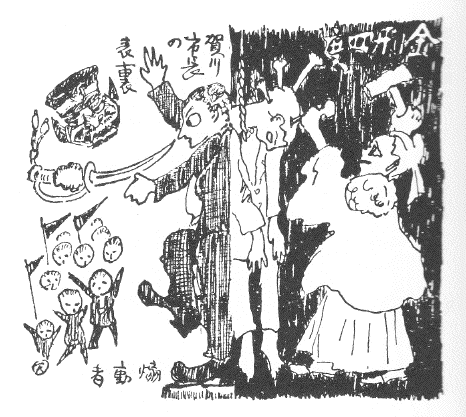
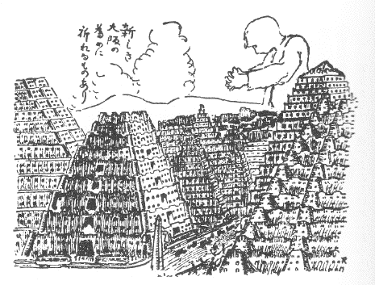
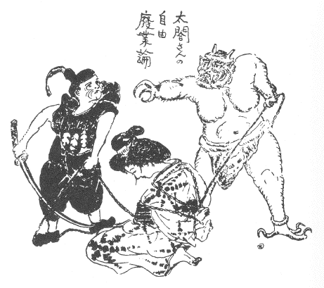
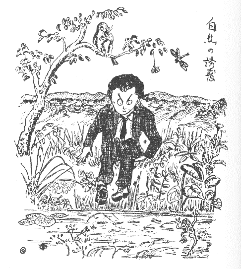

| 空中征服 | |
| 賀川 豊彦 | |
| (2012) | |
空中征服
賀川豊彦
――作者自画――
一 市長就任演説
「偉大なる大大阪の市民諸君、私はこのたびこの大大阪の市長として席を汚すことになりました。私はそれを光栄に思い、また不名誉にも思うております」
賀川豊彦が、大阪市長になったという号外が大阪百五十万の市民に配られたのは、三日前のことであった。それはまったく市民の予想外のことであり、資本家も、労働者も、官憲も、誰もそれを知らなかった。ただ一人賀川豊彦のみが知っていた。
賀川豊彦はコーヒーを呑み過ぎて、貧民窟の暑い夜、一晩寝られないで、苦しんだあげ句、自分自らを市長に推挙し、大阪の空中征服を思い立ったのである。それで、号外の出たのは彼一人が、大阪市中に配ったのであって、誰一人号外を配達したものもなかった。彼は夢の中に、大阪市長になって、床の中で一人演説しているのであった。
「――市民諸君、私が市長としてなすべき事業は実に多くあると思います。その第一は何を言うても、大阪の空中征服であると思います。今日のごとき空を持ち、あの煙突と、煤煙を持っていては、とても大阪市民は、この後五十年の健康を続けることは出来まいと思います。大阪精神の確立はまず、空中の煤煙防止から始むべきであろうと思います」
「私は決して境遇万能論者ではありません。しかし、性格万能論者も必ずしもすべての真理の把持者であるとは言えませぬ。水を離れて魚の生てゆく道がないごとく、空気を離れて人間の生てゆく道がないのであります。したがって大阪人が、大阪精神を創成せんとするならば、まず新鮮な空気を吸うことなしに、それは可能であり得ないのであります。今日空気を売買しているのは炭坑であります。そこは空気を坑中奥深く送らなければ坑夫はみな窒息してしまうのであります。
しかしわが大阪の空気は炭坑に比べて決してよいと言うことは出来ませぬ。大阪の空中の炭酸ガスの量は常に百分の五以上であり、その煤煙の量はまさに世界一であります。
大阪市が世界一の乳児死亡率を持ち、世界一の肺病都市であり、世界一の不健康な都市であるとするならば、私――すなわち諸君の市長が第一の事業は諸君に対する健康の保証であるべきだと、私は信ずるものであります。
爾来
、医者は仁術と言われておりまして、社会民衆のために努力するのが、その使命でありますにかかわらず、今日の彼らはただ金を多く儲けさえすればよいというだけのことになっております。彼らは個人個人に対する医術は知っていても、社会病理に対する診断をなし得ないのであります。彼らは地上を這
うことを知っておりますが、空中を征服することを知りません。資本におべっかを言うことを知っておりますが、貧乏人を見舞うことを知りません。お葬式することを知っておりましても、社会を社会として生かす術を知りません。ここに私は社会病理学者として、まず空中征服の大役を仰せつけられ市長として就任することを光栄に思います。
それで私はまず第一の事業として、煤煙の治療に取りかかりたいと思います。その次は失業者の救済に、その次はスラムの破壊に、北浜の廓正に、都市計画に、新道徳の建設に、私は次から次へと諸君に対する抱負を披瀝して、すぐに改造運動に取りかかりたいと思います......」
賀川市長の就任演説はもう少し長かった。しかし、新聞記者が欠伸
して、中央公会堂から出て行ったので、話はここで切れている。
二 煙筒文明の最後
賀川市長が、中央公会堂の就任演説の時に言い忘れたことは次のようなことであった。
「......諸君、今日のような非文明的な煙筒の都会に住んでいて、諸君は文明を味っている積りでおられるのであるか？
今日かりに、生駒山が噴火して、大阪はまったく昔のポンペイ市のごとく地下に埋没したとしてみたまえ。そして三千三百三十三年後に今日の大阪を発掘せねばならぬことになったと仮定したまえ、それは何という悲惨なことであろう。三十三世紀後の人間は、瀬戸内海の東北隅、元淀川の流域付近に、巨人の墓場のようなものがある。
『なんでもこの付近は、昔大工業の発展した大阪という都市があったんだそうな』
とエスペラント語に似た響きで『改良日本人』が教えてくれても、その時の人々にはそれはまったく不可解のことであろう。
三十三世紀の後には、煙筒などというものは、どこの都会にも見当らないし、石灰は［＃「石灰は」はママ］
すべて採り尽して無いし、石油の油田も採り尽してしまって、動力という動力は、すべてアルコールと電力に変わっている時代であるから、煙筒という言葉さえ、字引に発見されないであろう。
で、大阪市がかつて横たわっておった地方は『巨人の墓場』として知られ、世界漫遊客が必ず訪問するところになっているだろう。
オベリスクの記念塔に比較しては非美術的であり、井戸側としては大きなものであるセメントや鉄製の煙筒は、墓標研究家もその起源をまったく知らないことを自白するに違いない」
こんな、痛快な演説をしようと、賀川豊彦は思うたが、彼はそれをみな言い忘れた。
「残念だった！ 残念だった！ 」と歯ぎしりしながら、中央公会堂を出たが、彼はいったん公会堂の戸口を出るや否や、もう煙の空にまったく絶望してしまった。
「天日為めに暗し」
というのはまったく、大阪の空のために作られた言葉だと思うと彼は市長の椅子を占めねばならぬことを、まったく悲しく思うた。
彼は、先任の市長が、煤煙問題をまったく捨てて顧みなかったことを不思議に思うほどであった。
そうだろう！ 彼らは警察官上りや、教員出身であるために、この空中征服の一大使命を果すにはあまりに臆病であったのだ。彼らは煤煙を征服するだけの科学的知識を持っておらないのであった。無理もないことである。彼らは昼中に市役所の四階に電燈をつけねばならぬほどの暗い大阪市に満足して平気でいたのである。
太陽の光線が、煤煙のために妨げられて、市庁舎の窓まで届かないものだから、池上市長と関助役は昼間も電気燈をつけて執務せねばならぬということは、三十三世紀後にはとても考えられたことではないが、事実はまったくそうであるから仕方がない。中央公会堂のすぐ裏に立つ市庁舎には、昼間に電燈があかあかと灯っているのである。
彼......賀川市長はそれを見てまったく憤慨せざるを得なかった。かつて彼がニューヨークの市に遊んだ時に、彼は人口六百万の都会に煙の上がるのを見なかった。
サンフランシスコにおいても同様であった。ピッツブルグは世界における煙筒の都と呼ばれていたが、そこに煤煙征服の運動が起ってついにピッツブルグ市はその煤煙を駆逐することに成功した。
わが大阪市においても、もしも市民がもう少し科学的に進歩し、資本主義的工場経営の不生産的なことを理解してくれるなら、煤煙文明の破壊運動が当然起るべきはずであるにかかわらず、それが出来ないというのは、実にけしからぬ話である。
「よし、俺はすなわち煤煙征服運動にとりかかる。まず市参事会員に会い、それから市会を招集して自分の意見を開陳することにする」
賀川市長が、市庁舎に帰って、事務室の机の前に坐ったのは、午後の三時半過ぎであったが、室内はとても暗くて、事務がとれない。彼はまた前市長池上がしたごとく、電燈のスイッチをひねった。
不満な心持ちで、市庁舎の窓から、大阪の西の空を見てみると、野田、春日出の方面において、住友伸銅所の太い三本の煙筒から、そして、春日出の電燈会社の太い煙筒からもうもうと、雲のごとき煙の立ち登るのを見た。
彼はそれをじっと見つめていた。そして、この煙の下に幾十万人の労働階級が嘆きつつあるのだと思うと、涙ぐましくなった。
彼はすぐに、取付けてあるベルのボタンを押て、書記を呼んだ。
三 煙筒とアダムとエバ
翌日、市会は午後一時から開会されることになっていたが、悪い空気の中に住んでいるために賀川市長は頭痛がしてならない。彼は市長室に一人物思いに沈みながらあちこちと歩いていた。たちまち壁間に掲っているアルベルト・デュレールの画いた世界最初の人間アダムとエバが夫婦喧嘩をしているのを見た。
彼は活動写真を見ている気でそれに注意した。
アダムとエバが罪のなすりつけ合をしている。
「ねえ、あなた、煙筒が地上に出現したのは、あなたが悪いからですよ」
こうエバが言うと、アダムもそれに負けないで、
「噓を言え！ それはおまえが貪欲だからだ。最初おまえが知慧の実なんか食いたいと思わなければ、今日のような文明の堕落なんかなかったのだ、みなおまえが悪いのだ」
エバはそれを聞いて怒りだした。
「何をおっしゃいますか？ それはあなたに全部の責任があるのです。私のような優しい女ばかりの文明であれば、田園と、手織の文明ですべてが芸術的にいったものを、あなたがカインのような悪性な男の子を私に産ませるものだから今日のような堕落した文明が出来たのです。みなアダムとカインの罪です。煙筒については私は少しも知りません。それはまったく醜い男の罪の結果なのです」
アダムはエバにやり込められて、煙筒の蔭に隠れた。
そこへ神様がお現れになって、エバに尋ねられた。
「エバよ、おまえの夫はどこへ行ったか？ 」
「煙筒の蔭に隠れております」
「ここへ呼び出せ」
アダムは裸体のまま畏
る畏る神様の前へ出て来た。
「アダムよ。煙筒を作ったのはおまえか？ 」
「いいえ、あれはエバの罪でございます」
「なんだ、エバの罪だ？ 」
「ハイ、エバが少し子供をたくさん産みすぎました結果で、多量生産が必要となったためでございます」
「なに？ エバが子供を多く産みすぎたためだ？ 」
「ハイ、まったくサンガー夫人が、今日教えてくれるような産児制限法を、神様から教えていただかなかったためでございます」
四 煙筒と男性文化の罪
神様はエバに向き直られて聞かれた......
「エバよ、アダムの言うことはほんとか？ 」
エバは恥しいものだから、身震いしながら、
「いいえ、神様、アダムの言うのはまったく間違っております。煙筒の生れたのはまったく男のためでございます。アダムの子に、カインと申します今日の資本家のような貪欲な奴がおりますが、その男が最初の煙筒を作ったのでございます。カインの子孫は今日の資本家でございます。男の子は父親に似ると世に申しますが、アダムに悪心がありましたから、カインのようなものが産れたのでございます。アダムは頻
って量の問題を高調いたしましたが、私は質の問題として考えております。煙筒の立ったのはまったく質の問題でありまして私自身も今の先まで、アダムに言うていたことでございます。まったく煙筒は低能な男子文明の結果であると私は考えるものでございます」
アダムはエバが、煙筒は男子の低能な文明の結果だと言うので、神様の前をもはばからずエバのところにつかつかと近づきエバの長い髪の毛を捉えて、
「何、生意気な、毛長猿めが！ 」と引ずり倒した。
神様はアダムを制止して、
「まア、アダム、そんなに激昂しなくてもよい。おまえはこの煙筒の立てられたことを悲しく思わぬか、エデンの花園に煙筒がよく似合うと思うか？ 」
「悲しく思います。しかし致し方がありません。神様、すべてが宿命です。この宿命は、神様すなわちあなたでも、動かすことは出来ないことだと思います。これはエバが産児制限法を教えられなかった無知から起った運命です。すべてが運命です！ 私らはこれを脱することが出来ないのです。神様、私は、あなたが私を創ったことをすら呪います。私は生れてこなかったほうがズッとよかったのです。罪のない、悪のない世界であれば、生れてきてもよかったのですが、生れさせられた。すぐに罪の罠
にかかるは、そのために罰せられるはとくると、私はまったく神様の聡明そのものを疑うものであります。神様、私は疑惑家であります。私は自己の存在すらもこの頃は疑わしくなったのであります。したがって、あなた――神の実在をも疑っているのであります。今日では神を信ずるなどということはまったくこの煙筒文明の邪魔になります」
「待て、アダム、神の思想が、煙筒文明に邪魔になるのか、それとも煙筒文明が、神の思想に邪魔になるのか？ 」
「神様、そんなことはどうでもよいと思います。とにかく、煙のために私はすべてを見失いました。すべては宿命です。今日の煙筒は、神も、人間も、どうすることも出来ない宿命であります」
エバは、アダムが有力に、神様に抗争するので大いに力を得て、
「そうです、神様、今日の煙筒はまったく私たちに関係のないことであります。あれは地球が宿命的に産んだものであります。いや、自然に地球から生えたものだと思います」
それを聞いて神様はカラカラと声高くお笑いになった。その声があまり大きいので彼は幻から醒めた。そして神様のような高笑いで、市長室に入ってくる市会議長と三人の市会議員を見た。神様の笑い声と思ったのはまったく市会議長の笑声であった。
五 すべての人が必要を知る
市長室で、市会議員連の話したことは、まずザッと次のようなものであった。
「ね、市長、実際大阪の煤煙はどうにかしなくてはいけませんな。うちの子供はみな弱くて、とても長生きはしないだろうと私も諦めております。どいつもこいつも青白い顔をして、リンパ腺は腫れ上る、咳はする、毎日医師に診てもらう、私はほんとに大阪の空が呪わしく思います」
これは西区選出の堀江喜一郎の言葉であった。それをうけついで、市会議長の船場繁昌は誰に言うともなく独り言のように言うた。
「ほんとに困ったことです。私などは今年は嫁にやらなければならぬ大きな娘を持っておるのですが、やはり大阪の煙のために肺を悪くしましてな、ただ今は浜寺に保養させているのですが、実に困っております」
船場の言うのを待っていたかのごとく西区出身の松島正五郎がそれに賛同した。
「な、船場君、宅の息子もやられているのだよ、今年高等学校を出て大学の法科へこの四月に入ったばかりに、肺が悪いと言うて帰って来たが、とても君、この大阪じゃ養生はさせられないしね、宝塚へやってあるのだが、まったく大阪の空気は悪いね。どうにか、ならんものかね」
松島正五郎は遊廓から選出せられた男だが息子の生命についてはよほど心配しているらしかった。彼は酒のためにボテボテに肥った老人である。
東区出身の島高蔵も同じ意見であった。それは彼の家の洗濯物がすぐ砲兵工廠の煙筒から出る煤煙で黒くなるということが重なる理由であった。
賀川市長は三人の話を黙って聞いていたが、みな同情すべきことばかりであった。しかし社会生活の根本問題から考えているものは誰もなかった。
船場繁昌の心配は、たとい市会が煙筒駆逐の方針を立てても、石炭商と大会社の反対がはなはだしいから、この計画はまったく失敗に終るであろうということであった。
船場も、松島も、島も、自分一身上の都合で大阪市の空中掃除に賛成しただけで根本問題としては、充分理解がいっておらぬようであった。
市長は尋ねてみた。
「松島さん、あなたは煤煙問題について徹底的に戦いになるお積りですか？ 」
「サア、もし、徹底的というのはどういうことですか？ 」
「すべての煙筒を倒してしまうということです」
「そうすると、風呂屋の煙筒もですか」
「まったく！ 」
「それはどうも困りますな、私も湯屋を三軒ばかり借家にしてもっているのですが、あの煙筒を今取払われるというとちょっと困りますな、じゃ市長さん、私は煤煙反対運動はちょっと見合せます」
市長はさらに島に質問してみた。
「島さん、あなたは私に賛成して徹底的に戦うて下さいますか？ 」
「いや、実は私も親類に、大きな煙筒を立てているブラッシ屋がありますので、それと相談いたしましたうえで、とくとご返事いたします」
「じゃ、船場君、君は徹底的に戦うてくれる勇気があるかね」
「私はやります。私は娘の仇討です。大いにやります」
「そら、面白い、じゃ一つその説明を今日から始めてもらいたいね。お願いだから、市会の説明を君にお願いしたいね」
「よろしい、引受けました。娘の仇討なら、どんなお役でも引受ます」
六 獣畜市会
市長自らが煙煤防止の演説をするのもおかしいと思うたから、市会の有力者、すなわち市会議長自らに提案の説明をしてもらうことになった。
呼鈴が鳴って、八十人近くの市会議員がゾロゾロと市会議事堂に入った。みな煤煙に焦
たような顔をして、少しも生々したところがない。たとえばどぶ溝の中の金魚のようなものである。
船場君は議長席につくや、すぐに開会を宣し、今日は必要あって議長席を副議長に譲るからと言うて、自分は議席に降りた。
副議長の梅田馬造（実の名は三造と言うのだが、市会では馬のような長面をしているという理由で馬造と呼ばれている）が議長席についた。
そして、煤煙防止の提案がまず第一に議場に持出された。
「ただ今、提案の説明を船場君がなさいます」
こう言って、馬造氏は椅子に腰を降ろした。船場氏は口を開いて、演説を始めた。
「諸君、大阪市の煤煙の問題は、もう多年の懸案でありまして、その被害は我々の間にもはなはだしく感ぜられておるのであります。これはまったく人道問題であります『人もし全世界を得るとも、その生命を失わば何の益あらんや』と、いにしえの聖人も申されておりますごとく、我らがどれほど富むために努力しましても、我らの寿命を縮めるようなことをしては何の役にも立ちません。私は諸君がこの案に全会一致をもってご賛成あらんことを希望します」
こう言うて降壇してしまった。
「議長質問」と呼声高く立ち上ったのは安治川
舟三という石炭商であった。
「これは、私の立場から申しますとまことに変なように聞えますよってに、私はこの席ではせいぜい慎しんでおろうと思うておりましたのやけれども、もう辛抱が出来なくなりましたよってに申しますが、煙筒がなくなったら私ら石炭商をどうして、おくれなはるのや、それが聞きとうおます」
この男は「兎」という別名のついた男で、耳が他人の人々と違ってよほど大きく頭の横から長く突出ておるので市会でも有名である。
兎が立ち上ると、すぐ狸が立ち上った。狸は大坂曳船会社の社長で実名を桜島安五郎と言う。狸と言われる理由は二枚舌文部大臣中橋徳五郎の真似をして、狸の焼物を幾百となく自宅の床の間に飾っているからである。
「私も、その点をさっきから疑問にしていたのでおます。煙筒をいったいにやめるとするといったい船の煙筒もいけまへんのやろな？ 」
「そうだ、そうだ」
と梅田が答えた。
「そんなら、いったい機械は何で動かしますのや」
「我らは石炭を使用しないで機械を回すことは出来ないのであります」
船場は立上って言うた。
「誤解せられては困ります。この案はすぐに煙筒を廃止するという案ではありません。煤煙防止のために、電流によって煤煙の立たないように装置するか、あるいはまったく電力のみを使用せよということにきめようというのであります」
「圧制！ 圧制！ 」
と安治川舟三が叫ぶ。
七 算盤演説
議員は口々に隣のものと話をしたり、議論を闘わしたりして、船場の言うことは充分聞えなくなった。が船場は続けて次のようなことを言うた。
「私の宅に娘がありますが、大阪の市内で育てたばかりに肺病にかかって嫁にもやれないのであります。こんな経験は私一人ではないと思います。これもみな大阪の空気が悪いためでありまして、私はこの大阪の空を呪うものであります。しかし我らが少し目覚めて、煙筒に五千ボルトくらいの電力を通ずるならば煤煙は立たなくてすむのであります。我々はこれを実行したいのであります」
「それは実行不可能である」
「それはユートピアだ」
「健康にはよいが煤煙防止は産業を破壊する！ 」
と口々に野次
り出した
「なぜ煤煙防止は産業を破壊するか？ 」
と船場が問えば、煙が出なければ機械が回らず、機械が回らなければ、産業が衰えるからだと狸が答えた。
「多少の犠牲を払わなければ！ 」
と半数までのものが言う。
「多少の犠牲」とは何であるかと尋ねると、国が富むためには煤煙が空中に飛散するくらいのことは辛抱しなければ駄目だと答える。そのために少々肺病が多くなっても、国家の富力を増すためには仕方がないと言う。狸は、
「『高き屋に昇りて見れば、煙立つ、民の竃は賑いにけり』だよ。煙が立つので賑やかなのだ」と叫ぶ。
「討論終結！ 討論終結！ 」
と隅から叫ぶものがある。そこで、賀川市長は慌てて議長に発言権を求めた。
市長は演壇から議席を眺めてみたが、議席には人間らしいものがおらなかった。すべての議員が動物的に見えた。それもそのはずである。馬と、兎と、狸とが議席に頑張っているほかに鶏も、牛も、豚も、雀も、猫も、鼠も、蝗
も、そこにいることに気がついた。「豚に真珠を与うるなかれ」「猫に小判」ということはよく知っている。大阪の市会議員の連中にいくら、都市衛生学を説いたところで、また都市美学を説明したところで、黄金の光に眩惑せられて、何の役に立たぬことを賀川市長はよく知っていた。
ただ大阪人のよく知っていることは算盤
である。それで彼は算盤演説をすることにきめた。
「諸君、八十一人の議員諸君、諸君の数は九九、八十一であって、実によき数を表象しておられるのであります。九は成長の数であり上吉を表すものであります。さて大阪市の人々は今や百三十三万三千三百三十三人三分の一に増加し（「それは国政調査と違っている」と叫ぶものがある）今なお恐ろしき勢いをもって、増加しつつあるのであります」
「今度の市長はなかなか算盤が詳しうおますな」
と感心しているものがある。
八 煙筒文明の罪悪
「エヘン」と市長は一段声を励ませて、
「しかるにですな、九九、八十一人の市会議員諸君、大阪市の人口増加は出産と死亡の差にはよらないので、みな他の地方から流入するために増加するものであります。大阪市内では死ぬ人の数が生れる人の数よりも多いのであります」
「そうなっとりますかな？ 」
と猫と豚とが感心している。
「これはなぜかと算盤を取ってみますと、まったく大阪市が不健康地であるということに起因しているのであります」
「このたびの市長は算盤がよほど上手と見えますな」
こう言うて、蝗
と鼠が感心している。
「大阪市の９×９＝81
の市会議員諸君、なぜ大阪市にかくは死亡率が高くなったかと言えば、それはまったく煙筒から出る煙のためであると言わなければなりません。
諸君は、煤煙はやむを得ざるものであって煙筒とは煤煙を製造する道具なりとお考えになる方もありましょうが、それは大きな間違いでありまして、煙筒はまったく石炭の燃焼しないために起こるものであります。否、煤煙は石炭の粉末を空中に送るのと同じことであります。大阪には大小煙筒らしい煙筒が三万三千三百三十三本あり、百尺以上の煙筒が、一千九百九十九本あるのでありますが（「よくまあ数えたものですなあ」と感心しているものがある）これらが吐き出す煤煙の量は一年間に四百四十四万四千四百四十四貫四十四匁に近いものであります」
――「それは出鱈目
だ、少し計算が違っている」――と叫ぶものがある。
――「あの計算は合っておるやろ、あれより少いことはあるまい」
――「誰も計算してみたことがないから判らないよ」
「謹聴、謹聴」と言うものがある。
「すなわち大阪市は無用なる浪費をしているわけになるのであります。諸君は、金儲けのために煙筒もまたやむを得ないとおっしゃいます。しかしそれは算盤を持たぬ人の言うことでありまして、煤煙のために空気が悪くなり、空気が悪いために呼吸器病の人が増加し、毎年千人に対して五人だけ多く死ぬとすれば、その薬代と、診察料と、養生費とを計算するならば、我が大阪市のような都会においては実に大きな損害であると言わなければならないのであります。
かりに一人の人が十八日間病床に横たわるとして五人であれば九十日間であります。これを大阪市の人口百三十三万三千三百三十三人三分の一についてみますと、煤煙のために受ける損害日数は十一万九千九百九十九日九分九厘であります。一日の日給を三円と致しますと、三十五万九千九百九十九円九十九銭余の損害となり、その薬代と診察料、養生費入院料を一日五円と致しますと、五十九万九千九百九十九円九十九銭九厘の損害となるのであります。これはまだ人間の価値を入れないでそうであります。もし人間の価値を入れますと大変なことになります」
「間抜けめが何をぬかしていやがるんだい」と計算のわからぬ松島が憤慨している。
九 賀川市長の表裏

市長はなおつづけた。
「ドイツの学者は人体の模型を蠟細工で内臓から骨格、細胞から神経までいちいち丁寧に作っていれば一人に対して二億円はかかると申しております」
「そんなにかかるものですかな」と狸が感心している。
「そこで大阪市で毎年肺病のために、五人ずつ多く倒れると仮定すれば、一年間に六千六百六十六人多く死ぬことになり、そのために千三百三十三億三千三百三十三万余円の損害を招いていることになっているのであります。
これに薬価の損害と、日給の損害と、石炭代の損害を加えますと、大阪市の損害は実に莫大なものであります。これを表に現して読上げますと次の通りになります。
大阪市煤煙損害表
一、千三百三十三億三千三百三十三万円 肺病死人代
一、三十五万九千九百九十九円九十銭 病気損害日給代
一、五十九万九千九百九十九円九十九銭 病気保養料
一、四百四十四万四千四百四十四円四十四銭 空中散布石炭代（一貫一円として）
このほか、幾億万円の損害は人体の浪費、美に対する鑑賞力の減退によって持来らされているのであります。
それで、九九、八十一人の議員諸君におかれましても、努めてこの人類の大濫費を節約せられる意味で、煤煙征伐をして下さるなら、私の幸福はこれに過ぎるものはないのであります」
こう言うて市長は演壇を去った。
「議長」
と声高く叫んで立上ったのは、安治川石炭君であった。
「諸君、私は市長の説には絶対に反対であります。市長の言う通りにしておれば、我らは食うことが出来なくなります。煤煙が出ないようにするには、煙筒を倒さねばなりませぬ。煙筒を倒せば石炭が売れなくなります。石炭が売れなくなれば、産業が潰れてしまいます。
諸君、私は市長の前身を知っております。彼は実に危険人物であります。彼は実に表面温順と見ゆれども、内心陰険な人物であって、革命思想を抱いておるかの感を与えしむる人物であります」
「失言！ 失言！ 」と叫ぶものがある。
「失言じゃない！ 俺は思った通り言うのじゃ！ 賀川豊彦！ 彼は危険人物じゃ！ 彼はすでに新聞紙法違反によって四度も罰金刑に処せられているではないか！ 俺は知っている、彼は人面獣身の男であって、資本家を困らせて悦んでいる男である。彼は売国奴であり、労働運動界のユダである。彼のごとき売国奴を大阪市の市長としておくことは実にけしからぬことである。私は彼の醜行をあえてあばき、彼によって迷わされている人々を呼び醒す使命をもっているものである」
一〇 市会の混乱
安治川石炭君が、攻撃の征矢
を放つや否や松島女郎屋君も、彼に賛同した。
「賀川を殺せ！ 賀川をやっつけてしまえ」
議長を勤めている馬君、大きな眼をギョロつかせ、長い頸
をさし延べて、
「松島君に注意します。発言は議長の許可を得てからにして下さい！ 」
「それでは議長、私に一番やらして下さい」
議長は静かに――
「では松島君！ 」と言う。
松島は大きな五体を演壇に運んだ。しかし石炭君はまだ演壇を下ろうとはしない。
「議長、私はまだ発言中であります」
「議長無能！ 議長無能！ 」と叫ぶものがある。
「安治川君はあまり多く一人でしゃべりすぎております。議長は降壇を命じます」
「圧制！ 圧制！ 」と連呼するものがある。
こうしているうちに何人か議長席に近づいて、議長の頭を殴るものがあった。それは気の早い蝗
であった。
それからの議場の混乱は名状すべからざる状態となった。
「号外！ 号外！ 」の呼声と号外売りの鈴の音は大阪市中に鳴り響いた。
給仕が一枚の号外を持って来た。賀川市長はそれを受取って見た。驚くなかれ！ 市会の混乱が早や号外に出ているのである。
その号外の内容は次の通りである。
大阪市会の大混乱
煤煙問題について討論沸騰！
賀川市長蝗に殴り飛ばされ＝
労働団体の総同盟罷工準備さる＝
本日開会の大阪市会は未曽有の大混乱を醸し煤煙問題について甲論乙駁数時間にわたって意見まとまらず。ついに乱闘を見るに至り、牛馬犬猫相戦い双方多数の負傷者を出すに至れり、そのために赤十字社は特志看護婦一大隊を市会議事堂に派遣したり。また、労働団体のこれを聞くや憤慨一方ならず市会の横暴に対して総働盟罷工をもってせんことを決議せり、このために市内の混雑はなはだしく市内電車の運行は数時間前より中止せられたり。
この号外を見て第一驚いたのは馬造君であった。
「おい！ 賀川君、僕は未来と過去の区別がつかなくなったが、君はこの号外を信じ得るかね！ 」
船場も妙な顔をしている。
「こんなはずはないがな、まるで夢を見ているようだな。僕がここに来る時はまだ電車は完全に動いていたぜ！ 」
「おお判った。判った！ 」と馬造君が絶叫した。
「昨日無線電話の工事を済ませて、今日から市内の各新聞社は市会の様子を一々編集室に坐っていて聞けるようになっていたのだ。こりゃ、しまった。こんなことだったら、もう少しどうにかしておくのであったのに！......
まア仕方がないよ、なるようになるほか仕方がない！ 」
壇上の松島遊廓君は号外を見るなり一層怒り出した。
「これはみな市長のやり口である。彼が労働者を煽動し、新聞記者を煽動し、大阪市を撹乱していることはこれでもよくわかる。我らは彼を倒すまで戦わねばならないと思う！ 」
船場君は壇に近づいて行って松島に私語した。するとさすがに興奮していた松島君がニヤリと笑いながら降壇してしまった。
一一 太閤さんの賛成演説
船場が松島に耳うちしたことはほかでもない。
「豊臣太閤秀吉公が傍聴に来られたから、つまらぬことを言うな」
と注意したのであった。
なるほど松島が目を挙げて注意して見ると、豊臣太閤秀吉公が傍聴席に来ている。賀川市長は頻
って挨拶をしている。市長は太閤さんにこんなことを言うている。
「太閤さん、まことに恐れ入りますが、あなたの煤煙問題のご意見を伺わさせていただけるなら、まことに幸いと存じます」
太閤さんは困ったような顔つきをして、
「それはどうも困りますな、後から大塩平八郎君が来るはずだから大塩君に頼みたまえ！ 大塩君は、天保時代から労働問題――いや社会問題には詳しくっておられるのだから、......しかしどうも、賀川君、大阪市の煤煙には困ったものだね」
「そこです、太閤さん！ その困ったものだねと言われるそこのところをお聞かせ願いたいのです。また大阪市は近き将来において市区改正をせねばなりませぬので、あなたが三百年前にご計画されたあの壮大な大大阪の名を傷つけないように、大阪の市会議員によく言うて聞かせていただきたいのです」
市会議員の面々は皆興味をもって二人の会話を聞いていた。
太閤さんは、
「それではごく簡単に！ 」と足を演壇に運んだ。
「太閤さん、万歳！ 」
第一に叫んだのは松島であった。
「よう、親分！ 」と安治川が叫んだ！
「大統領」と狸が叫ぶ！
太閤さんは背が低いので演壇から首がかろうじて出るばかりである。で、賀川市長は演壇の側に立って話をしてくれと依頼した。
「みなさん、私の死後三百年の後になって、私が大阪市の繁栄に関して、意見を述べることの出来るのを非常に光栄に思います。しかし、私はどうも今日の大阪人の肝玉の小さいのにびっくりしているものの一人であります」
ここまで言うた時に、大塩平八郎氏も傍聴席に現れた。が、それは賀川市長のほか誰にも気がつかなかった。
「多分、大塩平八郎君と、私のほか、大大阪の将来について、徹底的に考えたものはあるまいと思います。もちろん現市長賀川豊彦君の大計画については私もとくと注意し、先日も大塩平八郎君と、地獄の門の入口で立ち話をしたことでありましたが、私は賀川豊彦君の煤煙征服運動には徹底的に賛成するものであります」
松島と安治川は、議席番号を書いた札の後に小さくなっている。
太閤さんはなおも落着いた態度で語りつづけた。
「今日、あの私の建てた大阪城の石垣を見て下さい。私はある計画をもって、あの城を築いたのであります。また桃山城を築いた時でも、聚楽
を建てた時でも私は日本人として恥しくないものを建てたいと努力しました。それが今日桃山式と世に言われているものでありますが、どうも今日の大阪人は駄目だと言うよりほか批評する言葉がありません」
賀川市長は太閤さんを味方に引込んだので、肩を吊り上げてニコニコしている。
一二 弁士中止
「やはり太閤さんは違ったところがおますなア」と島がひとり感心している。
太閤さんは演壇の机の水を呑んで、また続けた。
「私を帝国主義のように言う人があるが、それは大きな誤解であって、私は勉めて哲人政治を実行せんと努力したものであります。私は今日の種類のデモクラシーは多数政治であって、どうも思ったような理想的の政治がとれない。私はどうしても、私がかつて大阪で実行したように、会とか組合とかを通じて、代表者の意見をまとめていくがよいと思います。もちろん、朝鮮征伐をしたことなどについては、世間には色々と意見もあるようですが、結局は私が日本の独立を鞏固
ならしめんために計ったにほかならないのであります。私は日本を統一しても少しも野心のなかったことは、諸君も理解して下さっていることと思うています。それと同様に朝鮮征伐も別に野心のあったわけではありません。日本をして東洋の一角に地位を安定ならしめるということが、ただ一つの目的であったのです」
「太閤さん昔のことはもうよい加減にしてくれ、煤煙問題はどうすればよいのだ！ 」
梅田が大きな声で叫んだ。
太閤さんはその声にあまり驚きもしないで、
「煙筒はやめるがよいと私は思いますね。私は、賀川君の空中征服には大賛成であります」
「太閤さんもよほど近頃は過激化しているね」
羊がこんなことを言うた。
太閤さんは、この声を聞いてよほど気分を害したと見えて、
「私は、ただご挨拶をしようと思うて余計なことまでしゃべりました、ご謹聴を感謝します」
と言うて、サッサと降壇してしまった。
賀川市長は太閤さんを傍聴席まで送り届けて、また大塩平八郎の所に行って頭を下げた。すると、大塩平八郎も一場の演説を承諾した。彼は、大髷
を結い、大小を腰に差したまま、眼を吊り上げて演壇に立った。見たところどうしても、明治四十年式の社会主義者そっくりである。
賀川市長は大塩平八郎氏を議場に紹介した。
「ようレニン！ 」
「直接行動の親分！ 」
などと、口々にはやすものがあった。
大塩は始めから、大声に、いかにも興奮しているといった調子で、叫んだ。
「煙筒は社会の敵である。肺病人を作り、貧民を作り、濫費を助長し、空中を乱す、これ社会万民の敵である。煙筒がなければ産業が発達しないと考えるがごとき野蛮人は、一日も早く死んでしまえ！ 煙にも種類がある。私がかつてあげた天満の煙のごときは最も煙の中のすぐれたものである！ 」
「弁士、中止！ 」
大塩の演説が面白いところまで行かぬうちに、尾行巡査が電話で若松署署長を呼び出していたものだから、署長は大塩の演説を中止することを手柄顔に「弁士中止」をやった。
議場は混乱した。
「やらせ！、 やらせ、大塩にやらせ！ 」
と、狸も犬も兎も、こう叫んだ！
牛は若松署長に抗議した。
「自治権を蹂躙
している」
松島は若松署長に飛びついていった、巡査と松島が格闘をやった。
署長は演壇から解散を命じた。
賀川市長はそれに抗弁した。「大大阪の自治権は若松署長によって蹂躙せられた」と。しかし若松署長は「まだ特別市制がしかれておらぬからそれは問題にはせぬ」と弁解した。
一三 英雄主義的民主論
市会が解散となった後、太閤さんと大塩平八郎と賀川市長が市長室で茶を一緒に飲んだ。
「今日は実に愉快でした。こんな愉快なことはありませんな......」
こう猿面冠者が口を切ると大塩は「言いたいことを少しも言わさないで、私が演壇に立つとすぐ弁士中止をやるのだから、実に大阪の警察当局のやり方はひどい。徳川政府によく似たところがある。いや徳川時代にでもまだ言論の自由があった」
賀川豊彦は大塩平八郎に尋ねてみた。
「大塩さん、徳川時代がまだ今日よりよいところがあったというのは、いったいどういうわけですか？ 」
「その時代にはまだ資本家などいうものがおらなかったし、とにかく、正義とか公道とかいうものが強く高調せられると社会に通ったものだよ、それが今日では、新聞も雑誌も議会も、自治体も、すべてが資本主義化しているものだから、正義も、公道も、決して通らない。口には民主主義など言うけれども、結局は金力政治だね。徳川時代はまだ武勇で治まった時代だけあって、金に汚ないところがなかった。今日の市会の様子を見てみると、どうも議員が真面目じゃないね。すべてが金権化しているね。これじゃ賀川市長がいくら苦心して、空中征服を思い立っても結局は駄目だね。
しかし、賀川君、私に一つの案があるのだよ。それはここでは言えないがね......君、ちょっと耳を借したまえ......」
賀川市長が大塩の唇に耳を持ってゆくと大塩は小さい声で「煙筒の掃除日を断行することだよ」と囁いた。
太閤さんは、大塩の言ったことを聞いてニヤニヤ笑った。
「大塩君。そんな煙筒の掃除日といったような、ケチなことをやらさないで、断然このさい大阪市の全動力の電力化を考えなくちゃ駄目だぜ！ 私であれば思い切ってこのさい、朝鮮征伐をした勇気をもって、大阪市の全動力の電力化を絶叫するね。その点から言うと、ロシヤのレニンはえらいところがあるね。僕はあのような男が好きだ」
大塩はそれを冷やかすように、
「あなたとレニンとは少し似たところがありますから、共鳴せられるのはもっともです。しかしあなたがもし、今日のロシアを全部まかされたとして、今過激派の取っているようなやり方をおやりになりますか？ 」
「いや、私は過激派のやり方は下手なやり方だと思う。あア人心を倦
まさせてはいかぬ。人間というものは妙なもので英雄的なところがないと倦んでくるものだ。すべてを凡人にしてしまうものだから、みなが早く倦いてしまったのだ。もう少し理想主義的なところがなくてはいかぬ。僕はこの点は過激派のために惜しむね。むしろこの点はフランス流の英雄心の高調や、新理想主義の加味せられたサンヂカリズムが面白いと思うね」
「太閤さん、あなたはいつサンヂカリズムなどいうものをご研究になったのですか？ なかなか隅に置けませんね」大塩平八郎はびっくりしてそう言った。
それに対する太閤さんの答えは、振ったものであった。
「冥府
へはな、近頃各方面の人間が集まるので、その男らの言うところを盗み聞きしているだけでも賢くなるよ。そいつら、どうせ地獄へ来るような奴だから、皆賢いよ」
一四 市長の出所
「おい、あんな市長を誰が連れて来たのだい？ 」
松島遊廓君が市会議場の入口で安治川石炭に尋ねた。市会が解散になった後、彼らはどこかで一杯飲もうということにきめて、今出かけるところであった。
「僕は知らんぜ、いったいいつ市長が出来たんだい？ 君知ってるか？ 」
安治川は、そう答えて、また尋ねた。
「実にけしからぬ奴だ。太閤さんはまだよいとしても、大塩平八郎のような危険人物と交際している男を引っ張って来なくてもよかりそうなものじゃが、あれは船場君のいたずらかな？ 」
ちょうど、そこへ船場君が反対の方向からやって来た。
「おい、船場君、君よい加減にしなくちゃいかぬぜ、あんな危険人物を連れて来て君はどうする積りじゃ、天満を焼けへんか？ 」
「僕は何にも知らないぜ」
「君も知らないのか？ 」
松島はびっくりしている。
「いったい、どうしてあの男は大阪市長になったんだい？ 」石炭は不思議そうに尋ねた。
「サア？ とにかく困ったものだね、今日の態度では、辞職してもらうより仕方がないね」
「放逐してしまおうじゃないか」こう島が叫んだ。
松島と安治川の声があまり大きいので帰りかかっていた他の市会議員までが、集まって来た。そこで、松島は議場の入口で大きな声で怒鳴った。
「ちょっと諸君に伺いますがね、諸君の中で現市長がどうして市長にせられたかご存じのかたはありませんでしょうか？ 」
猫も、狸も、鼠も、馬も、みな顔を合わせて小さい声で囁いている。
「君、知っているか？ 」
「俺は知らない」
「私は知らない」
「僕も知らない」
松島は否定の声の走るのを見て、
「諸君は実にけしからんね、現在市会議員でありながら、現市長がいかにして選挙せられたかそれさえ知らないとは。市会も実に危いね」
狸は大声で叫んだ。
「じゃ松島君、君は知っているか？ 」
一同のものは彼から明確な答えを得ることと思うていた。しかし松島の答は否定的であった。
「僕も実は知らないんじゃ」
一同はドッと笑った。
兎が叫んだ。
「小山健三さんに聴いてみい――大阪財界の元老がよく市長を引っ張ってくるから、小山さんが知っているかも知れぬ」
「そうだ、そうだ、府の高等刑事に聴いてみい」
「島徳か、宮崎敬介に聞いてみい、株屋は耳が早いから知っているかも知れぬ」
そこで松島は給仕を呼んで四方に電話をかけさせた。電話を待っている間議論が色々と咲いた。
ある者は「官選市長だと思っている」と言いだすものもあるし、ある者は「あまり長く市長がなかったので、府知事から任命せられたはずだ」と言うものもあった。
またある者は今までに例のないことだからわからぬと言うものもあった。
ある者は「現市長がすでに市長である以上、市長として置ておけばよいのだ」と主張した。
慌しく給仕が走り込んで来た。
「宮崎さんも、島徳さんも、刑事も、小山さんもみな知らぬと言っておられました」
「サア、大変だぞ！ 」と鼠が小さい眼をパチクリさせた。
一五 市長神話説
市長の出所がわからぬものだから、色々臆説が出た中に、太閤さんと現市長との間に密接な関係があるという説が、有力になってきた。
その論拠はこうである。大阪市の恩人である豊臣太閤の認めている賀川市長は、何人が推薦するより有力な推薦者を持っている。彼は豊国神社の主神と交通があるところから見ると、神ながらの道に通じ、あるいは天照大御神のご託宣によって、市長になったのかも知れない、あまり乱暴なことを言うてはいけないと言うのであった。これは天満天神の地方から選出せられている柔和な牛の主張するところであった。しかし、この説に反対したのは通名カニス・レオすなわち猫であった。
「現市長の出所は明かである。それはロシアの真似をして、無産者専制を出現せんとする自己任命の市長にほかならない。かくのごとき市長は民主運動の本源に背くものであって、我らは徹底的に戦わねばならぬ」
こう言うと、馬はそれに反対して、
「だって、猫君、ロシアにはとにかく共産党という政党があって、一種の政党専制をやっているのだが、賀川にはそんな政党も何もないじゃないか？ だから賀川がロシアの真似をしているというのは間違っている」と叫んだ。
それに対して、猫は、答えた。
「それでも大塩平八郎と関係しているところを見ると、よほど臭いぜ」
議論はいつ果てるとも知れなかった。で、結局、馬と牛とが、太閤さんと大塩平八郎のところに聞きに行くことになった......まだ太閤さんも大塩さんも、市長室にいると給仕が言うたからであった。
牛はうやうやしく、太閤さんに一礼をして尋ねた。
「ただ今市会議員の間に議論が起りましたので、お尋ねいたしますが、いったいあなた様と、市長殿とは、どんな関係がおありになるのでござりまするか、それをちょっとお聞かせ下さるなら、幸いだと存じます」
「ウム、友達でな」
太閤さんは早口にそう言うた。牛はそれ以上聞けなかった。
今度は馬が大塩平八郎に尋ねてみた。
「賀川さんは、どうして大阪市長になられたのでござりますか？ 」
「そら君、君のほうがよく知っているだろう。君のほうが市政には僕より長く関係しているから」
平常から物知りを自慢にしている馬はそれ以上聞けなかった。二人はすぐに市会議事堂に帰って来た。そして牛と馬は言うた。
「太閤さんは市長さんと友人関係だそうな」
「大塩平八郎は、市政にはあまり通じておらないそうな」
「賀川市長はどこから来たか両人に尋ねたかね？ 」
松島は尋ねた。
牛は激昂した句調で、
「ウム、それはもう太閤さんとの友人関係だと言うから判っているじゃないかね」と答えた。
牛の答えに賛成するものが多くあった。松島と安治川はそれに反対した。
「君の考えはどうだね、馬造君」
馬造はそれに対して、曖昧な答えをした。
「僕には、どうもわからぬ。もういったん市長になった以上は仕方がないと思うね。我らに市長が要るとすれば、そのままにしておけばよいじゃないかね......」
「そうだ、そうだ！ 」
「君らはすべて盲従的だからいかぬ」
そう松島が言うた。すると兎が怒り出した。
「何が、我らが盲従的だ？ 貴様こそ、女郎屋商売で、人肉を平常食うていやがって、......貴様こそ獅子や虎に勝る猛獣だ」
そこでまた一喧嘩起りそうになった。しかし馬と牛とがそれを仲裁して、現状維持をやることになった。
その時たちまち、万雷の轟くがごとく市庁舎の前に「万歳！ 」の声が起った。その声は五万や十万の口から出たものとは思われなかった。市会議員はすべて、あわてて首を窓から外に出した。
市長室にいた太閤さんも、大塩平八郎も、賀川市長も皆違った窓から首を出していた。
一六 市庁舎の内外
市庁舎前の群衆はすでに号外で報ぜられた大示威運動であった。赤い旗、青い旗、黄いろい旗、黒い旗、白い旗、三角旗、流れ旗、幾万とも数えることの出来ない労働者諸君の持つ旗は街路を埋め、全市は鼎
の湧くがごとくであった。
色々な標語が、旗の上へ画かれている。
「生産者を解放せよ」「我らは生存権を要求す」「我らは煤煙文明を弔う」「煙筒を葬れ」「死線を越えて」「資本主義を葬れ」などいうのがその主なるものであった。
太閤さんは大悦びである。
「朝鮮征伐の時にも、これだけの人は揃わなかったね......何十万人いるだろうか？ 」
市長はそれに答えて言うた。
「五六万人でしょうね」
「慶長の頃では、五十万と号せるね」
大塩平八郎も感心している。
「よく気が揃うたものですなア、これだけの民衆が、わしについててくれたら、天保八年二月の事件には敗けなかったになア」
太閤さんは尋ねた。
「賀川さん、いったいこれは何の目的で行列しているのですか？ 」
「私もまだ聞かないのですが、工場管理を主張しているのだと、私は思います......ちょっと待って下さい......今、聞いて来ますから」
賀川市長は二階から飛降りて、行列の一人に尋ねた。
「君、いったい、この示威運動は何の目的ですか？ 」
「これですか？ これは不景気のために資本家の団体が一斉に賃銀値下をしたものですから色々の要求をして示威運動に移ったのです。あなたは賀川さんですね。あなたが知らない理由がないはずじゃありませんか！ 市長になるとやはり駄目ですね。やはり、労働運動に政治は禁物ですね、すべて間接行動は駄目です。直接行動でなければラチがあきませんなア」
こう言うて、その労働者は行き過ぎてしまった。
賀川市長は、賢いことを言う労働者もあるものだと思いながら、市長室に帰って来た。そして太閤さんに、
「不景気の示威運動です」と答えた。
「なるほど、気をつけて見ると煙筒から煙の出ようが少いようだ」と太閤さんが叫んだ。
「いや、私も今、気のついたことですが、市内の煙筒はすべて煙を出しておりませんよ、こんな空を見ることは実に大阪としては珍しいことです」
そう賀川市長は言うた。
「そう言われて見ると、そうですね」と大塩は不思議がっている。確に昼過ぎまで、濛々
と出ていた各会社の幾千本の煙筒からは申合せたように煙が出ておらない。
賀川市長は大悦びである。
「久しぶりに大阪の空が晴れました」と。
しかし隣の窓からのぞいていた安治川石炭君、松島遊廓君の連中はびっくりしている。
「これもまったく賀川豊彦が煽動したからだ。賀川は我らを市会に招集しておいて、その留守の間に、我らの関係している諸会社にこんな騒動を起させたのだ――やはり賀川を徹底的に排斥しなくちゃいかぬ」と話していた。
なお、窓から街を見ていると幾千となく白服の巡査が通る。それを見て、太閤さんは市長に尋ねた。
「アレは、何ですか？ 」
「アレは示威運動を取締る巡査です」
「フウム！ 」太閤さんはびっくりしている。
「こんなことにびっくりなさってはいけませんよ。この大行列の中には私服巡査が半数以上おると考えても差支はないでしょう」
「ヘエ？ 」今度は大塩平八郎がびっくりしている。
「すると、何ですか、この行列は労働者の行列ばかりじゃないのですね。官憲も助けているのですね」と太閤さんが尋ねた。
「助けているのじゃありませんよ。太閤さん、危険人物が多いので、尾行の巡査が一人に一人ずつついているものですから、千人の行列がありとすれば、二千人の行列となり、一万人の行列だと二万人になるのです」
「フウム、日本政府は随分、危険思想に金を費しているのですね？ 」
「監獄費と警察費に、一億一千万円いるそうです」
「朝鮮征伐が出来ますね」と太閤さんは眼をむいていた。
十七 淀屋橋の瞑想

大示威運動が過ぎ、太閤さんと、大塩平八郎の帰った後、賀川市長も、私宅に引上げることにした。
彼の私宅は、大阪市の南端後宮
の木賃宿の裏にあって、家の広さは九尺二間、奥二畳に、表三畳の大家屋である。
彼は電車に乗ろうと思って大江橋の停留場に永く待っていたが、十分待っても、二十分待っても、電車は来なかった。気のついたことは市電の従業員も全部ストライキに加わっているということであった。
――先刻にあんな大きな示威運動を見せつけられて、早忘れていたか......と自分であまり、ぼんやりしていることを恥じ、急いで、淀屋橋筋を一筋に後宮の貧民窟まで歩いて帰る決心をした。
彼は淀屋橋筋を、歩きながら都市計画のことを色々と考えてみた。
――池上市長の時代に作った都市計画なるものは、淀屋橋筋を一直線に拡げて、大阪市の最大道路にしようというにある。
しかし、彼は考えた。大阪市は高速度鉄道も持たず、市を斜めに切る対角線道路も持っておらない。すべての道は九十度の角で結びついている。すなわち、都市計画委員は九十度角の頭脳の持主であったとしか考えられない。
それで彼がなお、市長として数ヶ月の椅子を占め得るならば、再び、新理想主義の都市計画を立てて、市会に一波瀾起さねばならぬと考えた。彼はまた、家屋の建築法にしても、今日のようなブロザイックな面白くもない角九十度式建築の代りに、角八十七度半ないし角七十七度三分の一式の建築を命じ、都市の美観を添えねばならぬと考えた。道路にしても、今日のような非自然的なアスファルトや、木煉瓦の代りに黒土を化学作用でゴムのように弾力を持たせ、しかも木煉瓦以上に固い性質をもっているようにしたサブスタンツをもって敷きつめるようにしたいと考えた。
彼はまた商業の運命についても考えた。今日行われておるような、商業制度が廃止せられ、消費組合を基礎とする交換制度の来るのはいつのことかと考えた。こう考えると、彼の関係している消費組合大阪共益社のこと、神戸購買組合のことが頭に浮び、毎月の欠損のことに気がもめるかのごとく考えられた。
淀屋橋筋は、全市のストライキがあっても相変らず丁稚
らは急がしそうに店先をウロウロしている。しかし、みな青い顔した肺病持ちの顔みたいなものばかりで、彼はやはり煙筒廃止の必要を痛切に感じた。
彼は一時間ばかりかかってようやく恵比須町につき、後宮の貧民窟に帰って来た。
帰ってみると、彼の家の前には、ゴロツキが幾十人となく待っている。
彼の姿を見るや否や、その一人が大声で叫んだ。
「おい、賀川、貴様は労働者を煽動しやがって、大阪の煙筒から、一本も煙が立たぬようにすると言いやがったそうじゃが......そらほんとか、聞かしてもらおうかい」
一八 暴力と真理

ならなくてもよい、市長になるものだから、またゴロツキにいじめられるのだと思うと悲しくなる。
「おい、賀川、貴様は大阪市の煙筒から煙が少しも出ないようにすると言うじゃないか、いったいそんなことが出来ることか、出来ないことか、やってみるがよい！ 煙が出なければどうして機械を回すんだい？ 」
「電気で回せばよいじゃないか！ 」
「その電気がさ！ 煙が立たなければ起らんではないか！ 」
「水力で起るじゃないか！ 」
「水力って、なんぞい！ 俺にはちっとも判らねえだ！ 貴様は、そんなことを言いやがって、わっちの顔を潰しやがるな――こら賀川、貴様は俺の顔を知っていやがるだろう。俺はな、ヘン、ポンポンながら『おんびき虎』の一の乾分
蛇の目の熊五郎と言うもんだ。今日は貴様の首玉一つ貰いに来たんだ！ 貴様はよくもまア、大正の今日に大塩平八郎なんて奴を冥途から呼び返して来やがったなア、俺はな、貴様の顔を見るさえも癪にさわって仕方がねえんだい！ 」
そう言うて、蛇の目の熊は市長の顔に唾をはきかけた。賀川市長は貧民窟のゴロツキ心理をよく知っているから、黙っていた。そしてはきかけられた唾を拭きもしないで、太陽に向けて乾くまで待っていた。
蛇の目の熊の乾分らは、
「あいつはよほどず太い奴やな。はきかけられた唾をお日様で乾かしていやがる」と口々に言うていた。
今度は、熊は賀川の左の頰ぺたを力一ぱいに殴りつけた。
「おい、賀川、貴様は大阪市民を嬲
りものにする積りか？ 俺はな、忠君愛国の思想から煙筒の必要を考えてるのだ。――貴様は国を亡ぼさんがために労働者を煽動して、煙筒を破壊しようとしているンだろう。......まだこれでも懲りなければ、こうしてやる」
熊は賀川の胸倉を取って土べたの上に引倒し、乾分らと寄ってたかって気絶するほど踏んだり蹴ったりした。しかし賀川は別に反抗もしなかった。暴力の統治している世界で奮戦努力するために、心細い暴力を借りても何の役にも立たないことをよく知っていた。彼は暴力に勝つものはただ真理だという持論によって殴られようが蹴られようが、知らぬ顔をしていた。不思議にも彼は蹴られても、殴られても疼痛
を感じなかった。
敵はついに白昼に白刃をひらめかして彼に切りつけた。彼は股を突きさされた。それでも彼は黙っていた。
彼は地の上へ突倒されたまま黙禱していた。誰も助けに来てくれる人はない。巡査も警部も来なかった。彼の危険人物なることを知る警察は、彼がゴロツキにいじめられることを聞いて悦んでいた。
蛇の目の熊は捨科白
にこんなことを言うて、引上げた。
「おまえがな、大阪市長なんて、生意気な。こんな後宮の貧民窟に住んでいやがって、何の政治なんていうものがわかるか。政治というものはな、上様がちゃんとうまいことやって下さるものじゃ、下の者が出しゃばるところではないのじゃ。貴様のように、若い時から乞食のような姿をさげて、この後宮に落ちて来やがって、今はときめく大阪市長さんなんて、誰がおまえを信用するか？ こら賀川、身のほどを知れよ！ 生命だけは助けておいてやる。その代り足腰が立つようになればすぐにここを立って、遠国へ旅立せえよ！ 旅立しなけりゃ今度は膾
のように粉微塵に切りきざんでやるからな。そう覚えておれ！ 」
そう言うて、ゴロツキの一団は引き上げた。
一九 貧民窟の二畳敷御殿
賀川市長は殴られたり、斬られたりした傷が癒らないので、一週間は常べったり貧民窟の二畳敷の間に寝込んでしまった。
しかしその間は天下泰平であった。市会の心配をしなくってもよければ、世界の運行についても心配する必要がなかった。傷口が早く癒ればよいとのみ考えているものだから政治も、経済も、哲学も、芸術も、すべてを忘れて、ただ仰向けになったまま、天井を見つめたり、狭い二畳敷の間の四隅を眺めて空想から空想にひたった。
こんな時に限って彼は詩人である。彼は決して困難にへこまない。それは「詩」が彼を助けるからである。
彼は二畳敷の病床に竜宮の夢を見、日本アルプスの幻を画いている。否、彼は二畳敷を御殿の大広間のごとく考えて、室内旅行の夢を見ていたのである。
北の隅が松島で、南の隅が別府、東が中禅寺湖で、西は瀬戸内海の因の島付近である。
彼は寝ながら、頭の中で松島から因の島まで船で旅行もすれば、別府から中禅寺湖まで汽車旅行もする。
彼は壁に貼った新聞紙の広告を読んでいては、そこに大きな島の形を発見したり、日本アルプスの槍ヶ嶽から、穂高、野口五郎の連峰を眼に浮べるのである。彼賀川市長は強度の不時症乱視患者である。彼はよく美人に注意して顔の研究をするが、彼の眼に映る美人は時折、鼻が欠けていたり、両眼が飛んでいたり、額のところに、すぐ顎がくっついていたりする。彼が新聞紙の広告の中の日本アルプスの連峰を思い浮べるというのも、この辺に深い心理があるのである。何が幸いとなるやら実際わからぬものである。
とにかく、彼は煤けた木目に、破れた障子に、壊れかかった襖に、大自然の驚異を発見する不思議な眼を持っているのであって、太閤さんといえどもこんな不思議な眼は持っていなかったものである。
彼がかくのごとく二畳敷御殿の伏魔殿（？）に生の悦楽を貪っている間に、路次を挟んだ両側の長屋には実に人類社会にあり得ざる悲劇を見るのであった。
第一、後宮の貧民窟では木という木がみな煙のために枯れてしまう。隣の縄屑拾いのおばさんは、朝顔の花が煤煙のために黒く咲くと言うて笑い、植木鉢の作りものが片っぱしから枯れてゆくと言うてこぼしている。
植木が枯れてゆくくらいであればよい。赤ン坊が死んでゆく。七日の間に近所の赤ン坊が二人死んだ。二人とも肺炎である。
向い隣の煙筒掃除のお爺さんも死んだ。朝五時から晩の八時頃まで、長い割竹の先にしゅろうのささらをつけて、ヒョコリヒョコリ歩いていたお爺さんが死んだ。額も、頰ぺたも、顎も、頸も、身体全体を真黒にして一日煙筒掃除に回っていたお爺さんが死んだ。彼は寝ながら長屋を出る棺桶に敬意を払い、世界に大きな隙があることを泌々
と考えたのであった。
二〇 恵比須屋吉兵衛
彼は足をひきずりながらも、少しずつ歩けるようになったので、貧民窟の表に散歩に出るように努めた。貧民窟に長くいると、嘔吐を催すように感ずるからであった。後宮の貧民窟は煙があまりにひどいので、家の小さいことは苦にならないにしても、煙のために喉がつまるように感じる。それに路次にコークスを敷いてあるものだから、なお堪らない。彼はコークス色の文明に愛想がつきたような気がした。貧民窟には肺病人が非常に多い。夜中には咳する声があちらこちらに聞える。日本全国には毎年十五万人が肺病で倒れるそうであるが、大阪には肺病人がとくに多い理由がよく貧民窟にいるとわかる。金持はみな郊外に逃出すが、逃出そうにも金のない貧民は、煙の中に巻込まれて死んでしまうよりほかに仕方がない。
賀川市長は病中さらに、空中征服の感を昂
めた。
賀川市長は少し遠く歩くことが出来るようになったので、久方ぶりに博労町五丁目の毛布問屋恵比寿屋吉兵衛さんの所に遊びに行った。吉兵衛さんとは購買組合の関係で、仲よくしているので、船場の与論を聞こうと思うて出かけたのであった。
吉兵衛さんの店頭に入るや否や、吉兵衛は言うた。
「賀川さん、空中征服をせないきまへんわ。内の松がとうとうやられました」
「どうしたんです」と聞き直すと、
煤煙のために庭の松の木が枯れたということであった。
「では、あなたは、私の空中征服に賛成ですか」と問えば、
「もちろんですよ、賀川さん、誰だってこんな煙を好むものがあるものですか？ 」
「ところがね、吉兵衛さん、その煙がよいと言う人があるのです」
「そらまたどうしたのです？ 」
「私はとうとうそのためにこの通りやられましたよ」
賀川市長は腿を指して怪我の一部始終を物語った。
「そら大変でしたな......新聞にも何も出ないものですからお見舞にも出ませんで......」
「しかし、やりますよ、私は徹底的に戦う積りです」
「大いにおやりなさい......それについてですな、実は面白い話があるのです。まア今日はゆっくりして下さい。私が面白い話をして上げます。夕飯を一緒に食いましょう」
親切に言われるものだから賀川市長は吉兵衛さんのところで夕飯のご馳走を受けることにした。
吉兵衛さんの妻君弘子さんも出て来た。娘さんの常子さんも二階から降りて来た。そして夕飯の支度が急がれた。
吉兵衛さんは恵比須さんのようにニコニコしながら、ポツリポツリ話出した。
「ね、賀川さん、この間の市会であなたに反対した安治川という人があったでしょう。あの人の娘が、うちの娘と女学校で同級なんです」
「フウム、そうですか？ それがまたどうしたんです」
「ところが、その娘さんは肺が悪くて芦屋で保養していらッしゃるのです......もう、よほどおよろしいのですがね。その方があなたのお説によほど共鳴していらっしゃいましてね、あの日からお父様と毎日毎日大喧嘩をしていらっしゃるんだそうです」
「その娘さんの言われることはあなたの言われるのとまったく同じでしてね、自分が肺病にかかったのも、まったく大阪市に煤煙が多いからで、その煤煙防止運動をしてくれる賀川市長は実に大阪市の恩人であるはずだのに、お父さんが自分の商売仇のように、市会でいじめるのは実にいけない。そんなわからずやのお父さんなら、私は破門せられても、大阪市民のために、賀川さんの味方の一人に加えてもらって、空中征服運動に参加したいと言われるのです」
「フム、それでは私に一人の共鳴者が出来たわけですね」
そう言うて賀川市長は得意になった。
二一 若き娘の煩悶
「ところが、お話したいのは、これから先のことです」
「ヘヘエ、話はまだ切れておらないのですか」
吉兵衛さんは鼻の先に皺を寄せて面白い視線を賀川市長に向けて語った。
「これからなんですよ、あのね、賀川さん、あなたは島村信之という方とご昵懇
でおられますか？ なんでも早稲田を出られた方で、大阪機械労働組合の主事とかをしておられる方だそうですが......」
「ええ、よく知っておりますよ、島村君が......どうしたんです？ 」
「その方は菊子さんというのですがね、島村さんという方とえらいお熱くなっておられるのだそうです......それでね、賀川さんに一つ話をしてもらって、一緒にしてもらいたいというのがご両人の希望だそうです」
「そいつは困りましたなア。安治川君は、あんなに僕に反対しているが、やはり娘は肺が悪いのですか。船場君の娘も悪いのですってね？ 」
「みなご家庭に一人か、二人か肺の悪い人はあるものです。大阪に住んでいる人にはそれは免れないものと考えなければなりませんな......しかしどうでしょう、あなた、その菊子さんと島村さんとのお仲人になって下さらないでしょうか？ 」
賀川市長は短兵急に攻め込まれて大いに弱ってしまった。
「恵比須屋さん、安治川君は駄目ですぜ。あの男は僕が言うたら怒って、決して聞きますまい。それよりか、あなたに行ってもらったほうがズッとよいと思いますがね」
「いや、ところがね、私だと先方のお父さんが信用してくれないのです。娘の自由恋愛は不良少女のする仕事だと、先方は思うてござるものですからな。私が安治川さんのところに出ますと、私が誘惑したように思いなさるでしょう」
「菊子さんて、どんな娘さんです。会いたいものですな」
「それはお安いことです。今日も、朝から娘のところへ遊びに来ていらっしゃいましてただ今二階にいらっしゃいますから、お呼び申します......」
娘の常子は二階に飛上って、菊子さんを呼んで来た。
どこかで見覚えのある顔である。考えているうちに演説会によく聞きに来る娘であることがわかった。島村君との関係のあることも今になっては想い出されてきた。一通り挨拶のすんだ後、菊子さんは恥しそうに尋ねた。
「先生、自由恋愛というものは、よいものでございましょうか？ 父は非常に反対するのでございますが......」
「私は恋愛は自由でなくてはならぬと思います」
「うれしい！ 私はこれで安心しました。誰に聞いても明確な答えを与えて下さらないものですから、私は煩悶を重ねておりましたのです」
そこへ吉兵衛さんの妻君の弘子さんが口添えをした。
「賀川さん、あなたご存知でしょう、松島さんを、あの口の悪い遊廓のね、あの方の息子さんにお父さんだけはもう約束していらっしゃるのですって」
吉兵衛さんはそれに加えて言うた。
「お父様同志はこの秋に二人を一緒にしようと考えておられるのですが、肝腎のご本人はいやだと言うて逃げていらっしゃるのです」
二二 淀君の心配
「菊子さん、あなたは、島村君と、どうして知り合いになったのです」
菊子さんは俯向いたまま、
「演説会の帰りにお知り合いになりましたの」
「それからたびたび交際を続けていらっしゃるのですか？ 」
弘子さんは、頰に微笑を浮べながら、
「それこそ、お二人は熱心なもんですから、安治川さんのお父さんがあまりやかましいので、石鹼箱に手紙を入れて風呂で交換していらっしゃるのですよ。時をちゃんと定めて、島村さんが、菊子さんの近くの風呂へ入りにいらっしゃって、そこで手紙の交換をなさるのです。それこそご熱心なものですから、ほんとにお二人が一緒におなりになればどれほど仕合わせかと、私は思いますわ」
菊子さんは、恥しそうに、俯向いたまま畳の上に字を書いている。
常子さんは面白そうに、
「もうレターが五十本くらい溜まっているそうですよ。ね、菊子さん！」
「噓よ！ 常ちゃん、あなた、そんなことまで言っちゃいけないわ」
「だって、ほんとだから、みな申上げて、お願いすればよいじゃありませんか！ 」
賀川市長は安治川菊子さんの熱烈な恋を聞いて感心している。
「フウム、世の中も変りますね、大阪の娘がそんな熱烈な恋が出来るようになりましたかな。この煙の中に育った大阪の娘には恋も何も出来ない青瓢簞ばかりかと思っておりました」
「まあひどい！ 」菊子は叫んだ。
「ほんとです。ほんとです」
と吉兵衛さんが、賀川市長に賛成した。
「実際、今日までというものは、娘を大切に奥の間に閉じ込めて青瓢簞に育て上げて、品物のようにのしをつけてよそにやりよったのです。船場の娘は箱入娘と相場がついていたものです。それで男の子でもその流儀に育てるものですからよく間違いをして、かえって女中さんに子を孕ませたりなどして、お家騒動を引起したものです。現在、菊子さんが行くことになっている松島さんの総領息子は抱えの娼妓と今年の正月駆落したりして大騒動をやったのです。......そこへ菊子さんを貰おうというのですから、実際無理な話ですわね」
番頭が賀川市長に、
「お人がお見えになりました」と知らせて来た。
「誰ですか」と賀川市長が尋ねると、番頭は妙な顔をして、
「上品な、妙な方です。ご大典の時にでもお召しになるような着物を召していらっしゃいます」
「はてな？ 誰だろうか？ 」
「宮様のような方です」と番頭が注を加える。
「じゃ、私が見てまいりますわ」
そう言うて弘子さんが走って行った。そしてすぐ帰って来て、
「お珍しい方ですわ、淀君さんですって太閤さんを尋ねていらっしゃったんですって......お通ししましょうか？ 空中征服の主人公をお客さんに迎えると不思議なことが起ってくるので、私たちには見当がつきませんが......」と弘子さんはびっくりしている。
「どうぞ、お宅でおかまいなければ、お通し下さいませんか？ 」
弘子さんは、淀君を案内して店から奥の間に帰ってきた。なるほど、淀君はご大典の時にでも着るような装束
をつけ、厚化粧の上に十二重の内掛
を着ている。そして今、豊臣家の大奥から出て来たばかりだといった様子であった。
二三 恋の烟る大阪
淀君は別に用事もないが、太閤さんが一週間ほど前にお城を出たっきり、帰って来られないので、心配して尋ね回っておられるのだと言われた。
淀君の言われるのが面白い。
「三百年ぶりに大奥から出て見ると、世の中は実に醜く見え候
。あの煙を吐く煙筒などいうものは昔はなかりしほどに、世の中は桜も、藤も、美しく見物いたし候
が、煙のある今日は花も、紅葉も、みな煙り候
え」
淀君は今日三河の山奥の人々が訛
るような口調で静かに物語られた。そのしとやかな美しい言葉と態度には賀川市長も少からず動かされた。
賀川市長は、淀君に妻君のことを尋ねられたので、
「実は淀君、ただ今妊娠中で貧民窟に置いておきますと危険なものですから、田舎のほうへ預けておきました」と答えると、淀君は微笑んで、
「それはいとも目出たく存じ候
。とかく府中は騒々しき上に、大阪のごとく煙深くては姫君の体にはさわり申し候
」と言われる。
吉兵衛さんは淀君に自分の娘の常子さんと安治川の娘の菊子さんを紹介した。
淀君は、菊子さんをよく知っていると言われる。菊子さんはびっくりして、
「どうして私をご存じですか」と尋ね返すと、お濠の脇へよく若い人と一緒に散歩に来るから、知っていると言われる。
菊子は赤面して俯向く。
淀君はそれを慰めて、
「若き日に恋するはよきことに候
。恋なくして人に身をまかするは白拍子の業にてこそはべれ。昔は戦略のためにいらざる娘を内室にいたし候
いしが、今もなお商略のために、娘を売買することを見候
まことに罪になることに候
。まことに恋のために生るこそ生甲斐のある乙女の命と思い候
」と来た。
「そうすると、淀君、あなたは恋愛の自由をお認めになるのですか？ 」
「さん候
。恋することなくば人の生命は味けなく花に色香なきもののごとくなり候
」
淀君の返事はテキパキしている。さすがは太閤さんの没後一人で天下を切り回しただけあると、みなのものが感じた。
「太閤さんは少し放蕩じゃなかったのですか？ 」
と賀川市長が突き込んだことを聞くと、淀君は、
「わたしのうちにまことの愛を見出さるるまで、太閤も迷われ候
」と答えられる。
「恋はむつかしいものですなあ」と市長が聞くと淀君は、
「プロレタリアには恋はかないまじく候
」と答えられる。みなのものは淀君が「プロレタリア」という言葉を発音せられたのでドッと笑った。淀君はなおつづけた。
「大阪のごとく、煙の立ちこむる都にてはいみじく美しき恋は遂げらるべくもこれなく候
。恋の煙るをただただ怖れ候
え」
なるほど、淀君は賢いことを言うと、賀川市長は感心してしまった。
「大阪では、恋までが煙っている。恋までが煙る！ 」
淀君は実に賢いことを言うと並居るものが驚嘆したことであった。
そのうちに、夕餐の支度が出来たので、淀君にも食事を勧めたが、太閤さんに会わないと気が気でないからと言うて淀君は立ち去ろうとする。
それで賀川市長は、
「淀君、あなたは太閤さんがどこにいらっしゃるか見当をつけていらっしゃいますか？ 」
「いや、いや、一週間捜し候
えども、見当つかずほとほと講ずる途もなく弱り候
」
そこへ吉兵衛さんが口を差し挟んで、
「賀川さん、これはきっと松島正五郎のいたずらですぜ。太閤さんはきっと松島遊廓の虜になっていやはりますわ。......ちょっと私が電話をかけてみます」
二四 生捕 にされた太閤さん
電話をかけてみると、太閤さんが松島遊廓にいるということだけは判った。
淀君は雀躍
しながら悦ばれたが吉兵衛さんは如才なく、
「淀君さん、あなた一人じゃ松島遊廓は危険です。ことにそんなふうをしてござったら昼でもならずものと遊冶郎
の多いところですから乱暴しないとも限りませんから、私がついて行ってさんじましょう」
「いや私が行こう」賀川市長は叫んだ。
「あなたは、松島とは市会で敵同志じゃありませんか。また殴られますぜ。私があなたの代りに、行って来てあげます」
それから淀君と吉兵衛さんは自動車で松島遊廓まで飛ばした。そして、松島正五郎の宅につくと、正五郎の宅では今や親子喧嘩の真最中であった。
すぐ中に入ってもわるいと思ったものだから、吉兵衛さんと淀君は玄関に立っていた。喧嘩はやはり息子の恋愛問題が中心になっているらしい。
「僕は自分の人格を蹂躙せられてこの家にいることが出来ないから、今日限り出て行く」
「出て行くなら、出て行け。血でも吐いて早くくたばりやがれ」
「出て行く代りに、幽子
をつれて行きますよ」
「勝手に連れて行け！ あれは今までに三千円からかけてある代物じゃ、おまえの自由に出来るか、してみい！ 」
「三千円が何だ！ 恋が金で買えるか！ 」
「やかましい！ くそ生意気な、うちの商売は色気商売じゃ！ 色気の商売じゃないか！ それがわからんか！ 」
太閤さんの声らしい。
「もうよい！ もうよい！ 」という声がする。
ここぞと、吉兵衛さんは大きな声で、
「ご免！ ご免なさい！ 」と声を張り上げた。
息子が涙を拭きながら奥の間から次の間に通るのがチラと見えた。
女中が取次に奥の間から出て来た。
「太閤はんは来ていやはりますか？ ちょっと用事があってな、今お連れの方を案内して来ました」
「ちょっと待っておくれやす」
女中は奥に入って、主人の正五郎と、何か問答している。
そのうちに、太閤さんの声で、
「正五郎やい！ もう帰らしてくれ、やい」
という声がする。どうも変だと思うたので、吉兵衛さんは奥の間へつかつかと一人で入って行った。
驚いたことには太閤さんが籠の内に伏せられて、猿の真似事をしていることであった。
松島は吉兵衛の顔を見るなり
「おまえは誰じゃ！ 」
「おまえって！ 正五郎さん、あなたは毛唐屋の吉兵衛を知ってやろがな。あなたもひどい人やな、卑しくも、もったいなくも、正一位関白太政大臣羽柴筑前守秀吉公を籠伏せの刑に仰せつけるとはいったいどうしたのですかい！ 」
「どうしたって、こうしたって、俺癪に触ったから、太閤さんを生捕りにしておく積りやが！ 」
「一体どうしただす」
「どうしたって、こうしたって、俺たちの商売を邪魔するようなことを太閤さんがするもんやよってにああやって懲らしめのために、七日の間籠伏せにしておきましてん......それでもえらいものだすわ、太閤さんだけあってちっとも泣きよらん」
「原因はいったい何だす？ 」
「そら太閤さんに聞いておくれやす......俺は癪に触って口がもとらんさかい」
吉兵衛さんは呑気そうに籠の中に蹲っている太閤さんに、なぜ監禁せられたかを聞いてみた。
二五 世間並の腐敗
「太閤さん、いったいどうしたんです」
「なんでもないんだよ、私がこんなにたくさん遊女をひとところに集めておくことがよくないと言うたのがいかんと言うて狂人のようになってわしを責めるのだ」
「どうも正五郎さんは近頃気が狂
れてるらしいな」
「吉兵衛さん、よい加減にしておきなはれよ。わしはちっとも気は狂
れておりやしまへんで、ただ世間並にしておりますのじゃ」
「世間並って、女郎屋するのが世間並だっか？ 」
「そうやがな、お金が欲しいさかえ、女郎屋商売をするのやがな。お金が欲しいのは世間並だっしゃろな......あなただって、毛唐屋してござるのはお金が欲しいためばっかりやろな」
「いいや、正五郎はん、私はな、これでも近頃は少しもお金儲けということを考えてはおりまへんのやがな」
「ごまかしてはいけまへんで」
「ごまかしはしまへん。私はこれでも消費組合の理事をしておりまんね」
「消費組合っていうのはいったいなんどす？ 」
「太閤さんを籠から出しなさい、そしたら話をしてあげますわ」
「困ったなア......じゃ恵比須屋の吉兵衛さんのニコニコに免じて、お猿さんを逃がしてやりまほか？ 」
正五郎は吉兵衛の手を借り、籠の上に置いてあった大石を取りのけて、太閤さんを籠から出した。
太閤さんは、
「まアこれで助かった、うちは心配していただろう。ではさよなら」
「太閤さん、玄関に淀君さんがお迎えに来ていやはりますわ」
「ウム、そうですか？ 」
太閤さんは静かに表に出て行った。正五郎も淀君という名を聞いて玄関に走り出た。そして淀君の顔をジロジロ見つめている。そして一人で感心して太閤さんと淀君の二人が門を出るのを見送って、
「あの玉はよい代物や、あれやったら俺は一万両でも出すわ。太閤さんはやっぱりよい玉を持っとるわい」
「馬鹿言いなさんな！ 」と奥から吉兵衛さんが正五郎を叱りつけた。
それに気がついて、正五郎は奥へ飛んで入ったが、籠の空になっているのを見て、
「惜しいことした。吉兵衛さんの口車に乗せられて、とうとう太閤さんを逃がした。何やら言いよったな。恵比須さん、金儲けを考えない商売があると言うのやったなア。つまりなんだすか、そうすると銀行の利子などは払わなくてもよいことになるのどすか！ 実はな、私ところ二万円の利子に困っておりますのや、太閤さんを止めといたら、空堀
に埋めてある千両箱一つでも持って来てくれる忠臣一人くらいがあるだろうかと思うておりましたのや。そこへ、あなたが来はりましたやろ、私はあなたが千両箱一つくらい持ってくれはりましたのやと思っとりましてん」
「そらまた欲なことばかり考えていやはるのやな......しかし正五郎さん、太閤さんなんかを籠伏せに会わしたりなんかしやはったら、きっと罰が当りまっせ」
「そうだっしゃろかな」
「いったいどうしなはったのや？ 」
二六 太閤さんの自由廃業論

松島は吉兵衛の質問についつい釣込れてしゃべり出した。
「どうに、こうにって......太閤さんを少し遊ばして上げようと思ってな、あの市会が済みましてから、安治川君などと一緒に自動車で宅までお迎えしたのやがな、芸者もな三十人から呼びましてな、あの晩は大散財をしましたのや。さて、どの女がお気に召ますかと尋ねると、太閤さんの言われるのには、『わしは公娼制度などというものは、天下の悪制度だと思うから、自由廃業には賛成するが、金で買うて来た女を弄
ぶなどいうことは夢にも考えておらぬ』とまるで救世軍の路傍演説かなんぞのように公衆の席上しかもお茶屋の二階で私たちを侮辱しやはるよってに、私はムカムカとして、
『それじゃ太閤さんにお尋ねします、あなたにはお妾
さんはありませんでしたか』と詰問すると、『わしは金力で女の色香を弄
んだことなどはない』と言われるよって癪に触ってな、
『煙筒の立つ世の中じゃ、色に飢えている職工に女をあてがうのは博愛事業の一つじゃい』と言うてかましてやりましてん、......
するとな、太閤さんが『そんな間違ったことはない、すべてのものが一様に正当な嫁の貰えるようにするのがほんとで、煙筒を立ててその下に集まってくる職工の色欲を充たさんがために、女郎屋商売するというような浅ましい量見は持つものではない。人間と商品とは違う』など講釈しやがるさかい......
......わしは言うてやりましてん。『何とでも吐かせ、公娼制度は黴毒
防止に必要で欠くべからざるもんだす』とこうやってやりますと、
太閤の返事に......『黴毒などいうものは慶長年間にはまだ日本に知れなかったものじゃ。世界が金儲けに気を腐らせるとともに世界に拡まったもので吉原の女郎屋が江戸に立つとともに日本に拡まったものじゃ、あれは公娼制度の悪結果じゃ』と言いくさるのさ、議論にはとても勝てぬと思ったものですから、籠伏せにしてやりましてん。実はな籠伏せにしても、豊国神社の祟りがあるかと思うて心配しづくめでした。......しかしやはり水商売はするものやおまへん。宅の息子が、三千円も支払うた玉をひっかけて逃げようって聞きまへんのだす」
「息子さんって、あのこの間安治川の菊子さんを私に貰ってくれとあなたがいやはったあの賢一さんだったか？ 」
「はい！ 」
「先刻はえらい大口論をしていやはったやおまへんか！ 」
「サア、それが罰でおまっしゃろかな。一家がどうしても円満に行きまへんで困ります」
「やはり人の娘の血や肉で金儲けをしようというはよいことおまへんぜ......」
「しかし吉兵衛さん、あのことは駄目だっか？ 」
「あのことって、あの菊子さんのことだっか？ 」
「宅はな、あの娘を貰うて、安治川はんから借りている二万円を棒引にしてもろうと思うとりまんね......どうせ肺病娘だっしゃろ、二万円つけても今日では貰い手なんかおまへんやろ」
「買い手はいくらでもおまっせ、第一この松島正五郎！ 」
「そう冷やかすものやおまへんわ！ 」
「しかしな正五郎はん、よく聞きなはれ、あなたの息子はんはそのあんたところの三千円とか出した玉と逃げると言うとってだっしゃないか！ 誰に嫁さんを貰ってやな？ あんたにかいな、息子さんにかいな」
「そら息子にやがな」
「だって息子さんは肺病人とは夫婦にならんと言うてやないか」
「白状すれば、宅も肺病娘はいらんのやけんど、お金だけが欲しいおますさかえ、お金だけ貰うたら、娘は野か山かへ放ってしまってやろと思っとりまんね」
「ああ怖ろしや、怖ろしや......正五郎さん、私はもう帰らしてもらいますわ。野や山に放られたら困るさかい」
吉兵衛さんは三つ四つお辞儀をして常盤楼の門を出た。
玄関には売物の娼妓の顔がたくさん並べられてあった。
二七 東横堀川
太閤さんの問題が済んで、吉兵衛さんは博労町に飛んで帰ったが、賀川市長も、菊子さんも、もうおらなかった。弘子に聞くと、偶然賀川市長を尋ねて、島村が来たものだから島村と菊子さんと市長と三人で、散歩に行くと言うて出たところだということであった。
実際三人は東横堀川のあたりを、どことてあてもきめないで散歩していた。
が、賀川市長は、島村の意中を察せられるぬほど、青年の胸のうちの読めぬ男でないからサッサと話を途中で切り上げて、二人を後にして貧民窟に帰った。二人の会話は実に蜜のごとく甘いものであった。それと同時に悲観的なものであった。
「菊ちゃん、僕はね、近頃悲観的になって仕方がないのだよ。......どうしたんだろうね」
「わたしもよ......わたしね、もう死にとうなりましたわ」
「どうしたんだろうね。恋というものは実に苦痛だね」
「ほんとにね、......ちょっと、わたしも、今夜から宅に帰らずとおこうか知らん？ 」
「また、お父様に叱られるだろう！ 」
「お父様に叱られるくらいなんでもないわ、恋は死よりも強いものじゃないの？ 」
二人は高麗橋
の畔
まで来て立ち止まった。菊子は泣いている。
「菊ちゃん、なぜ泣くの！ 」
「..................」
「菊ちゃん、あんたが泣いたら、私も悲しくなるよ」
島村も泣いている。
二人は高麗橋の欄干に寄って、しばらくの間泣いていた。しかしあまり泣いてても面白くないので、菊子は、橋の下を流れる水にガスの光が美しく映るのを凝視していた。
島村は相も変らず泣いている。水の上に流れる光が伸び縮みするのが、いかにも美しい。あの濁った横堀川が電燈の光で見ると竜宮にある泉水のように見える。
菊子はその美に引付けられて、島村の泣いているのを忘れたくらいであった。
流れる水と、自分の恋と、電燈の輝きで美しい夜の大阪とを考えの中で比較してみると自分が、自分に奇
まれてくるほどおかしなものであった。
ことに島村が大きな男のくせに感傷的になって橋の欄干にもたれて泣いているのが、あまり小説めいているので、菊子は少し自分ながらおかしくなってクスクスと笑い出した。
すると、島村も袂
で顔を隠して泣き笑いをしている。その笑いがしばらく続くと、島村は、
「おかしいな、菊子さん、なぜ恋はこんなに人間をセンチメンタルにするんだろうね。泣なくてもよいのに、僕はいつとはなしに泣けてくるんだよ」
こう言うと、笑っていた菊子はまた泣き出した。
「ね、信ちゃん、わたしはね、人間が笑わなくてはならぬということが悲しいのよ。この悲哀の充ちた世の中に、なぜ神様は笑いなんかいう矛盾したものを、お造りになったんでしょうね」
そう言うと、一瞬間前まで笑っていた島村はまた泣き出した。
「ほんとにね、菊ちゃん、僕は安価な笑いに自己を忘却する人間じゃなかったんだがね、僕はこのブルジョア文化を叩き壊すために、大きな使命を持っているんだったね、僕はもう一生笑わないぞ、僕は涙を一生の糧として、プロレタリアの悲哀に自己の屍を涙漬にしよう」
こう言うたが、自分の言うたことが、あまりセンチメンタルなものだから泣くことを一生の使命とするといったその言葉が舌の先でまだ乾かない先に吹き出してしまった。
二八 死の勝利第二世
二人は青春の血に酔うて泣いたり笑ったりしているうちに夜はふけ、十二時も早過ぎてしまった。
とうとう菊子はもう家には帰れぬと言い出した。
「わたし、死にたくなったのよ。ね、島村さん、あなた、わたしと一緒に死んでくれない？ 」
島村は菊子に試験せられていると思ったものだから、
「菊ちゃん、あなたのためならこの一生はもちろんのこと私の生命が七つあるなら、七つともみなあげますよ」
「じゃ、私と一緒に心中してくれる？ 」
「あなたとなら、心中でもなんでも喜んでしますよ」
「じゃ、お染久松の死んだ川筋で死にましょう」
こう言うて菊子は、島村を引っ張るようにして網島付近まで歩いて行った。
島村は死ぬことに熱心であった。今は彼が平生考えておった虚無の世界に近づくことが出来ると思って楽みにしていた。菊子は一昨日読み終えたダヌンチオの『死の勝利』の真似が出来ると思うて悦んでいた。
「信ちゃん、死は勝利ね！ 」
「そうだよ、菊ちゃん、虚無は最後の休みどころだよ！ 一切が無だ！ 我らに何者も与えざれば、我らは何者をも受けないまでだ。二人の恋が成功しないとすれば、我らはただ死を選ぶまでだ！ 一切か？ 無か？ 噫！ 我らはついに、人生の敗北者だ！ 」
「敗北者じゃありませんよ。信ちゃん、私は敗北者として死ぬのはいやですよ......そんなこと言うなら、わたしは死なないよ！ 」
菊子は死を前にして、どまぐれている。
「赦して下さい。菊ちゃんあなたには、死は勝利でしたね」
「そうですよ、死は勝利なのですよ。あなたは死が敗北だなど言うものだから、私は死にたくなくなったのよ......そしてあなたは、死を勝利と考えていらっしゃるの？ 」
「僕には判らない！ 何もわからない。一切が無です......私には」
「頼りないわ。あなた、死は勝利とおっしゃいよ」
「虚無は一切の終点だ」
「それでは私死ねないわ......あなたは、ダヌンチオの小説の『死の勝利』の中に出てくるジョルヂと同じことをおっしゃいよ」
「僕は、その小説を読んでいないのだ」
「たよりないわ、あなた！ 現代的に心中するなら『死の勝利』一冊くらいは読んでおかなくちゃいかないわ」
「じゃ菊ちゃん、あなたは、その小説の真似をしているの？ 」
「真似というのじゃないけれど......あの中に出ている気分を私は味わいたいのですよ」
島村は菊子の気分と離れていることを知っていた。しかし島村もよほど人生に疲れているのと、一大変化を求める好奇心とで、死ぬ気は充分あった。ことに、死のほうに誘惑する菊子があまりに美しいので、ただ美の魔神の導くままにどこにでもついて行くという気になっていたのであった。
二人は網島から、造幣局の河岸のほうまで歩いて、よき死に場所をと尋ねた。
ここと思うたところには、太公望が真夜中に魚つりをやっていたり、ここと決めると河上から船がやって来たりして、なかなか死ぬことが出来なかった。
それで、ずんずん河について田舎のほうへ行ってしまった。
二九 心中者ちょっと待て
名も知れない淀川のほとりの蘆の中で、二人は両手をくくり合ったり、胴体を結び合ったりしていると、川の中でチャプンチャプン水音をさせるものがある。二人は人に諌止
られないうちに早く死を急ごうとあわてて水際に立った。そして、
「南無阿弥陀仏！ 」
と水の中に躍り込まんとした時に、
「ちょっと待った！ 」
と川の真中から叫ぶものがある。
おかしいことがあるものだ。誰もおらぬと思うて、せっかく死ぬ準備をしたのだから死なぬと損をすると思って二人はよく河の中をみていると、水面には婀娜
ぽい十六、七の娘と町人らしい二十四、五のチョン髷
に結った色男が、ヒョッコリと亀のように二つの首を並べて出している。
「若衆早まってはいけませんよ」
こんなに川の中から叫ばれるので、虚無主義の青年もまったくびっくり仰天してしまい、『死の勝利』の福音を信じていた小娘も眼をただパチクリさせて互に顔を見合せるばかりであった。
「あれ、なに？ 」
菊子はこう叫んだ。
「なんだろうね、土左衛門のようだね」
「土左衛門と違うぜ！ 私らも心中者じゃ。ちょっと待たっしゃれ。今、私ら二人は岸に上って行くから」
そう言うて、女の首と男の首は岸の所まで泳いで来た。
死ぬことの恐ろしくない二人も、チョン髷男に川の中から死を諌止
せられては、怖ろしくならざるを得ない。六反池に捨てられたおりえの首が浮いて来たように身の毛を逆立にしてびっくりした。
すると、チョン髷の男と唐人髷の女は静かに岸に上って来た。そしてうやうやしく礼をして、
「私は野崎村の久松と申すものでございます......。この娘は油屋のお染でございます」
島村と菊子は、こんなところで、お染久松に会うとは思いがけないことで、どんな挨拶の言葉を述べてよいか判らないので、黙ったまま俯向いておった。
するとお染は、可愛い可愛い花の蕾のような、唇を開いて、菊子に尋ねた。
「もし、娘
さん、あなたどんな苦労があって、心中なされるような、そんな量見になられましたの？」
菊子は、ここぞとばかりに、
「あなたダヌンチオの『死の勝利』という小説をご存知ですか？ 」
お染は死人のように顔の筋肉の一筋だに動かさないで、
「娘さん、それがどうしましたの？ 」
菊子はお染の返事があまり自分の問とかけ離れているので頰を赤らめながら、
「あなたは語るに足らないわ。ダヌンチオの『死の勝利』さえ知らないのだもの」
「娘さん、それがどうしましたの」
「あなたたちの心中のやり方はもう旧
いということですよ」
菊子はお染を捉えて心中の講義を始めた。
「私たちはねえ、お染さん、あなたたちの時代と違うんですよ。あなたたちの封建時代と較べて経済組織が変ったものですから、恋愛までがよほど資本主義の圧迫を受けているのです。あなたたちの時代はただ家族制度だけと戦ったらよかったのですが、私たちはブルジョア階級と戦わねばならないのです。そして、私の父はブルなんです。そのために私の恋は遂げられないのです」
三〇 民衆の中へ
お染は永く菊子の言うことについて考え込んでいたが、
「いとさん、私には、あなたのおっしゃることが少しも解りません。あなたがたの心中はどうも本から来ているように思われますが、そうではありませんか？ 」
「本？ 本って何ですか」
「あまり西洋の本にかぶれていらっしゃるのじゃないのですか？ 」
「心中するのが、本にかぶれて？ 」
菊子は目を瞋
らせてそう答えた。
「では、お染さん、あなたがた二人の心中はいったい何にかぶれたのですか？ 」
「私たちのは、何でもありません。それより取る道がなかったのです」
「それじゃ、私たちだって、このほかに取る道がないのです！ 」
「そうは、言わしませんよ！ 」
こう叫んだのが、先刻から黙って聞いていた久松であった。
「丁稚上りの分際で、お嬢さんにご忠告申すのは大阪の流儀にかなわぬかは存じませぬが、私たちは、あなた方お二人の話ぶりを、高麗橋からずうッとつけて聞いてまいりました」
菊子はびっくりしている。
「私たちは三百年前に身投げした亡霊ですから......」
「亡霊？......亡霊って、幽霊と同じことですか？ ひえっ！ 」
菊子はたまげるばかり驚いて感嘆詞を連発した。久松はなお続けた。
「菊子さん、私たちが幽霊だということだけを聞いて、びっくりするようなことでは、あなたはまだ死ぬ資格はありませんよ！ 」
「じゃ、私は心中試験に落第したのですか？ 」
「そうです。あなたは、久松の心中学には落第です......それはあなたが、心中せんとする場合に際して、何ら新機軸を出さないからです。いったい古いじゃありませんか？ 私たちの真似をしてみたり、イタリーの小説の真似をしてみたりすることは！ 」
「じゃ、どうすればよいのですか？ 」
菊子はブルブル震えながら聞いている。
「あなたは飛び込むところが違っております」
「ひえッ、ここじゃいけないのですか？ もう少し川上がよいのですか」
「そうじゃありません！ 私の言う飛び込むところとは、もしも生命の捨て場所を捜してござるなら無産者階級解放の第一線に立って花々しく討死にしてしかるべきだと思います！ 」
「まあ、久松さん、わたしあなたから、無産者階級解放論なんか聞こうとは思いませんでしたよ！ 」
「お嬢さん、そこです......時代は変りつつあるのです！ 心中情緒も改造を要すべき時代なのです！ 命の捨場所を卑怯にもこんな川底に求める必要はありません。川底にそれを求めた時代は、私らの時代でした。今日の時代は解放の途上に、新しき心中の途を発見すべきです。あな方は死線を越えなくてはいけませんよ！ 」
「まあ、久松さん、あなたは随分色々なことを、ご存知ですね」
「もちろんです。私は冥途の世界においてもサラリー・メンス・ユニオンの幹事をしていましてな、丁稚、小僧、番頭、近頃死んで来る腰弁連中を糾合して青鬼赤鬼の圧政に反対しているのです。まず地獄の沙汰も金次第と言われている金銭による差別撤廃を実行する積りでいます。だから近いうちには地獄においても亡者自治の世界が実現すると思うています。ことにこの世において添い遂げられなかった若き恋人同士を添え遂げさせるために地獄で努力しているのは私です」
「そうすると、地獄でも今そんな運動が起っているのですか？ 」
「そうです......」
「判りました、久松さん、有難う。私は淀川に身を沈めた積りで、これからあなたが地獄改造運動に専念していらっしゃるように、現世において戦います。有難う。心中は階級戦の中に発見します？ 屍はそこに曝すのでしたね？ 」
「そうそ！ 今時の娘らはわかりが早いので面白い！ それが新しい心中です！ つまり新理想主義の心中というのは、水に溺れないで、男女相愛するものが解放運動のためにともに手を取って戦いつつ倒れることを言うのです！ 」
「まあ、久松さんは学者ね......私は淀川の蘆辺で、こんな実際教訓をうけるとは思いませんでした」
「判りましたね。それでは、私たちはこれで失礼いたします」
そう言うて、久松とお染の姿はどこともなく搔き消えてしまった。
菊子は、ただ驚きの目を瞠
って、水面を見守った。
三一 太陽とガスタンクの問答
賀川市長がまだ市長にならぬ前のことである。後宮の貧民窟からヒョコヒョコ出かけて南の大正橋のあたりを朝の十一時頃、散歩していると、ガスタンクとお日様が問答しているのを聞いたことがあった。
「ようお日様、お遅うござります」
こうガスタンクが言うと、お日様はそれに答えて、
「お遅う、とは何だ、わしは今日はもうこれで二度目の日の出じゃい！ 」
こんなにいうているのを大正橋の上にすくんで聞いておると、ガスタンクが大きな声で笑い出した。
「お日様、冗談じゃありませんぜ、二度目の日の出っちうことがありますもんか？ 」
それには、お日様も高笑いをなさって、
「何を言うておるんだ午前六時が第一の日の出で、午前十一時が第二の日の出じゃ。お前はそれを知っていようがな......。いったいお前がこの大阪市で珍重がられるのは、大阪の電燈はいつも暗いし、昼の日中に俺が二度の日の出に、二度の日没をやって、一日二十四時間に大阪では夜が三度あるもんじゃから、おまえの胴腹ばかりが脹れるんじゃないか！ アハ、アハアハアハ」
と言われる。
ガスタンクはそれには感心して、
「お日様、あなたは感心や。天から見とったら大阪の人間は皆馬鹿と見えまっしゃろな」と尋ねる。それに対するお日様の答えが振っている。
「タンクよ、大阪人はな、みなお前によく似ているよ。外側だけは派手でも中は空っぽじゃ、......そして臭いガスが腹の中に詰っている」
「お日様、そんな毒性なことを言うのなら私は親類筋の煙筒にいいつけて、今日からはあなたを大阪の煙でこの世界から燻
り出しますぜ......今日限りあなたは大阪の土地を一切見ることを許しませんよ」
こんなに言うてガスタンクが怒った。それ以来である。大阪ではますます煙が濃くなって日中でもお日様が見えなくなったのは。
それから間もなく、太陽とガスタンクの会話を聞いた男は大阪市長になった。
市長になった彼は一日三度の夜と二度の日の出のある大阪から煙を絶やすために努力した。しかし初めての市会も失敗し、労働者の大示威運動も一日限りで、何の結局も見なかった。
彼はどうすればよいものかと色々考えてみた。
彼は再び市会を開く前に発明家の大会を開いて、大阪の煙が全部消失してしまう工夫をしたいと考えた。
そこで、太閤さんの籠詰事件や、菊子嬢の家出事件のあった翌日、彼は市役所に出て全市の発明家はもちろんのこと日本全国の発明家を全部大阪に集めることにした。
彼が久しぶりで、市長室にいると、昼前に新聞記者がたくさん種取りに入って来た。
「市長さん、お怪我はどうです？ 」
「もう癒りましたか？ 」
「まだ煤煙禁止運動をやる勇気がありますか？ 」
こんなに口々に問うて市長をからかった。
それで、賀川市長はあくまで煤煙禁止運動をする勇気があることを述べて、近いうちに大阪市で発明家大会を開くことにしたと発表した。その日の夕刊には太閤さんの籠入事件とともに、煤煙禁止運動についての全日本発明家大会の記事で三面が飾られていた。
三二 無胸動物の出現
発明家大会は準備に長くかかるというので、賀川市長は教育家を集めて、煤煙禁止運動の宣伝を家庭にひろめることに定めた。教育者大会は明日と定めてすぐ出来ることであるから、彼は全市の教育家を招集した。彼が中央公会堂に、社会衛生教育家大会を開催するについて、教育課長は驚くべき報告を齎
して来た。
「市長、これはごく最近の統計でありますが、ご覧の通り大阪の児童は身長においては全国小学校の平均身長より高いものでありますけれども、胸囲は煙の中に住んでいる関係上驚くほど狭くなって来ました......。つまり大阪の児童は蔭ぼうしで育った豌豆
のようなものです。背は高いが身が入っておらないのです」
賀川市長は、教育課長の示した統計を見て、まったく驚いてしまった。
「フウム、これは実に教育課長、国家の重大問題じゃないかね！ この傾向で進めば、大阪の児童は五十年後には瓢簞のように胸のないものになるね！ これは実に大変だ！ 瓢簞のような子供を造ってはならない！ 大に宣伝をやろう！ 教育課長、しっかりやってくれたまえ！ 私もこの際にうんと馬力をかけるから！ 」
翌日の教育者大会は実に賑かなものであった。
煤煙を逃れるために、林間学校、海浜小学校、農園都市小学校の効用と必要が力説せられた。しかし誰一人としてその根本に横わる資本主義生産による無謀なる煙筒文明について批判するものはなかった。もちろんあるものは、面白いことも言うた。
「一世紀の後に、なお大阪市が今日のごとき煤煙を持たねばならぬとすれば、大阪市民は全部肺を失い、肺の代りに鰓
のようなものでも持ち運びしなくてはならないかも知れない。大阪は人間の住むべき所ではない。おたまじゃくしの住むべきところである」
こう言うものがあるかと思うと、
「そんな空想的なことを考えても仕方がない。体操の時間を永くするより仕方がない」
と言うものがある。またこれに対して、
「運動場の空気は、教室内の空気よりさらに悪い。私の学校の隣は硝子
工場で、そこの煙突から四六時中煙の来ないことがないので、私たちの学校ではいつも教室を密閉して、煤煙の来るのを防いでおります。そんな場合は、どうすればよいでしょうか？ 」
ある者は酸素ガス発生器を各教室に市費で備え付けるがよいと主張した。
ある者はまた、紡績会社でやっているように学校内に塵埃吸収機を据え付けるとよいと主張した。
しかし、何より悲惨に響いたことは、大阪の小学校教師は全国で最も呼吸器病に犯される率が高く、五年以上工場区域で教えていると、呼吸器病患者として倒れねばならぬということであった。
報告はあまりに悲惨であった。しかし、さてどうして煤煙防止の宣伝にかかるかというと誰一人、こうすればよいと主張するものはなかった。
三三 失敗の教育者大会
賀川市長が、二千人近く集まった小学教師、中学教員を壇上から眺めた時に、教師に誰一人として、人間らしい顔をしたものはなかった。
多くは土色をした土偶
のようなものであった。これらの人々は読み方や、算術や、習字を教える機械に雇われているバネ仕掛けの操
人形であって、有肺人類には属しないものであった。
彼らは区の教育委員を何より恐れていた。区の教育委員は多くは一つか二つの煙筒を持つ金持であって、煙筒破壊の演説をすることは、すなわちその区の学校から放逐せられる運命を持っているのである。
実際大阪ほど教育について金持の威張るところはない。二億円の都市計画が出来ても全大阪の学区の統一は先任市長もよう手をつけなかった。学区の統一さえ出来ない大阪に、学校を通じて煙筒破壊の宣伝の出来る望みはないのである。先生は生徒にこんなことを平気で教える......
「勤倹にして、学に励むものは、常に富み、無学にして、怠惰なるものは、常に貧し。安田善次郎は勤倹を重んじ、五十年にして八億万円の富を貯積したり、鉱夫より出でて銅
御殿を建てたるものあり。その徳や実に賛美して余りあり」
こんなことを教えておると、生徒の中で、
「先生！ 先生が貧乏しているのはなぜですか？ 」
と尋ねる。すると先生は鹿爪
らしく
「それは親の代から貧乏だから仕方がないね」
と逃げる。賢い生徒は、
「先生、安田善次郎も、伊藤伝右衛門も親はみな貧乏でしたそうです」と言う。すると先生は、
「二人とも運がよかったからさ」
「先生、運って、何ですか？ 」と生徒が尋ねると、
「運は運だよ......自然に金持になることだ！ 」
こんな先生の大阪でどうして、人間の生きる道が、真正直に教えられるものか？
彼らは金持の子供に林間小学校と海浜小学校を案出するが貧乏人については考えたこともない。
賀川市長が、壇上から見ていると、小学校の先生の九分通りまでは、居眠りをしている。そして後の一分は外見
している。居眠りしているのは過労と酸素の不足のためでもあり、こうしているほうが、立ってしゃべって区会議員に叱られるよりかよいからでもある。また外見しているのは問題が面白くないからである。小学校の先生は学問を教える機械である。生きる工夫を教える先生ではない。社会衛生とか、学校衛生とかは、人のことで、自分は月給を一円でも多く発生させたらよいと考えているのである。
教育課長は、煤煙禁止運動の必要について約一時間くらいしゃべっていたが、教師たちは完全に全部居眠りしていた。そして話がすんだ時にみなのものは申合せたもののように目を醒まして帰途についた。バネ仕掛的によく出来ているのには賀川市長もまったく驚いてしまった。
とにかく、教育者を通じての煤煙禁止運動は教師の酸素吸入が不足であったためにまったく不成功に終ったということだけは市長もよく合点がいった。
三四 婦人大会と菊子嬢
その晩、後宮の貧民窟へ、島村信之と安治川菊子嬢との二人が尋ねて来てくれた。
そして、二人は二人の新しき覚悟を賀川市長に告げた。
賀川市長は、それを悦んで聞いた。四方山
の話をした末に賀川市長は教育者大会の失敗に終った話をした。すると菊子さんは大いに憤慨して、煤煙禁止運動は婦人にとっては、家庭生活の大問題であるから、私に運動させて下さいと言うた。
「それはよかろう。早速大阪婦人大会を開くことにするから、その時には、ぜひ菊子さんに、話をしてもらいたいものだね」
「それは、やります。それに私にはもう一人お友達がありますから、その人にお頼みして演説していただきます」
「お友達というのは淀君のことですか？ 」
「いいえ、油屋染子
さんです」
「油屋染子さんって、誰のこと？ 」
「お染さんのことです！ 賀川さん、あなたもよほど血の巡りの悪い人ですね」
「ああ、そうですか？ それは面白い。では、お願いしましょう。明後日くらいでよいでしょうね」
「何日でも、お染さんを連れて来ます」
二人は帰って行った。
それから二日後に、大阪婦人大会が開かれた。
それはそれは、幾千人という、大群衆で、とても中央公会堂に入り切れないほどの聴衆であった。
婦人大会の司会者はもちろん安治川菊子女史であった。女史は洋装して堂々たる態度をもって処女演説を試みた。
「――お集まりのみなさん、男子の文明はすでに腐敗しております。我らは新しい勇気をもって、女性文化を創造すべきだと思います。その第一の事業として、我らのなすべきことは、大阪市の煤煙を征服することであります。（拍手起る）このために、大阪市は世界一の嬰児死亡率を持ち、生れた赤ン坊千人のうち毎年三百人近くも死んでしまうのであります。私たち、母たるべきもの（「母」と言いかけたがちょっと遠慮して）は、このために徹底的に戦わねばならぬのであります。（大拍手）それについては私らは間接行動ではダメであります。直接行動によるよりほかに道はありませぬ！ 」
「弁士、注意！ 」
と屛風の裏に隠れている臨監の警部が注意する。聴衆は沸騰する。
「横暴！ 」
「横暴！ 」
の声が満堂を揺るがす。
菊子嬢は聴衆を鎮めて、
「ただ今のは、中止ではありません。注意であります......ご心配なく。私たちはたとい中止を受けたところで、恐るるものではありません。私らは死線を越えて徹底的に戦う積りであります。私らは、大阪市をこの煤煙の圧制より解放するために死も辞するものではありません。
......それでなくても、肺病で殺されるのでありますから、煙の中で殺されるくらいならむしろ煙と戦って倒れるほうがよいと思います」
こう言って演壇を下ったが聴衆の中には感動のあまり、
「空中征服の女神！ 」
などと叫ぶ青年もあった。
三五 お染の韻律演説
しかし何を言うても、婦人大会の呼びものはお染が久松と一緒に演説するということであった。お染は美しい唐人髷を結うたまま演壇に現れた。
「よう、お染さん！ 」
「恋愛至上主義！ 」
「心中の神さん！ 」
「新しき女！ 」
色々なことを言うて半畳を入れた。
お染は、女給同盟の人々よりさらに勇敢に清元でも歌っている調子で演説を始めた。
「――難波津の蘆辺の千鳥泣きくれて――」
ここまで言うと隅ッこにいる青年が美しい声に昂奮して、
「呂昇よりうまいぞ」と叫んだ
「人の心の浮沈み――」
「よう女雲右衛門！ 」と叫ぶものがある。
誰かは「美しい女を見ると昂奮するね」と囁く。
お染は平気である。
「......高き屋に登りて見れば煙のみ、立つぞ悲しき。真昼にも、ガスや電燈の力借り、天道様の顔もみず、色青白く頸長く、青息吐息に血を混え、吐くぞ悲しき浪花津の肺病娘のうらめしき......」
満堂シーンとして、咳一つさえ聞えない。
「煙は闇と立ちこめて、道行く人は闇を行く。闇世の沙汰もとりどりに、鳥辺の山の生地獄、まだ目を閉じぬその前に、焦熱地獄のそのわめき、恋も情も煙り行く、難波の果ぞ哀れなる......」
お染の演説が清元の調子になってゆくので、お染の節に合せて、
「今も昔は瓦街、名代娘のただひとり」
とやる男もある。
お染は、そんなことに気もくれないで、先の男の節の後を引受けて、
「赤鬼、青鬼はおらねども、人肉市の強奪に、資本主義のみ栄えゆき、煙る心に安きなく、死人と肺病殖えてゆく、煙の都は死の都、死出の旅路に出る覚悟なら、いっそよいことしてゆこう。煙を断たぬその前は、初児
の肺炎嘆くとも、何にもならぬことじゃいな」
「お染様、お染様、あなたはやっぱり山家へお帰りなされて下さりませ」と、はやす人間がある。
お染さんは平気で韻律
演説を続ける。
「心中者よとさげしまれ、末いつまでもはやさるる、箱入娘のお染とて、血も肉もある者なれば、世界改造遂ぐるまで、プロレタリアの旗下に、つどい集まる人々や、恋の自由のそのために、倒るるものの守護者となり、いざ解放の門出して、空中征服しようわいな」
二階の青年は大声で「美
いところ！ 」と叫ぶ。
お染はなおもつづけて、
「強く生くるも恋のため、煤煙防止も恋のため、可愛い夫のひとり子を、煙のために肺炎で、死なす心配ないように、尽す心ぞ浪華津の、女の務と思えばこそ、また今の世に立ちもどり、煙に草木も枯れ果てて、雄花雌花も打萎む、野崎の里の亡霊と、なったお染が執念は、凝って籠って人のため、心中ごころの一念に、煤煙防止を説くわいな」
こう言うてお染は搔き消すごとく姿を隠してしまった。
八千人に近い聴衆は、酔えるがごとくお染の声に聞き惚れていたがお染の姿が忽然
と消えたので、
聴衆は種々と叫んだ！
「アレは、お染の幽霊やったのかいな」
「別嬪やったなア」
「久松が、一生懸命になったのも道理やな」
「やはり、煤煙防止をしなくっちゃいかんな」
三六 菊子の検束
お染の演説がすんで菊子さんが再び演壇に立ち、婦人大会の形式によって煤煙防止を決議せんとした時、いずこよりともなく、壮漢が十数名バラバラと現れた。
「女弁士！ 質問がある！ 」
「質問は後にして下さい」と菊子が答えると、
「なに？ 生意気な、貴様は女だてら日本の産業を破壊する賀川の味方をしやがるのか、......よし殴ってしまえ」
こう声をかけたのが「おんびき虎」の一の乾分
蛇の目の熊であった。
菊子は賀川市長のように無抵抗主義でない。近頃肺が悪くて芦屋に保養はしていたが、女学校時代には学校で柔道初段の免状を貰っておる腕に覚えのある女である。
「ちょっとお待ちなさい！ 」
と可愛い口から猶予の要求をしながら、スカートの裾をひっからげ「今巴御前」と打ちすまして、蛇の目の熊に立向った。
聴衆はただ呆気にとられてどうなるかと総立ちになって見ている。うるさいと見て取って警部も巡査も我勝に引上げてしまった。
蛇の目の熊は菊子の肩をしっかと摑んだが、菊子は彼の右手を両手で摑み背負投げを食わしてドスンと舞台の上に投げつけた。蛇の目の熊はまた這起きて菊子に迫ったが、菊子は鎌足かけて打ち投げた。これを見ていた「熊」の身内のもの四、五人はバラバラと菊子に組ついた。菊子は最後の手を出して、その二人まで追っ払ったが、他の二人は菊子の腕に食いついた、血がタラタラ流れる。菊子の白の洋服が血に染む。
群衆はその様を見て、舞台の上に飛び上って行った。
警察を呼ぶものがある。菊子に味方をして蛇の目の熊と組合っているものがある。ついに菊子は大勢の労働者風の青年に守られて弁士室に入って行った。蛇の目の熊の一味はなお続けて舞台の上、大広間、公会堂の横手で聴衆の中に交っていた菊子の同情者と争いをつづけた。
いったん逃げ帰った警部が、またどこからともなく現れて来た。そして聴衆に解散を命じた。聴衆はゾロゾロ退散しながら、警察の態度に憤慨した。ある者は警察は資本家の犬だと罵った。そう罵ったものはみな検束せられた。
そして菊子もまた検束せられることになった。
これを見た聴衆はみな憤慨した。しかし、警察は認定権を持っておるから、
「坑論は後にせよ、グズグズ言うと検束するぞ」と一喝した。
「おそろしい警察もあったもんじゃなア。紀元何世紀頃の警察じゃろう？ 」と口々に叫んだ。
すると、菊子を検束して行く男がこんな返事をした。
「紀元なんかどうでもよいじゃないか。グズグズ言うなら随
て来い」
正直に随いて行ったものはみな検束になった。
検束を坑弁したものが検束になって、その検束せられるものに随
て行ったものが検束せられた。そうして検束者に塵紙を差入れるために行ったものもまた検束せられた。
しかし、監房があまりに狭かったのでそれ以上検束することは出来なかった。
警察官は急がしい急がしいと言うていた。
三七 父と娘
菊子が検束せられたために婦人会もオジャンになってしまった。
四十八時間後に安治川菊子女史は検束を解かれて、久方ぶりで自宅に帰って来たが彼女の父はどうしても菊子を家に入れないと頑張った。
「菊子、おまえのような蓮葉
ものがようまア家に帰って来られたものじゃなア。出て行ってくれ！ おまえのために、この安治川の家が汚された。ことにおまえはあの賀川の馬鹿野郎にそそのかされて女壮士の真似をして、警察に引張られたというじゃないか！ この奴畜生が、この安治川の家業が石炭商であることを知らないのか！ 煙筒を倒す運動をすればこちらの石炭が売れなくなるではないか！ そうするとお前の嫁入道具を誰が買うのじゃ」
「お父さん私は嫁入道具なんか要りません！ 」
「どうしてじゃ。おまえは松島へ行かないんか！ 」
「あんな人身売買をしている家に嫁入りに行くのはいやです......死んでもあんなところにはまいりません」
「そうするとお前は何か、ほかに男でも出来ているのか......」
「はい、私はもう約束しています」
「こら極道者め！ 親の耳にも入れないで一人で情男
を造
らえるというのは何事じゃ！ 」
菊子の父は烈火のごとく怒って菊子を握り拳で滅茶苦茶に殴りつけまだ足らないで足で菊子を蹴倒した。菊子は手向いもせず、ただそこに泣き伏した。
そこへ、菊子の母や番頭などがやって来て、父をすかしなだめ、次の室に連れて行った。菊子はそのまま泣き倒れ、子供のごとく睡入ってしまった。
彼女が目醒めた時は、もう晩に近かった。
風呂に入って薄化粧をして気持がよくなると、さらにまた空中征服の野心が勃然として湧いてきた。で、彼女は博労町の弘子伯母さんや、常子さんなどと、煤煙禁止の路傍演説にでも出かけようかと思い立った。
彼女は母の許可を得て博労町を訪問した。博労町では大いに歓迎してくれた。
「菊子さん、あなたもよほどえらい人物におなりになりましたね。この間の活劇は阿修羅王のようでしたよ」弘子がひやかすように言うた。
「警察から帰るとね、父が怒りましてね、殴られたり、蹴られたりして、困りましたよ」
「いったい、あなたどうするのです？ 」
弘子が尋ねるものだから、菊子は答えた。
「私はあくまで戦う積りでおります。今夜もこれから煤煙禁止運動のために、路傍演説に出かけるつもりで出て来ました。私はね、婦人参政権などのような回り遠いものより、自分が毎日吸うている空気を澄ませる運動を緊急なことと思うているのです。で、会員を募集して、徹底的に戦ってみたいと思います。近き将来に母にならなくてはならぬ私は、胸のないような子供なんか育てたくありませんからね」
「ほんとですね。じゃ、どんな運動をおとりになりますか？ 」
「私はね、主婦の非買同盟を作って、煙筒を立てて市民の健康を害するような工場を経営している悪資本家の製造品を一切買わぬようにしたいと思っています。それが生温
ければ、婦人ばかりの示威運動をやることも必要だと思います。そして出来るだけ大阪で生まれた胸のない咳をしている子供を背負って行列に加わり住友伸銅所や、春日出発電所へ直接談判に行けばよいと思いますの」
「それは面白いわ。じゃ大示威運動の準備でもしましょうか」
三八 首を売り歩く人々
島村は菊子の突進主義に刺激せられて、新しい努力をせねばならぬと考えた。で、自分の立場としてどの方面から煤煙防止に貢献出来るかと色々熟慮を凝らした。しかし不景気のために日ごとに増してゆく失業の者の群れは一般に不安な空気を作り、いつ大事件を勃発せしめるかわからないという状態であった。
で、煤煙問題も大事だが、失業問題がさらに大事だと思うたものだから朝早く島村は後宮の貧民窟に賀川市長を訪問して、どうすればよいかということを尋ねた。
賀川市長はとくに新しい案というものも持っていなかった。
「失業保険の要求も、解雇手当の要求も、ただその場しのぎのことで、資本主義の経済組織が根本的に改造せられなければ失業問題を解決する道はない。しかし労働者諸君がこの上困るようであれば、市として何とかせねばならないから、早速、都市計画でも実行することにして、二、三万の労働者諸君がここ二、三年は働く口があるようにしたいものだ」
と語った。
二人は話をおえて、家を出て中之島のほうへ急いでいると、
「首はいらぬか？ 首一つ！」
「首を買うてくれ！ 首、安いぞ！ 」
と口々に叫びながら、首を自分の身体から切り離した数名の男がおのおの首を手に持って、街から街に売り歩いているのに出会
した。賀川市長はこれを見てまったく驚いてしまった。
「君、あの人々は失業者だね」
「そうです。もう食うことが出来ないものですから、自分の首を売回っているのです」
「気の毒だね、どうにかせねばならぬね」
賀川市長は政治の実に空漠なることを思いながら、首のない男に近づいて、
「君はその首を売るのですか？ 」
「ハイ、一つ買うてくれませんか」
「いくらですか？ 」
「一日、二円で売ります」
「一日二円でもって切売するのですか？ 」
「そうです。一生でも売りますが少し高いですよ」
「いくらですか？ 」
「いくらとは言いませんが、妻子が食うだけくれさえすればよいのですよ」
「君らはどうして首がなくなったのですか」
「この間の大示威運動をご存じでしょう」
「ウム、知っているよ、それがどうしたのです？ 」
「あの時に私らが賃銀値下げに反対した指導者であったものですから、首を斬られたのです」
「それは気の毒ですね」
「我らは一種の奴隷です。......賃銀奴隷です。失業している間はいつも自分の首を身体からはずして売り回っているのです」
「随
て来たまえ、食うだけのことはするから」
「いや、我らは乞食じゃないですから、お情には浴したくないのです。仕事が欲しいのです。仕事を与えて下さい。仕事を与えて下さるなら、私の首は自然繫がれるのです。仕事はありませんか？ 」
「仕事はないね――」
市長が悲しそうに言うと、首のない人々も悲しそうに向うへ行ってしまった。
市長は眼に涙を湛
えながら、市庁舎に急いだ。「煙と失業者」これを解決しなければ、大阪のごとき工業都市としては、実に面目ないことだと、彼は心の中で泣いた。
三九 市吏員の長襷主義
市庁舎へ行ってみて驚くことは今日に限って各課とも大繁忙の大繁忙、まるで火事場のようであった。
「どうしたのか？ 何事が起ったのか？ 」と、聞くと、
「今日は京都から華族見学団が視察に来るという電話が先刻かかって来たから、少し忙しく見せなければ景気が悪い」と答えた。
「別にすることはないだろう」
「いや、池上市長が十数年も捨ててある学制統一案を整理するだけでも充分仕事があります」
と言うておる。とにかく市庁の吏員は自治団体とは名ばかりで、すべてが非自治的機械的に働いているので、一年二年と市役所に長く勤めているものほど、脳の働き具合が悪く、すべて機械的に反射的に運ぶようになる。すべてが応用のきかぬように縛られ、かつ縛ることを公用の本務と考えるようになる。
一本一銭五厘の鉛筆を貰いに行くのに願書を五枚書く。一通を市長宛に、一通を会計に、一通を庶務に、一通を史料研究係りに、そして一通は自分の控に取っておかねばならぬ。市役所の長襷
には実際賀川市長もまったく驚いてしまった。急がしいはずである。
出産届一枚登録するのに、戸籍係は第一に本文が間違っている、「及び候」の「及」が飛んでいる。それを挿入せよと言うて訂正を命じ、二度目に出すと番地が間違っていると言うて、再度の訂正を命じ、三度目に出すと、父の名が違っている「為吉」の吉は原籍に「吉［＃「吉」は底本ではデザイン差内の「土／口」］
」となっていると言うて訂正を命じ、四度出すと母の名が仮名になっているが、原簿通りにしてくれと訂正を命じ、四度目の修正をして、五度目に母の姓名を仮名字で書いて出すと、番地が間違っている、新しい改正番地で出してくれと言う。十銭出して地番を調査係で調べてもらって六度目に出すと現住地の寄留届をしておらぬから、寄留届をまず出してくれと言う。寄留届を出すためにわざわざ家にまで帰り、番地を尋ねて七遍目に届け出ると、その番地は市役所原簿にないとくる、やっとのことで調査係に調べてもらって寄留届を出そうとすると、もうその日の執務時間に間にあわない。翌日になって八度目にこれでよいことと思うて出すと、もう法律上の規程の時間に遅れているから罰金を貰うと言う。
「そんな道理はない」と言うて抗弁すると、それでは出産の時間を訂正して来て下さいと言う。で、また出て言って、九度目に出産の時間を訂正して、歴史的事実を市吏員
の言うがままに曲げて噓を書きようやくのことで出願に及ぶと、今度はあまり汚くなったから美しく書き直してくれと言う。
もう肝癪玉を破裂させて、ブルブル震えながら無料代書の所に飛んで行くと、満員だ！ 仕方がないから有料代書に飛び込んで書いてもらうと、代書家さん舌を舐めずりまわしてサラサラと書きなぐる。出来上ったところを見ると、書き直して一層汚い形に出来上った。
代書の印を捺してくれる。
「これでよろしいでしょうか？ 」
「大丈夫ですよ、私の印判がありさえすれば」
「ハア、そんなものだすかア」
と感心しながら，また第十一度目の訂正を命ぜられることだと心配しながら、恐る恐る戸籍係の窓口に出すと、戸籍係りは代書の印判を見て、
「よろしい」
と宣告する。
届出人は届がすんだ嬉し涙と官僚の長襷に悲憤に思いにくれつつ帰途につく。
市長は、吏員の忙しさがよく判った。要するにそれは長襷的の繁忙で、永遠のサボタージュ性多忙ということになる。
市長はこの内部の改正をするにあらずんば、市民の生活に大なる損害であると思うた。で即刻一大整理に着手した。
四〇 蝸牛性革命的神経衰弱
市長が綱紀粛正を宣言すると同時に、第一反対の声を挙げたものは土木課であった。土木課は実に妙なところで月賦払の最上等の洋服を着るものの最も多いところである。
賀川市長の「サボタージュ性繁忙」に対する整理に反対するものは、ただに土木課の一部のみではなかった。ほとんど市庁舎の吏員全部であった。言うところは「今までの通りのほうがやりやすい」という簡単な理由であった。
賀川市長としては、市の行政に新機軸を出したいのである。
彼の望むところは、市のすべての執務事項を請負制度にして、土木、衛生、庶務、戸籍、学務、社会、会計、都市計画等の諸課を執務吏員に入札させて、競争の札を入れ、執務能率に準じて能率賞与を与える利率を定めることであった。
米国ではすでに市政事務引受会社があることだから、日本でも事務引受の会社があってもよさそうなものだとも、賀川市長は考えたのである。
市長は断然、市吏員の執務行程の大改革を発表した。そして、今までの全課長を辞退せしめて、新に、能率請負の入札を各課に命令した。
サア、大変だ。各課は上を下への大動乱だ。総辞職を主張するものもあれば、全吏員のゼネラル・ストライキを宣伝して回るものもある。そうかと思うと、賀川市長に辞職勧告に行こうと言うものもある。気の早いものは市参事会員のところへ駆けつけるものもある。市会議員を訪問するものもある。まるで蜂の巣をつついたような結果になってしまった。
こういう結果になるということは、彼もよく知っていた。それで平気でいた。彼は自棄
を起して帰った戸籍係の手伝でもしようかと思うたが、それも出来ないし、あれしようか、これしようかと一人で悶えて、かえって自分が神経衰弱に懸っているということに気がついた。それは蝸牛性的思想病革命的神経衰弱とでも名をつくべき性質のものであって、仕事は運ばず、神経だけ尖
ぎって、何かしら革命的に行きたい病気である。
ちょうど、市吏員が総同盟罷工をすると言うていた瞬間に、京都の堂上華族三十四名が、混乱の中に舞い込んできた。まず、市長室に案内せられたが、市長の着物のあまり汚ないのにびっくりしている。市長はいつも相変らず、購買組合特製の三円六十銭の小倉洋服を着て、足にはゴム靴をはいている。
堂上華族のあるものは市長に対してまず「大阪の煙をどうにかならないものでしょうかな」と挨拶代りに質問した。
「どうにかしましょうと考えて、色々なことをしておりますが、結果が上がらなくって困っております」
と市長は語尾を濁して答えた。
「いや、これも繁昌のしるしですから結構でござりまする」と「三条西入る富小路伯爵」が言うた。
堂上華族はそれから、市庁舎の内部をグルグル回って、その構造の立派なことを激賞した。
「これは紫宸殿
より立派でござりますなア」
「昔は事務がありませんでしたから。こんな建築も必要でなかったのですなア」
「ほんとうにそうですなア、昔の課長階級すなわち大納言級と言えば、まず歌朝三首、夕三首ときめていたものですからなア、詩的労働と言ってもよかったものです」
こう言うたのが元大納言の家筋で、今は蛸薬師のある小学校の教師の宅へ寄寓している「世間知らず千本木室町伯爵」である。
市庁舎を巡回している間に華族たちの最も悦んだのは戸籍係の執務に関することであった。彼らは系図のみには非常に趣味があるので現代においていかに系図が保存されるかを見て大悦びであった。
ある者は戸籍簿を自ら繰返しながら叫んだ。
「まあ！ この帳簿は平民ばかりだ！ 」
ある者はまた戸籍簿記入に十一度も願書を突返すことがあると教えられて、
「そうでなければ、系図が後世に完全に残らないでしょうな」と悦んでいた。
四一 市政請負株式会社
堂上華族に対する市吏員の尊敬と趣味は大変なものであった。みな伯爵や子爵の友人になった悦びを顔面筋に現わして、総同盟罷工のことも忘れてハシャイでおった。
殿様たちの帰った後の市庁舎はまた急に暇になった。そしてみな仕事もしないで、いかに怠けていかに多くの月給を取らんかということのみを考えた。実際、市吏員で役場の仕事を趣味の上から考えているものが何人あるだろうか？ 自由社会への道程として、都市社会主義を実行するという抱負などはもちろんないし、すべてが杓子定規である。
つい、四、五日前に、土木課の吏員と会計課の吏員とが喧嘩をした。それは土木課員が名古屋に出張して奈良に立寄らねばならないのであったが、深夜で関西には列車がない、それで京都を経て奈良に回った。
会計課員はそれを不当として旅費の支出を承認しない。
「だって、列車がないから仕方がないじゃないか！ 」と言うと、
「では『京都府庁に打合せのことあり』としてくれ、そうすれば旅費を支出する」と答える。
「よし、では『京都府庁に汽車の時間割の打合せ事項あり』とするからそれでよいか」と冷かしたので、大喧嘩になったのであった。
万事がこうであるから、市長もまったく困ってしまった。
しかし多くの市吏員は、市会議員の関係で役所へ入ったものであり、金持の関係で吏員になったものである。淘汰するわけにもいかないし、能率も上らぬし、サボタージュ性繁忙を繰返しているので役所は中風にかかっているようであった。
市参事会員を訪問していたものも帰って来た。そして馘首せられた課長を中心に大評定を始めた。賀川市長排斥はもう決定的なこととなった。それも全市の資産家がその運動を支持するというので、さらに勢いをつけたのである。
市長は今さらのごとく、市役所が市民のための市役所ではなく、金持のための市役所であるということを明瞭に認めた。市政はまったく資本主義の蜘蛛の巣が四方に張られてあるので、市長の力でどうにもならぬようになっている。
市長排斥の張本人は教育課長である。市長室へプンプン憤怒の眼尻をつり上げながら入って来た。
「市長さん、あなたに辞職を勧告します」
「フウム、君は僕が辞職したがよいと思うかね」
「よいも悪いもありません。あなたは国家の基礎を危くするものです。......あ、あ、あ、あなたは市役所の事務を請負制度にすると言われますが、そ、そ、そ、それでは市の主権はどうなるのです」
「市の権威者は市民の道義的結束そのものです。そのほかに別に権威はないはずです」
「では、あなたはこの大阪市をどうする積りですか」
「万国郵便制度のように、人民の公用のために人民の自らの社会性を信じて、すべてを互助中心の自由社会にする積りです」
「市長、それでは、我々の首はどうなるのです」
「あなたたちが、市民の小使であることを忘れてあまり威張るから馘首したが、小使としてなら採用して上げます」
「市長、私は小使にはようなりませぬ。鴻池
善右衛門の親類の孫の娘の婿の従弟に当るものです。市役所の小使などにはようなりませぬ」
「じゃ、あなたは市役所をやめたがよいでしょう」
「やめます......、その代りあなたもおやめなさい」
「それはあなたの言うべきことではない。私は金持を本位とする今日の市政を根本的に改革しなければ、市長はやめられない」
これを聞いた教育課長は烈火のごとく怒り、市長室から出て行きながら叫んだ。
「覚えていやがれよ！ 今に首を取ってやるから！ 」
四二 恋愛学校卒業生
教育課長はすぐに五、六の市会議員を訪問した。そして、市長排斥の相談会を開きたいから来てくれと布れ回った。
その夜、相談会は新町の芸者屋で開かれた。そこは安治川の妾の宅で、安治川を中心とする市政のタマニー一派はいつも秘密会をここで開くのである。
集まったのは、梅田、松島等を初め十三名であった。
もちろん、安治川はその中心人物であった。
教育課長は、安治川の妾のご機嫌をしきりに取っていた。
人は集まったが相談会は容易に開く運びに至らない。みな、女の噂、煤煙禁止の問題、太閤さんの籠伏せの一件、それから、松島が見た淀君の顔の批評等で二時間はたってしまった。
松島は、安治川の妾に大きな声で叫んだ。
「お花さん、淀君さんは、そら別嬪や、とても、あんたはんかてかなわへんよ」
お花は、自分の顔についてはよほど自慢なのだが、謙遜な微笑をわざと浮べて、
「そら、わたいらのような、お多福はあきまへん、太閤さんのお妾さんと比較するのは比較するのが無理だす」
「いや、お花さんも、なかなか別嬪や」
こう叫んだのが梅田である。
「ほんとに、お花さんほどの別嬪は、ちょっとこの大阪にないと、私は思うね」
こう、加えたのが、島であった。
それで松島は自説の弁護を始めた。
「いやわしはあんな別嬪をちょっと生れて見たことがない」
「そらそうと、この間の婦人大会にお染久松のお染が演説したと言うが、お染って ［＃「お染って 」はママ］
別嬪さんかいな？ 名高い女は、昔から不綺緻
に限っているように思ったが、お染も、私には別嬪と思えないが......」
梅田が教育課長に尋ねた。
教育課長はそれに対して、
「つい、惜しいことをしました。とうとうよう見ませんでした。安治川さんはお娘さんから評判をお聞きになったでしょう」
「いや、わしはな、教育課長、娘を勘当しましたのや」
「まア、そんなことが」
「ほんとですぜ、あいつは、近頃、空想ばかり考えて、馬鹿市長の言うことなら、何でも聞くのでなお憎いのです」
安治川は憤慨しながら言うた。それを聞いて
「しかし、今頃の娘は、なぜ親の言うことを聞かなくなったのだろうな」
安治川の妾のお花は、それに答えた。
「それは親たちのほうが悪いのです。菊子さんの場合でも、私は菊子さんに同情しますわ」
松島はそれを聞いて冷笑を漏らしながら、
「お花さん、もうよい加減にせんといかんぜ、そんなことを言うと安治川さんが怒るぜ」
「怒ったって、何だす、娘の恋はかなえたほうがよいと、私はこの間中から申上げているのです」
「恋愛学校卒業生は違ったものや」
こう梅田が冷やかす。
「安治川はん、お花はんにはあなたも勝てんと見えますなア」と島が安治川を冷やかす。
「そこがその人情のあるところや」
松島がちょっと粋をきかす。
教育課長は肝心の問題が少しも進まないので大弱りである。
「安治川さん、もうよい加減に市長排斥のご相談を願いたいものですなア」
「サアね、もう、あの男排斥のことはきまっていることだから、取立てて言う必要はないと思うね」
安治川はそう答えた。
妾の花子は、不意に、
「課長はん」と呼びかけて、発言を求めた。
「わたしは、みんなが市長はんを排斥するのは間違っていると思いまんな。あの人は大阪市の恩人やと、わたしは思いまんね」
「えらい市長に肩入れしたもんやな」
松島は花子をひやかした。
四三 カフェー・アブナイ
芸者の花子はなお加えた。
「私は無学だっせ、人の妾せな今日の日が送れぬ貧乏人だっせ、しかしな、私はどうも市長さんの言うことがほんまだと思いまんね。煙筒を立てて何万人の病人を毎年造り出すことは大きな間違いだっせ。その点は、私はうちの旦那と反対だんね。私は旦那に縁を切られてもかまいまへん、大阪の煤煙防止の運動には大賛成です」
「顔のお白粉がよごれるから反対するのだろう」と松島が茶々を入れる。
「わたしはまだ市長さんに一度も会ったことおまへんけど、しかし、うちの旦那の考などは、あまり金儲けばかりに片寄っていると、わたしには思われまんな......、私だって、安治川のお嬢さんのように女学校でも卒業して、相当の教育を受けておったら、こんな妾奉公なんかしないで、中央公会堂で演説の一つもしまんな」
お花が美しい口から、市長賛成演説をするものだから、一座は白け渡って、誰一人反対を打つものもない。お花はなおつづけた。
「私は教育課長さんがいったいけしからんと思いますよ。先達
ての教育者大会には、あれだけ市長の説に賛成して大演説をせられて、今日自分の首が飛んだからって市長さんを排斥するなんかは、あまり無節操だと私は思いますわ......私は芸者稼ぎをしていても二人の男に肌を許したことはおまへんさかいな......自分の主張をよう守らない男を見るとほんまに癪に触って仕方がおまへん」
こうあてつけられては、教育課長も面目まる潰れである。安治川も、お花が可愛いばかりに真正面からよう反対もせず、ただ沈黙を守っておる。安治川が沈黙しているから目茶苦茶野郎の松島正五郎も黙ってしまった。
教育課長は、お花をしばらく睨みつけていたが、突然立って、帰って行ってしまった。教育課長が帰ると、島、梅田を始め十余名の市会議員はみな帰って行った。そして後には松島と安治川のみが残った。
「あの教育課長も、あれでなかなか隅に置けんのやぜ。なア安治川君、あれでなア、南のカフェー・アブナイの女給に釣られておるのじゃそうな」
そう松島が物珍しげに言うと、安治川はびっくりして、
「まさか、誰れが、そんなことを言うていた？ 」
「人の噂というのは、早いものでな。わしのような、稼業をしていると、チャンと知らせてくれるものがあるのや」
「真面目な顔をしているがなア、いやしかし、今時の教育家は蔭に回ってどんなことしておるか判らへんよ。近頃新聞にちょいちょい教員の失敗の事件が出ているのを見ると、あの男もわからへんなア」
「しかし、安治川君、大阪市のカフェーもどうにかせないかんぜ、まるで女郎屋のようだぜ。あれじゃ娘も堕落すれば、お客さんも堕落するな。わしは女給に検黴すればよいと思うなア」
「ひどいことを言うな！ 」
「しかし実際安治川君、近頃のカフェーほど危ないところはないからな。あれじゃとても洋食の一皿も青年一人で食いにやれないなア」
「じゃ、女郎屋はいったいどうするんだ」
「女郎屋は、まだよいぜ、カフェーでは青年が堕落するように誘惑するからひどいよ。ことに教育課長が引っ懸っているカフェー・アブナイの梅子というのは、鼻毛で放れ馬を繫ぐとまで言われている妖婦なんじゃ」
「困ったものに引っ懸ったもんじゃなア、お花――（安治川はお花に向いて）――お前、カフェー・アブナイの梅子と課長さんとの関係を知っておって、今夜あんなことを言うたのか？ 」
「はア、この間松島さんから聞いて、一度言うてやりましょうと考えておりましたのです。先生は、もう少し先生らしくしなければいかんと思いますね。あれでは、私のような芸者のほうがはるかに真実味があるように自分手に思います」
妾の前には頭も上らず、市長排斥の相談会はそのままオジャンになってしまった。
四四 切落された二つの袖
その夜、賀川市長も西九条の島村のところへ相談に行った。島村は色々と市長を激励した。
「なに、市役所の吏員が全部ストライキするなら、労働者を全部吏員にしようじゃありませんか、それとも全部婦人団体で市役所を占領すればよいと思いますがねえ」
島村がこんなに言うて励ましてくれるものだから、市長も大に意を強くして言うた。
「実を言えば一燈園のような団体がもう少し積極的に出て、個人の宅の便所の掃除ばかりしないで、市政の便所掃除をしてくれるとよいのだがなア」
「頼みに行って来ましょうか。あすこなら、知識階級の人々も大分多いから、市政を完全に運ぶことが出来るでしょうなア......」
そこへ菊子が恵比須屋の弘子夫人と常子嬢同伴で訪問して来た。
それは発明家大会の前日に婦人団体の手で大示威運動をするから、労働団体もぜひ応援してもらいたいという要求に来たのである。
「ね、島村さん、婦人労働組合のほうはもちろんのことですが、労働者のおかみさんたちも出来るだけ多く出てもらいたいわ......」
菊子がこう言うと弘子さんがそれを受継いで、
「それも赤ン坊のある方は出来るだけ煙のために瘦こけた赤ン坊を負うて来てもらいたいのね」
賀川市長は二人の言葉の切れるのを待ちかねたかのごとく、
「それで二人のご用事は済んだのですか？ 」
「もうないわね」菊子は常子を顧みて言った。
「では、お願いですが、お三人にとくとお考えを願いたいことがあるのです」
膝を立て直して賀川市長は厳粛な口調で言った。
「なんですか？ また大変なことでも起ったのですか？ 」
「いや、別に、たいしたこともないのですが......実はね、今日の午後から市役所の吏員が全部ストライキ状態に移ったのです。それでね、一燈園にお願するか、学生団体にお願するかまだ先のことはわからないのですが、婦人団体には奥様方で随分遊んでいる方もあるようだから、一つ一燈園で托鉢に出るつもりで懺悔奉仕の義勇労働をお願いしたいのです」
「そら、なんでもないわ」
勇敢な菊子はそう叫んだ。
「サア、私たちには出来るか知らん」
苦労性の弘子はこう答えた。
「やったら、面白いわ」
茶目の常子はこう言うた。
「おやりなさい、おやりなさい、すべてが改造の時代です。汽車の切符売も、郵便局の貯金係もみな女じゃありませんか？ 戸籍簿の整理や教育課の仕事くらいが婦人団体の手で出来ないことがあるものですか！ 」
島村はこう激励した。
この言葉に弘子は、
「やります。決心しました。こんな時にやらなければ女の技量を示すときはありませんから」
「やりましょう」
「やりましょう」
菊子も、常子も、弘子に賛成した。
賀川市長は三人の女たちの決心をよろこんだが、念のために再び決心を聞いてみた。
「必ずおやり下さりますな、弘子さん」
「きっとやります。お疑いになるなら、証拠として両袖を差上げましょう」
そう言うて、弘子は島村から鋏を借りて、両袖をギジャ、ギジャと切り落して市長の前に置き、
「賀川さん、日本の女の袖が今日まで少し長過ぎました。今夜限り日本の女の袖を切り落しました。これから私たちは改造の世界に乗出します。見ていて下さい。明日から私どもは誓って大阪市政の改造を期しますから......」
賀川市長は三人の前に謹んで頭を下げた。
四五 女人文化の創設
翌日果して市吏員は全部罷業した。しかし手合せをしてあった婦人団体は、ただちに全市役所の部署に着いた。
菊子の鼻息は荒い。
「日本の最初の女性は、天照皇大神と言われる太陽じゃありませんか？ 男子ばかりに政治をまかせておいたから悪いのです。女子が政治を執れば、今日のような醜い煙筒なんか建てはしません。人類の母としての女性は、その子供らに煙筒の衣物なんか着せはしません......これから女性中心の文化を大阪に布いてみます......男子はとても都市を美しく治める力などは持っていませんよ。ご覧なさい。西洋じゃ都市はみな女性の守護神を持っているじゃありませんか！ アテネでも、パリでも、エペソでも、ローマでもみな守護神は女性です。
大阪を男ばかりに委せておいたのが大きな誤りであったのです。これからはわたしらが大阪の守護神となり、醜い男子の煙筒文明を破壊して、女性中心の芸術的文化を大阪に実現せねばなりませぬ」
こう、各種の婦人団体の幹部連に告げた。家にあってお台所をしている人々だけあって、みな市役所のお台所の整理がうまい。会計課へは銀行の女事務員が係ってくれた。教育課には女教員諸君が、庶務には逓信管理局の女事務員が、衛生課には女医、看護婦の人々がみなそれぞれその部署についた。菊子さんと弘子さんは差しあたり高級助役というところである。しかし、それもみな奉仕的精神で集まったのであるから威張ることをしない。
市役所の事務は少しも渋滞しない。すべてのことが完全に運んでゆく。
これには、ストライキをした市の吏員たちもびっくりしてしまった。
「おやおや女房連中が、ストライキ・ブレーカーになって、おれたちの市長排斥に反対しやがる、妙なことになった」と心配している。
ある者は、市長は労働者を煽動してストライキをさせるが市の吏員のストライキを認めないのは間違っているといかにも困ったことのようにこぼした。
菊子を始め婦人団体の幹部連中はそれに反対して言った。
「市政は民衆のためである。その雇員は資本主義の雇員とは性格を異にしている。自由社会にはストライキは許されない。自由社会内にもストライキが許されるなら、社会公衆は致命傷を受けねばならぬ。だから公共的自治団体において、ストライキは道徳的罪悪である。ことに官吏がストライキをすることは罪悪である」
こう言うて婦人団体の行動を弁護した。それで婦人団体と市吏員の罷工団
との衝突は免れ難いことになった。
しかし、婦人団体はそんなことにはかまっておれない。その理想実現の好時機を逸してはならぬ。最善の努力をしようと決議した。市会にかけるとうるさいから、市会にかけなくても実行の出来る、女性的改造にすぐ、取りかかることにした。
託児所の増設、貧民無料看護特志婦人会の組織、公設ミルク供給所、公設洗濯所、公設物干場の設置、全市の母の会組織、芸娼妓紹介所の閉鎖――これだけが第一日の仕事として実行せられた。
新聞記者も、婦人団体の活動の敏速なのに、実際驚いてしまった。
四六 地を這う医者
市吏員のストライキと婦人団体の執務が評判になって、その晩は各所に色々と面白い噂が持ち上った。
その中で最も振った噂は新市長が今の市会を解散して女市会議員を選出するつもりでいるということなどであった。
その晩、市長は後宮の貧民窟に帰って宵のうち早くから寝た。しかし夜中に隣から女の泣き声がするので、飛び起きて尋ねると、隣の「松江さん」という親一人子一人の娘が抱き合って泣いているのであった。
松江さんは、長らくメリヤス会社の職工であったが、煙の都の空気が悪いのでついに肺病となり、もう二ヶ月以上も臥
ていた。済生会に行くのも恥しいし、町の医者に診察してもらっていた。しかし恐ろしくたくさんの薬代がかさむので所持品を全部質入し、ただ自分と親とが着て寝る蒲団だけを残していた。その後また薬代四十円も借りたので、医者さんはもう往診に来ないと言うたのであった。その晩はちょうど、脈も悪くなるし、気が遠くなったので、医者さんに来てもらうことにしたが、さて気にかかるのは、医者さんに借りた薬代である。
父親は自分の着て寝る蒲団と、娘の敷いている蒲団を一枚減らして質屋に持って行き、それで、ようやく、薬代の四分の一だけを作ったが、食塩注射を一本してもらいたいと言うと「一本五円だから、それを承知の上で」と言う。
娘は「どうか生命だけ助けてくれ」と頼んで、ようやく食塩注射だけはしてもらったが、医者の帰った後に父親と娘が抱き合って、泣いていた。その声が隣に寝ている市長に聞えたのである。
賀川市長は、娘から話の一分始終を聞かされて泣いた。そして、明日はどうにかすると約束した。
彼はそれから色々のことを考えた。
医者の非人道的なこと、特志看護婦人会の必要、医師の義勇奉仕団の必要などしみじみと繰返し考えた。
「そうだ、私はこれらの貧しいもののために市長に選ばれたのだ、私はこれからしっかりやらねばならぬ」
賀川市長は自らを励まし、家に帰ったが、どうしても寝られないので、また家を脱け出て、一人貧民窟の路次をさまようた。
「どうして、私だけがこんなに苦労しなくちゃならないのだろうか？ なぜ、自分はもう少し楽な生活を送らないのだろうか？ なぜ世界にはこんなに苦痛が多いのであろうか？ 」
こんなに考えながら，彼はフラフラと貧民窟から出て、大阪の真夜中を泣きつつさまようた。
誰も知っている人はない。世界は深い眠に落ちている。が、彼は大阪市の罪悪と誤謬を思うとどうしても眠られない。狂気せるもののごとく万斛
の涙を流しつつ街から街を一人歩いた。
四七 涙の洪水
「あまりに淋しい夜だ！ 」
「人生に救いはないか！ 人生の闇はいつ晴るのだ！ 」
こんなに考えて歩いていると、何時の間にか彼は、自らが何者であるかを忘れてしまった。
「とにかく、私は泣いて泣いて大阪を涙漬にしてやろう」
彼は煙筒文明の破壊、資本主義文化の最後の崩壊の日などのことにつき、次から次へとすこぶるローマンチックなことを考えて泣き続けた。
神経が昂進するとともに、彼は自分の脈管の中に血潮の沸騰する音を聞いた。
彼が血潮の沸騰することに気のついた時には、すでに彼の身体は見る見る膨張している時であった。
彼は水銀が熱によって膨張するごとく膨張した。彼は超人のごとく市中を見下した。天王寺の通天閣が遙か下に見えるようになった。彼はどれほど大きくなるか推測することが出来なかった。あるいは地球を踏みにじるほど大きくなりはしないかと心配した。
そんなに大きくなることはやはり心配の種であった。彼は大きくなり過ぎたことを悲しんだ。それで、涙は爆音を立てて、地下に落ちて行った。
彼の泣くことは、自己にも社会にも危険になってきた。それで彼はよい加減に泣くことを控えようと努力した。しかし惰力がついているものだから、どうしてもそれを中止することが出来なかった。
涙は大雨のごとく降った。
彼はやがて、市中の各所に騒ぎの起るのをみた。そして
「洪水だ！ 洪水だ！ 」
「浸水！ 浸水！ 」
「助けてくれ！ 」
「家が流れる！ 」
という叫びを聞いた。
気をつけて、叫びの起る方面をみると、なるほど家が流れている。どこから水が出たものかと注意すると自分の眼から出た水である。とうとう涙が洪水になった。どうして、こんな水が出たことかと、彼も不思議に思うたが、考えると別に不思議でもない。多量の液体はいつでも洪水になるのである。大阪市中は今彼の涙で浸っている。
これは悪いことをした。大阪を愛するあまりに、その罪のために泣いたことが、かえって大洪水を招くようになったことはまことに残念である。どうしてその償いをつけようかと、苦心してみたが、よい方法とてもなかった。
彼は、ただ泣きやむよりほかに浸水を救う道はないと思うたので、ハンカチで眼を拭きさらに地上に落ちた涙を、それで拭い取ろうかとも思うたが、彼が動くと低気圧が起って大暴風を起すおそれがあると思われたのと、市民に自分のことが知れると悪いと思うたものだから、市民の騒いでいる間静止していることにした。
市民の洪水騒ぎは大変なものであった。突然の大雨に平常洪水の出たこともないところに水が出たものであるからみな不思議がっている。しかし誰一人上を見て、それが超人の涙雨であることに気をつけるものもなかったので彼も安心をした。
そのうちに、水は溝を伝い横堀川から大川へ落ちて、また道はカラカラになった。市民は再び戸を閉じて眠った。大阪の天空に一人残された彼も、ようやく神経の平静を取り返した。血潮の熱度も漸次さめていった。
そして、誰一人見知らぬうちに彼はまた元の小男になったので、彼は涙については何ら知らぬかのごとく装うて、貧民窟に帰り朝まで眠った。
四八 柔よく剛を制す
翌日、市長は素知らぬ顔をして市役所に出た。
市庁舎の前は、一大雑踏で市吏員の罷工団と婦人団体の義勇隊が監視
の問題で大争闘を演じていた。
婦人団体では、あくまで登庁する婦人たちを安全に市庁の内に入れようとする。罷工団のほうでは入れまいとする。その間に猛烈な争闘が起った。こんなことがあろうかとかねてより予期していた婦人のほうでは両手を繫ぎ合せて、監視者のほうに突進し、入庁者を安全に市庁舎の中に入れる工夫をした。
登庁者の守護隊の隊長は、安治川菊子嬢で、柔道の達人であると聞き監視者もなかなかよう寄りつかない。なかには美人の顔が見たさに寄りついてくるものもあるが、どんな目に会うかも知れないと思うて、容易に近づいて来ない。
といって、監視をも解かない。で、娘子軍
も敗けておらない。そこで娘子軍と吏員の監視隊は睨み合いの姿になった。見物人はますます増加する、市役所に用事がある人々は、みな見物人に早変りをするという始末、市民はまるで活劇を見ている調子で騒ぐ。
警察は厳正中立を声明し、知らぬ顔をしている。そこで娘子軍は持久策を取り守護隊は暫時専門的にそのほうに掛ることにきめた。
しかし、男と女というものは妙な融合性があるものと見えて、監視に来た吏員の中には娘子軍に降伏して、サイダーを持って来たり、ミルクキャラメルをご馳走したりする人間が出来た。
そして、仕舞いには、娘子軍の守衛を敵が引受けているという形になった。つまり吏員罷工団は、女にはとても勝てないということが午前中にわかってきた。
庁内の娘子軍は事務に一生懸命である。たとい、敵に城を明け渡すことが近いうちのことであっても、その間に出来るだけの好成績を挙げたいということのみを念頭において働くものだから仕事は目ざましく運ぶ。
その日の仕事のプログラムは全市にわたる消費組合の組織、木賃宿の公営、悪医師征伐と保健組合の創立（これは隣の松枝さんの病気から市長の考えついたことで、組合で医者を雇い営利主義の医者を排斥したいというのである）電車の車輌を全部ゴム輪にすること、煤煙監視員の設置、煤煙防止の目的をもって、みだりに煤煙を空中に送るものに罰金を課すること、煤煙税の研究調査等であった。
戸籍係は丁寧かつ親切で十一回以上の訂正をする必要もなくなった。それはすべて邦文タイプライターを用いて、吏員自ら訂正してくれることになったからである。これらの改革に対して市民の喜びは非常なものであった。
衛生課なども大好評である。婦人の潔癖から市の各方面を美しく掃除してくれる。このために、大阪市は開闢
以来見たことのない芸術的の都市になるであろうと考えられた。
婦人には政治的能力はないと考えられたことがまったく虚偽であるということが、これによって充分証拠立てられた。いや、その反対に従順な婦人の性質が、新文明の共同事業をやるにはまことに都合よく間に合うので、市長はこれからの文化はどうしても芸術的女性中心の文化でなければならぬと考えた。
四九 人形の家と人間の家
市吏員はストライキが成功しないと見るや、ストライキの援助を労働総同盟に求めて行った。
そこで労働総同盟ではストライキ調査委員が調査会を開いた。委員の面々は末広二四雄、南唯次、島村信之、石岡文七、高藤邦松等、七人であった。
調査の結果委員は今しばらくの間傍観するということに決定した。それはストライキのすべてがよいものでなく、たとい、市長が多少専制的であったとしても、とにかく、自主的に市政を請負わすと声明したにかかわらずストライキをしたのだから、吏員はあまり官僚閥にこびりつき過ぎていると断定したためであった。といって、突きはなすわけにもゆかないから、傍観的態度を取ると通告したのであった。
そこで、吏員罷工団はもう手も足も出なくなった。この上は市会を開いてもらって、市長排斥の段取りをするよりほかに解決がないと思うたので手をわけて、市会議員を訪問した。
市会議員の意向は九分九厘まで市長排斥であった。
それかと言うて、徹底的に市長排斥の声をあげる勇気をもつものは松島正五郎と安治川舟三くらいのものであった。
市民としては市政を誰が取るかについてはあまり趣味を持っておらない。ただ婦人団体が中心となって動き出してから能率が上るので大悦びのものが随分多い。そこで、市長を排斥して、市民の逆襲を受けてはかえって困ると思うたので、市会を開かねばならないはずだがよう開かなかった。
第三日目の市役所は前日および前々日に較べてさらに能率が上った。で排斥も無効だというので、中止されてしまった。その反対に婦人団体は積極的に社会改造のプログラムを進行させねばならぬと言い出した。
「家庭内職労働の改善」、「下女八時間労働」、「公娼制度の破壊」、「都市独占事業拡張」、「株式市場市営」、「銀行市営」、「倉庫業市営」、「質屋市営」その他都市生活に必要なものはすべて市営によって実行することの方針を立てることにした。
しかし、市会議員の半分以上はこれらの中枢機関に寄生して威張っておる厄介者である。その戦いは容易でない。これらを実行するには相当の時機を待たねばならぬ。それまで婦人は市政にだけでも発言権を有する資格を作らねばならぬと考えた。しかし婦人参政権はいつ女の手に入るかはまったく見当がつかない。結局は実行の出来やすい方策から、実行するということにきめた。すなわち全市の婦人連が総団結をして家庭を通じて婦人参政権を要求し、もしも、婦人参政権を認めないものがありとすれば、婦人団体は、その家庭に対して総ストライキを断行するということになった。
婦人参政権は政治それ自身が目的ではない。しかし今日のような汚い都市と文明を掃除し、アダムの建てた煙筒をより、美術的な「生命の樹」と変化するために必要なことであると考えられたからである。
五〇 煤烟監視人の活動
「おい、南のなア、メリヤス会社の煙筒から煙が出過ぎとるぜえ」
そう言うて煤煙監視人が、火の見の上から叫ぶと、
「よ――し、今行って来てやる――」
こう叫んで、監視官がその方面に飛んでいく。メリヤス会社の細い煙筒から空を燻
べるように煙が出ている。
監督官はつかつかと事務所に入って行き煙筒を指さしながら、
「あれは、この会社の煙筒でしたな」
事務員は何事が起ったかと眼を丸くして、
「そうです、どうかしましたか？ 」
「少し煙が多く出過ぎておりますなア」
「少しくらいでしたらやかましく言いたくありませんが、あれではこのあたりの住民の衛生状態に悪いですから、五円の罰金を貰います」
「五円の罰金？ 」
「そうです、罰金を貰うことになっております」
「私方では、そんなことを少しも知りません」
「五円の罰金はまだ安いのです。あなた方はあれだけの煤煙を送るために、市民がどれだけ迷惑を蒙
っているかご存知ないでしょうが、このために大阪市には年々肺病人が増加し、死ぬ人の数が増しておりますから、市民の公安を思わない人は死刑に処してもよいのですが、この後を戒めるために、このたびだけは初犯五円だけで許しておきます」
「私のほうではよう払いませぬ」
「よろしい、それでは、原動機の運転中止を命じます」
「おそろしい権幕じゃなア......煙を出すのが、そんなに悪いことですか？ 昨日、一昨日まで、いくら石炭をくべて煙を出しても誰も怒る人がおまへんでしたやないか！ いったい、誰がそんなことをきめたのです」
「今度の市長です」
「今度の市長さんて、誰です」
「賀川さんです」
「ああ、あの馬鹿野郎ですか......いったい誰が、あんな男を市長にしたのですか？ 」
「サア、とにかく私の役は罰金を貰う役ですから、罰金だけ貰いましょうかい」
「いや、私方ではそんな無法な、罰金なんかはよう払いませぬ」
「じゃ、機械の運転の中止を命じますよ」
「命じて下さい。そんな乱暴なことが出来るなら、いつでもやってみて下さい。昨日まで煤煙の出し放題であったものが、今日になって出せないという法がどこにあります」
「あなたは、あまり自分のことだけを考え過ぎて市民の迷惑というものを少しも考えておられないようだ」
監督官は、真面目にこう言うた。
「あほらしい！ 自分の煙筒から煙を出すことが出来ないなんか......そんな煙筒をなぜ許しておくのだ！ 煙筒は煙を出すためじゃないか、煙が出なかったら煙筒ではないじゃないか！ 馬鹿野郎、ちっと考えてものを言え？ 」
「昨日までは市民は銘々自分の思う通りにしていたのです。しかしそれでは悪いということが判ったので、今日からは煤煙禁止の監視人までが付いているのです。あなたは、そんなわがままを言うことはできませぬ。煙を出さなくするために、少し竃
の築き方を直せばいいじゃありませんか！ 百円か、二百円で出来るごく安い仕事じゃありませんか、それをしないでいて、市民に迷惑をかけることは、大きな謬
です。罰金五円は安いのです」
メリヤス会社の事務員はしぶしぶ会計から五円札一枚を持って来て、監督官に渡した。監督官はまた、火の見櫓
に飛んで帰った。
五一 忙しい連回生活
洪水について色々の噂が立った。大阪市全体に降った雨なら不思議でもないが、あまりに局部的に洪水が出たので測候所もわからないと言う。
夜警も知らないと言うし、巡査を［＃「巡査を」はママ］
知らないと言う。
ある人はあれは「狐の小便」だとも言い、ある者は水道の鉄管が破裂したのだと言う。堂島も北浜もそのために、多少不安の色が見えておる。あんな不思議な洪水がこの後たびたび出たものなら、大阪の煤煙どころではない、とても安心して寝てもおられないと、北浜の仲買人などはこぼしていた。
ある人は、弘法大師のお降らせになった不思議な雨だとも言い、ある者は戦乱あるいは国家に不吉なことのある兆
だとも言うた。
しかし、その原因について知るものは誰もなかった。噂は毎日大きくなるばかりであった。女が市役所を占領する時代だし、正体の知れぬ男が、市長に坐る時代だから、どんな陰謀があるかも知れない。あるいは金毛九尾の狐が、唐天竺
からやって来て、大阪市長にばけて出ておるのかも知れない。それとも過激派が、不思議な戦術をもって、日本を困らすために、色々なことをしておるのかも知れぬと、まことしやかに言うものも出来た。
どういうわけか、市民の間には洪水の晩に大阪市全体に大入道の影が射したという噂が伝わった。それは、神戸の人間が、その朝小便に出たところが全大阪を見下す大入道が大阪の空に立っていたので気絶して死んでしまったということから話は拡まったのである。
死んでしまった男の言うた話であるから、どれだけが信ずべき話であるか知れないが、とにかく、迷信深い大阪人は今やそれをまったく信ずるに至った。
「おい、大阪の空には毎晩大入道が出るそうじゃぜ！ 」
「おい、そんなに人を怖がらせるようなことを言うてくれるなよ」
「だって、ほんとだよ！ 誰一人今じゃ、それを信じないものがあるもんか！ 」
「じゃ、俺はそんなものを見んように、神信心でもしてやろう」
全大阪の市民は今やまったく熱狂的に信心深いものとなった。生駒の聖天様も、能勢の妙見さんも、高津神社も、天満の天神さんも毎日満員である。
それは、まったく不吉な年の厄除
に願参りするのと同じであった。
賀川市長は、まったくこの噂に弱ってしまった。明白に言うてしまったところで誰一人それを信ずるものもあるまいし、言わなければこの後どんな大変事が起るかも知れない。その大入道が、自分であると言えばびっくり仰天して死んでしまう人間もあるだろう。これにはまったく彼も困ってしまった。
真面目に政治をとることにも飽いてしまった。人間は結局は二十日鼠がクルクル同じ車の上を、忙しく走っているようなもので、今日のままの文明では何の進歩も発達もない。この後、幾百千年生き延びても、結果は同じことである。すべてが倦怠である。空中征服も、女性文明もすべてが無意味な努力である。
何かもう少し強い真理の世界に掘り下げねばならぬと、彼は考えた。
すべての社会運動は果して何の上に立っているか？ マルクス社会主義者は「唯物的生産の上に」と言うであろう。しかし、その物質的生産は何のためであるか、それは要するに生きるためではないか！ そして生きるのは何のために生きるのか？
ああ、すべてが表面の表面である。人間はもう少し深い所に住まねばならぬ。社会運動も労働争議も、この人生の根本義から出発せなければすべてが徒労である。こう考えて彼が大阪の空を眺めた時に大阪の煙も空の空なるものであった。
五二 人間虐待の世界
彼は大阪市長をもうやめたくなった。しかし今さら大阪市長をやめるわけにもいかないし自分が決定した運命に自分が引懸ってもがいた。
彼は市長になるほどつまらぬことはないと思うた。ただ気だけ多く遣うて、人に悪口を言われて、勉強が出来なくって、役にも立たぬ古い古い法律をひねくり返して適法的行動とか何とかやかましく言っているが、結局はそれも空の空である。発明もなければ発見もない。それよりか生物の骨格の進化でも研究して、ザイゴマチック・ボーンの変化でも調べているほうがはるかに賢いと思うた。
第一、彼は都市生活がいやになった。すべてが表面的である。美はすべての部分からなくなってしまっている。煙筒、鉄橋、亜鉛張りの屋根、瓦の砂漠、――そして疲れた職工――その肉欲を充たすための娼妓と売淫婦、すべてが倦怠ですべてが革命的神経衰弱に患っている。
今日のような堕落した都会に住んでいればモルヒネ剤の代用くらいに革命でも要求したくなるのはあたりまえだ。
それに貧民窟！ 幾万人の体が不自由な人が食うてゆく望みがなくて、飢ている。
そうかと思うと一方では、金貨が金庫に余り過ぎて泥棒が来ると怖いものだから、ただ一人ぼっちで住んでいると、可愛がりたくとも可愛がるものがないので、人間の代りに犬ばかり可愛がっている貴婦人もある。
彼は現代文明の変則なことを心より痛嘆した。より美しく、より真に生きるには都会文明を破壊するに限るとつくづく考えた。煙筒文明の破壊ということはつまり、都会文明の破壊ということである。白い手をして、自分の茶碗をさえ洗うことを欲しない人間を一掃することである。
そんなことを言うたところで、今すぐに出来る相談でもないし、彼はまったく行詰りを感じた。
こんな行詰りを感じている時に彼はいつも無生物に慰めを乞う習慣を持っている。
彼は午後四時の退
に、貧民窟にも帰らずに、田舎へ散歩に出かけた。そこで彼は二本足の動物と、煤煙と、貧民窟を離れて、少しの間でも自然と接触を保
ちたいと思った。
彼は天満橋から京阪電車に乗って、枚方まで行き、枚方から東の岡を登って、彼の好きな北河内交野
の原に出た。彼はひとりぼっちで野良を彷徨した。山田村から津田村の大池まで彼はただもう自然の美しいほかは何も考えなかった。
蛙がヴイヴイと田の中で鳴いている。蜻蛉
が飛んでいる。美しい小川にめだかが泳いでいる。
彼が小川の側に坐って、幼い時のことを回想した。めだかを瓶の中に飼うたり、田螺
を釣ったりした六つ七つの時が恋しい。鰌
が土の底から首を出した。源五郎虫が水の中でキリキリ舞いをしている。
五三 自然の誘惑

彼はもしもこの大自然の一部分に化し得たならば、大阪市長であることより、どれだけ幸福であるかも知れないと思うた。
それで、幼馴染の〈めだか〉に尋ねてみた。
「ね、〈めだか〉さん、わたしはよほど人生に疲れて困っているのだが、あなたたちの仲間に入れてくれないでしょうか？ 」
〈めだか〉はこれを聞いて、すげなく拒んだ。
「駄目ですよ、人もし新に生れずば、めだかの国に入るべからずです」
「だって、僕はこのままでは、とても大阪に帰る勇気がないのです。どうか人一人助けると思うて、仲間入りをさせて下さい」
再び頼んだので〈めだか〉も本気になったらしい。
「あなたは、謙遜になりますか？ 」
「どれくらいでも謙遜になります」
「あなたは物知りだと思うていちゃ駄目ですよ。あなたは今までの知識がごく浅薄であったことを認めますか？ 」
「もちろん、それは認めます」
〈めだか〉はなお質問を続けた。
「人間のつもりで、我らの仲間に入っちゃ駄目ですよ。めだかの仲間入りすりゃ『めだか』の心になれますか？ 」
「なりたいものですな。それになりたいのです。実は、もう、人間に飽いたところなのです」
「そんなに人間に飽いたなら永遠に魚になる希望を持ちますか？ 」
こう尋ねられると、彼も困ってしまった。
「返事はまだですか？ 一、二、三、四、......」
「あなたの質問は、なんですか、私に永遠に魚になる希望があるかと言うのですか？ 」
「そうです！ 」
「ちょっと待って下さいよ......」
「五、六、七、八、九、十.........返事はまだですか？......私が二十と言うまでに答えが出来なければ、あなたは永遠に私たちの仲間入りすることは出来ませぬ。私たちは非常に忙しいのです。夏は我らのかき入れ
時で、夏のうちに進化しておかないと、他に機会はないのです......十一、十二、十三、十四、返事はまだですか？ 」
「〈めだか〉さん、そんなに急いでも、私はまだ決心がつきません......」
「そんなことでは宇宙の進化に遅れますよ。植物は動物よりさらに、大きな努力をしておりますよ。私はあなたのような呑気坊を対手
にしていることは出来ない、......十四、十五、十六、十七、......もう三秒しかありませんよ」
「私はめだかだけにはなりたくない。自然のすべてのものになりたい」
「よろしい、それでわかりました。あなたは一筋縄ではゆかないから、縄を七筋半あげます」
〈めだか〉がそう言うたと思うと先刻から木からぶら下っていた蜘蛛が、つるつると降りて来て、賀川市長をグルグルグルと七筋半の蜘蛛の糸で締めあげてしまった。そして蜘蛛はどこかに消えうせてしまった。
〈めだか〉は、小溝の中から叫んだ。
「あなたは自然の虜
となりました。あなたは、永遠に人間の世界に帰ることは出来ません」
そう言うと、木の上の小鳥も、水の中の源五郎虫も、岸の金すじ蛙も、大きな声でカラカラカラと笑うた。
妙な笑いをする奴があるものだと思うていると、彼は自分の身体が恍惚として、気の遠くなるように覚えた。
「アアついに、自然に魅
られた」と、市長は感じたが、その時はもう彼は、小川の川底に沈んでいた。
五四 田螺先生の人生哲学
小川の底で、彼は静寂の気に包まれ、水と荘厳なる自然の圧力によって、身体が収縮したことに気がついた。
自己の肉体に起った大きな変化のために、彼は著しい疲労を覚えた。よく蚕が脱皮する前後に眠るように、彼も眠を貪った。
彼の怖れたことは永遠に眠り込んでしまいはしないかということであった。どうやら自然界に住む生物のすべてが、恍惚として半覚醒の姿に置かれているらしく見えた。蟹や鰌の行く様を見ると、一尺行って居眠り、五尺走って休息している。エネルギーの足らぬためであるか、生活が苦しいのであるか、何にしても、小川の底の生物は「睡りの世界」に来たようなものである。
彼は、長き睡りを要求している。煤煙の下で彼はあまりに疲れた。
しかし、彼が自然を恋い慕うたのは、この永遠の眠りのためではなかった。彼は安息をこそ要求したが、寂滅を要求したのではない。彼は醒ることを要求したのだ。人間の生活があまりに、一律で、少しも覚醒しないものだから、さらに目醒めたいために、自然を選んだのだ。
ただ、有難いことは、変化である。自然にはとても人間の世間に見られない変化が多い。すべてが運命に依存しているかのごとく見えて、それでなかなか変化が多い。彼は静かに小川の底の泥の中に身体を埋めて――鰌のするように、変化の多い周囲の情況を眺めていた。
水は透明だし、浮草は美しいし、太陽の光線が眩いばかり、水面に照りつけると、虹のような小波が立つ。菱の実が美しく葉の下に隠れめだかがその周囲に群がっている。蟹は穴の脇で頻
って土を食べている。田螺
は泥の中深く埋って、犬儒派の哲学者のようにすましている。藻草も、岸辺の葦も沈黙のまま美しい線を空間に画いて立っている。
蜻蛉の幼虫は沈んだり登ったり、芽の根本で呑気な体操の真似事をやっている。ひとり忙しいのは源五郎虫で、同一圏内を三十三遍８形に回って、それからちょっと先に進むおかしな運動をしている。
大阪の煙の下で見るのと違って、見ていても愉快である。まだ七筋半の蜘蛛の糸が解けないので彼は「自然」の虜として、万目の前に曝らしものになった積りでいた。しばらくして川底の哲学者、田螺
犬儒先生、自分の住まいを身体にひっつけたままノロリノロリと虜になった市長のところにやって来た。
「喃
！ 人間の子、人間の世界はよほどうるさいじゃろうなア？ 」
いきなり、哲学的な質問をするものだから市長も一本参ってしまった。
「うるさいだろう。うるさいだろう。どうせ蛙の子の出世したものの間に平和のあるべきはずがない。この小溝の中でも平和を乱すものは、いつでもめだかを食う殿様蛙に限っている。人間の子はみな蛙の子の成り上りものじゃ。あいつらの間に平和の見出さるべき道理がない」
賀川市長はそれに対して、抗議したいと思うたが、どうしても口が開かない。口まで虜になっていることに彼は始めて気がついた。田螺先生はひとりしゃべっている。
「蛙の世界でも、そうじゃが人間の子の間でもそうだろう。子を生むだけ生んで、それを育てる段になると、弱肉強食でえらいもの勝だろう。人間の子はえらい悪くなったという評判がここにも立っているが、おまえもその生存競争に負けた落ち武者の一人かのう？ 人間の子の世の中は実に浅ましいことじゃなア。とくに日本人は性悪じゃそうな！ 日本には少し人間が多過ぎやせんのか。屑ばかりの人間がなア！ 困ったこっちゃなア！ おまえもその下敷になって、殺されかかってここまで落ちのびて来たのじゃろうなア」
五五 蝸牛角上の闘争
「おい蛙の子（そう呼びかけて）ここまでちょっとお出で！ 面白いものを見せてやろう」
田螺先生は小市長を自分の側まで呼び寄せ、
「見えるか？ あの枝先の蝸牛
が？ 」と岸の欅
の木の枝先を指さした。
「どこ？ どこ？ 」
「あの岸の上に立っておる欅の木の蝸牛よ」
「見えた。見えた！ 」
「戦争をしているのが見えるか？ 」
「見える。見える」
なるほど、言われてみると蝸牛の角の上で武者人形のような小さい男が二人とも甲冑に身を堅め、栗毛の馬に跨って果し合いをしている。
「えい！ 」と元気よく槍をしごいて、互に渡り合った。可哀相に突いたほうが先に落た。そして突かれた者もすぐ後から落た。それで戦争がすんだことかと思うていると、また後から鎧武者が、角の上に馳け上る。そして、角の上の一平方ミリメートルにも足らぬ場所の争奪戦をやっている。
「あれじゃ！ あれじゃ！ 蛙の子よ、わかったか？ 人間はあんな賤しいものじゃ。わしの親類の蝸牛の、あの角の上に一平方ミリメートルにも足らぬ空間があるのじゃが、その所有権を主張して、毎日、毎日、ああやって騒動をしているのじゃ。雨が降ろうが、風が吹こうが角上の闘争は年中のことじゃ。わしらはあまり珍らしくないので、気にも止めないが、初めて来たものには珍らしかろう」
市長もまったく驚いてしまった。蝸牛角上の争いということは昔から聞いていたが、小川の底から見ると、それが現実に見えるのである。
「人間はあれだから、困るのだ！ あんなことをしていて人類進化など言って叫ぶものがあるから、おまえらの仲間の哲学者はよほど低能じゃなア！ 近頃階級闘争を頻
って叫ぶ唯物主義の哲学者が多いようだが、それらも蝸牛角上の争闘論者なんだろうなア？ 困ったことじゃ」
そこへめだかの一群が菱の葉蔭から出て来た。
「またやっていますなア」
「今日は、天気がよいですからな、朝からやっています」
田螺がそう答えた。
「よくもあんなに根気の続いたものですな」
「あれは生れつきでしょうな、......よく殺人狂というのがありますが、人間はどうしても殺人狂の血が多量に混っているようですよ」
田螺は人間をぼろくそに罵倒する。しかし罵倒せられても仕方がない。人間は田螺の言う通り人類の歴史が始って以来争闘を続けているのである。
賀川市長は、人類の馬鹿さ加減を田螺に教えられて沈黙のまま泥の中に蹲
っていた。それを見た〈めだか〉は、
「もう戒めを解いてやりましょうかなア」
と田螺に聞いた。
「解いてやりなさい。どうせ角上戦争に敗けた落武者でしょうから、あまり無茶もようしないでしょう。身柄は私が引受けます」
田螺が保証したものだから、〈めだか〉は七筋半の蜘蛛の糸を小市長の身体から解いた。
五六 水底のデモクラシー
縄目が解けると、彼はすぐ物が言えるようになった。
そのうれしさに、彼は大きな声で讃美歌を唱うた。
「さらば、ゆきね 夜の夢
あさ日の影 さし来ぬ
わが迷いを さやに示す
わがきみこそ エスきみ」
彼がこう唱うと、水の中のすべての動物が唱い出した。
「グイグイ、キリキリキリキリ
グイグイキリキリキリキリ」
蟹も、〈めだか〉も、源五郎虫も、蛙も、鰌
も、田螺もコーラスに加わった。
〈めだか〉は賀川市長に告げた。
「今日から、あなたは自然の自由人です。あなたはこれからすべてのものと自由に話が出来ます。蟹とも、田螺とも、めだかとも、蛙とも......しかし気をおつけなさいよ。殿様蛙という奴は悪い奴です。わたしらの仲間のもので随分あいつに食われたものもあります。気をおつけなさいよ。あなたも用心しなければ食われますよ。あなたは逃げることが上手ですか？ あいつはなかなか泳ぐのが上手だから、よっぽど早く逃げないと捕りますよ。あんなおそろしい風采をしていて蟹はごくおとなしいほうでしてね、我らの仲間では評判がよいのです......。しかし蛙ときちゃいやもうどうもお話にならないのです」
〈めだか〉が一人でしゃべっているうちに、殿様蛙が近づいて来た。
「お客さん、ようこそいらっしゃい！ 」
なかなか愛嬌がよい。〈めだか〉はびっくりしてどこかに隠れてしまった。
「今日はどこからいらっしゃいました？ 大阪からですか？ 京からですか？ ここはちょうど京と大阪との真ん中で、どちらへも五里と言われております。あなたは、どちらからお見えでしたか？ 」
「私は大阪のものです」
「そうですか、ようこそお出でなさいました。ついてはお客さん、この川底には二派ありましてなア、ここへ来る人は、どっちかに付かなくちゃならぬことになっています。あなたはどっちにお付きになりますか？」
「私はどちらにも付きたくありませぬ。私は昔から党派がきらいです」
「それでも、あなたは、どっちかに付かなければ、ここで生活することは出来ませんよ」
「そら、また、どうしてです？ 私は政党や政治に関係するにはあまりに疲れ過ぎています。川底へ来てまで政党騒ぎをしたくありません」
それを聞いて飛び出た目玉をギョロつかせながら
「そんなことを言うておれば、今にあなたはひどい目に会いますよ」
〈めだか〉が注進したものと見えて、川底にいた動物がみな集まって来た。田螺「犬儒
」先生を筆頭に蟹、鰌、蜻蛉
の幼虫、源五郎虫〈めだか〉夫婦合計七名が威儀を正して寄って来た。
集会の場所では〈めだか〉夫婦もなかなか豪胆である。少しも怖気ないで蛙の側に坐る。市長は小さくなって見ていた。やがて、「議長」と〈めだか〉が叫んだ。「六番！」と田螺が〈めだか〉を指ざした。田螺が議長であるらしい。
「私は蛙の退席を要求します」
蛙はそれを聞いて目を吊り上げて怒っておる。
「私は退席しない」
〈めだか〉は泣き声をして、
「おまえは私の兄弟を食い殺したではないか？ この畜生奴が！ 」
田螺は最も冷静に、
「めだかさん、お静かに！ 議事の進行を急ぎます。諸君本日臨時議会を開きましたのはほかのことでもありません。この川底に新しい客員が一人殖えたので、その部属をきめたいと思います。諸君のご詮議を願います」
五七 田螺派と蛙殿
「議長！ 」と鰌はその有名な薄い髯をひねりながら議長を呼んだ。
「一番！ 」
一番と呼ばれて鰌が立ち上った。
「議長、私は彼を養子に貰いたいと思うのであります。私の家族は無人でありまして、継目
相続するものを捜していたのであります。幸、私の娘も本年高等鰌学校を優等で卒業いたしましたので、彼が私方へ養子に来てくれるなら幸いと存じます」
「議長！ 」と呼びかけたのが源五郎虫である。
「私は鰌の説に反対します。彼はあまりに利己的であります。彼は自己の勢力の扶植にのみ努め、朝から晩まで泥を食うておる下等動物であります。彼のごときものに二本足の動物を養子にやることは、川底のデモクラシーを破る基
であります」
「議長！ 」と声高く叫んだのが蛙であった。
「私はかの二本足の動物を放逐することに賛成します。彼は、泣き味噌の〈めだか〉が輸入した殺人狂であります。彼は必ず将来において、わが国の安寧秩序を乱すものであります......先刻、ここにおる〈めだか〉夫婦が何か私が彼らの兄弟を食い殺したように言われていたようでありますが、私どもはそんなことはした覚えがないのでありまして、恐らくはあしこに立っている二本足の動物の仕業だと思います」
「ノウー、ノウー」の声が四方から起る。
沈黙勝であった蟹は大きな鋏を振り、長い眼で蛙を睨みつけ、
「噓つきめが！ 」と怒鳴った。
蛙も蟹の鋏はよほど怖いと見えて、頸をすくめて縮まった。
「議長のご意見が承わりたいものです」
と〈めだか〉が叫んだ。
田螺は重い唇を開いて言うた。
「私は、昔から個人主義を信奉してあまり、社会問題などに頭を悩ましたことがないので、別に意見というのもないが、私は蛙などとは正反対の性格を持っているので、どうも口先の議論は大嫌いである。主義から言うても大衆主義
を信奉する蛙とは合わない、同じ民主主義でも〈めだか〉の主義には賛成する。私は生れつき個人主義的アナキストだ。しかしプルードンの言うように、『富むことは盗ることなり』と解することは出来ない。私の家は私の身体の付属物であって、決して泥棒によって出来たものではありません」
「脱線！ 脱線！ 」と蛙が叫ぶ。蟹が鋏を振ると蛙はまた頸を縮める。
「私は絶対の自由を主張する。それで二本足の動物が我らの世界に住みたければ彼にも自由を保証すればよいと思うし、鰌が彼を養子に貰いたければそれもよかろう、私は何人をも束縛したくない。また何人にも束縛されたくない。ただ井蛙
の徒にはあくまで反対する」
悦んだのは〈めだか〉と鰌である。彼らは一生懸命に拍手した。
蛙はそれを見て、真赤な顔をして立ち上った。
「それは、ブルジョア・デモクラシーである。蟹には穴あり、田螺には貝あり、されど雨蛙は枕する所だになき無産者である。もしも世界を田螺や蟹の理想をもって導くならば、我らがごとき空手空拳の無産者は、ただ飢死するより仕方がないのである」
「それで〈めだか〉を食うのだろう」と源五郎虫が野次る。
田螺は宣言した。
「到底、自由主義と集権主義者とは行動を共にすることが出来ない。今日の会議は決裂におわるよりほかに道がない。それについて諸君のご意見はありませんか？ 」
鰌は尋ねた。
「では、私方へ養子に来てもらっても差支えはないのですか？ 」
「それは自由にすることにしましょう、皆様ご異議はありませんね？ 」
「反対！ 反対」と蛙が叫ぶ、
「賛成！ 賛成！ 」と他のすべてのものが連呼する。
「決を取りますまい。多数決はつまらぬことでありますから、各自の自由にしましょう」
そう言うて田螺はすました顔をして議場を見渡した。
誰もそれに反対するものはなかった。
しかしどこに行ったか蛙の姿は早もう議場には見えなかった。
五八 鰌の花嫁
会議はそれで、すんだことだと思っておると、
「これから、すぐに結婚式を取り行います」
と鰌が言うた。
何をすることかと思っていると、
鰌は藻や水草の花で装飾をした娘を引っ張ってきた。
「これから、みな様のお立会いの上で、養子を迎えることに致します」
鰌はすましたものである。
「私は承諾しませんよ」
悲しい声をあげて市長は反対した。
「ご承諾なさる必要は少しもありませぬ。私のほうだけできめたことですから、その通り実行いたします」
「妙なことを言うものだ」と不思議に思うたので、市長は初めて、田螺に尋ねた。
「ここでは一方が承知しなくても、結婚が可能なのですか？ 」
「いや、なに、魚類の世界では、哺乳動物の間で行われるような結合を必要としないで雌種が腹の中で妊娠しないのですから、あなたにはちっとも責任がないのです。心配はご無用です。勝手にきめて、勝手に騒いでおるのですから捨てておきなさい」
そう言われてみると、魚類の繁殖法は片恋でちっとも差支ないことがわかった。
で、彼は黙って立っていた。
鰌夫妻は娘と三人で何か呪文のようなものをとなえていた。そして大声で言うた。
「もう、結婚式はすみました。どうか、お客様として、私の宅へお出で下さりとう存じます」
市長は、何が何だか、さっぱり、見当が、つかないので、黙って、立って、見ると、蟹は眼をむいて、鰌を睨みつけた。
「この二木足の動物は、我らの共有物だ！ おまえ一人の所有物ではない」
そう言うて、蟹は二本の足で市長を抱きしめた。
それには〈めだか〉が反対した。
「この人は、私がここに連れて来たのです。私のお客様です。私の宅へ連れて帰るのが至当です」
蟹は大きな鋏を振立てて叫んだ。
「何を言うか？ 馬鹿者、彼を一人で所有することは出来ないのだ。彼は社会全体に属するものだ！ 」
〈めだか〉は敗けておらない。
「社会全体に属することは結局は、誰にも属さないということになるではありませんか。彼を饗応するのは誰ですか？ あなたたちは共産主義を主張しても、取り込む時だけの共産主義で、かつて人に与えたことのない共産主義じゃありませんか！ 私はそんな共産主義には賛成しません。真の共産は与えることに始まるのです。私は彼が私たちに属すると思えばこそ、私の宅へご案内するのです」
市長は〈めだか〉の言うことに感心してしまった。で、彼は〈めだか〉の家に行きたいと思うた。土曜日の午食を喫
うたきり、何にも食うておらないので腹も減った。
しかし、〈めだか〉の家に行きたいと言えば、それこそ大騒動が起ると思ったから黙っていた。
鰌はしびり
を切らせて、
「ご馳走はもう冷えてしまいます。お客さんもぼつぼつ帰って行くようです。どうか早くお出で下さい」
蟹は、大声で怒鳴った。
「いけない、彼の私有を許さない！ 優種はすべて公有である。......お前たちはみな帰って行け！ 己は共産主義の保護者である。俺一人が、彼を保護する......己は彼を安全地帯に保護するために、俺の穴に連れて帰る」
そう言うて、暴力においては川底第一の蟹は小市長をその大きな爪で挟んで自分の穴まで運んで行ってしまった。
五九 蟹の孤独
「俺は淋しい。俺は淋しい。俺が、おまいに来てもらったのには深い事情があるのじゃ」
蟹は悲しそうな口調でポツリポツリと話しだした。
「世間では、俺がよほど強いように言うけれどもなア。実はわしも自分に飽き飽きしておるのじゃ。こんなにゴロツキのような風采をしておると、誰も寄りついてくれないだろう。わしも寂しくて仕方がないのじゃ。今になりゃ、この大きな爪が邪魔になって仕方がない。この爪があるばかりに〈めだか〉でも、鰌でも、みなわしを見ると逃げ出すのじゃ」
蟹は涙を流して、自己の不運を嘆いた。蟹の虜となりながら、蟹の話しをきかされると同じように彼も悲しくなった。
「君は無抵抗主義か？ 」
と蟹はだしぬけに聞いた。
「そうですね、人はみなそう言います。しかし、私は徹底的の抗争論者です。ただその抗争を暴力でしたくないだけです」
「暴力のほかは、何でもよいのか？ 」
「まア、そうです」
「そのほうが賢いなア」
「私はもう帰りたくなった。帰らせてくれませんか」
「もう少し俺に話してくれ。俺はさびしい。軍備縮少の話でもしてくれ。......世界は果して、軍備を縮少して安全であり得るかどうか。それを話してくれ！ 生存競争はどの程度まで必要なのだ。それについても教えてくれ、己は今煩悶しているのだ。俺は産れ落ちてから、こんな重い甲冑を着せられているので、そのことばかりが、煩悶の種になっているのだ」
「蟹さん、それは私があなたに聞きたいことです。私も、いつもゴロツキにいじめられ通しているものだから、どうしてその脅威から逃れようかと思うておるのです」
蟹は眼を見張って
「ゴロツキって、何だ？ 何類の動物だ？ 」
「それは寄生虫です」
「そいつを、鋏で殺してやろか？ 」
「そら、あなたの暴力論が出た！ 」
「ウム、俺はまだ鋏の効能を信ずる！ 俺は折々暴力否定論者になって、折々暴力肯定論者になる、俺には議論がない。実行あるのみだ！ 」
ぐたぐた言うているうちに、川底にも夜が来た。夜が来ると、蟹は慌てて客のことも何にも構わないで、奥のほうにひっ込んで睡
込んでしまった。それで、市長は蟹の穴を抜け出で、川底を一人散歩した。川底の夜は実に神秘である。星が水面に反射して、螢火のように見える。燐光を持った動物が藻の中を行く。
六〇 変身の妙法
彼は静かに、藻草の根の下で瞑想していた。どうやら彼は神経衰弱も癒えたらしい。この元気で再び大阪の空中征服に出かけようと考えた。
で、彼は決心して、水面まで出てみた。水底の滞在は束の間ではあったが、肉体の上によほどの変化があったとみえて、彼はどうしても水面の上に出ることが出来ない。何となしに押えつけられているように感じた。で、彼は再び水底に降りることにした。
彼は絶望の淵に投げ込まれたかのごとく考えながら、朝まで藻草の根元で泣いていた。
水面が少しく、白み渡り星の光が薄らいできた時に、彼は藻の影で、蜻蛉の幼虫が一生懸命にやつしているのに気がついた。で、彼は尋ねてみた。
「お早うございます。蜻蛉の息子さん、朝疾
からお支度をしていられるようですが、どちらへいらっしゃいますか？ 」
蜻蛉の幼虫は顔に微笑を浮べながら、
「今日は、水を離れるつもりでおります」
「へえ、水を離れる？ そらまたどうして？ 」
「もう時が来ましたから、羽根をつけて飛び上ろうと考えているのでござります」
「なるほど、わかりました。あなたは進化なさるのですね」
「そうです、飛躍する積りでございます」
「私にもその飛躍の方法を教えてくれませんか！ 」
蜻蛉の子は大きな頭を振りながら尋ねた。
「あなたは、それを覚えて、どうなさるお積りですか？ 」
「自分の家に帰りたいのです」
「あなたの家というのは、どこですか？ 」
「大阪です」
「あの煙の都ですか？ 」
「あなたは、よくご存知ですね」
「先祖代々伝説がありましてな、大阪の街は煙のあるために危険な街だと教えられております......そこであなたは何をしていらっしゃるのですか？ 」
「私は役所に出ております」
「近頃、大阪では労働問題がやかましいそうですね......着実に発達しておりますか？ 」
「近頃は大分革命的になったようです」
「革命的というのは、どうしようと言うのです？ 破壊的な行動にでも出ようと言うのですか？ 」
「まア、そんなものですね」
蜻蛉の子は眉をひそめて尋ねた。
「その人たちに、革命の真意義が解っているのでしょうか？ 」
「さあねエ......」
「真の革命は人間の子にはわからないと見えますなア」
「じゃ、あなたのお考えではどんなものですか？ 」
「飛ぶことです！ 内側から変化することです。私のように水虫から空中に飛び上る力がなければ駄目です。......しかし人間は私たちのようには飛べないようですね。内質的に変化のないものがいくら蟹や蛙のように暴力や権力で押しつけの革命をやっても駄目ですよ。結局は土地の上を這い回るだけですよ。真の革命は魂の内部からやらなければ駄目です。そうしなければ生命の飛躍などは到底望むことは出来ませんよ。永遠に境遇の奴隷ですよ。しっかりおやりなさい。私も応分のお助けを致します」
蜻蛉の子は若いものだからなかなかハキハキしたことを言う。
「じゃ、先刻お願いしたことは、お願い出来るでしょうか？ 」
「それはお安いことです」
そう言うて、蜻蛉の子は親切に、藻草の叢
の中から、数枚の若葉を取って来た。そして彼に言うた。
「これをおたべなさい。そうすると、あなたは、私と同じように再び地上に帰れるのみならず、自由に空中に舞上ることが出来ます。これは『変身の妙薬』と申します。では、私はこれで失礼いたします。私はこれからすぐに旅立ちいたしますから......」
そう言い残して、蜻蛉の子は見る見るうちに、水面を離れて、空中に舞上って行ってしまった。
市長は、蜻蛉の子の言うてくれた通りにその葉を一枚食うた。すると、不思議にも彼は身が軽くなって、空中に舞上って行くように思うた。彼は恍惚として、自我を忘れてしまった。
六一 私と私
彼は再び地上に出た時に、彼は野辺の欅の木の下で、瞑想三昧に耽っている一人の青年を見た。
彼は夜露にあたることも気がつかないで静座していた。時はもう午後九時過ぎで、野辺のあちらこちらには火が入っていた。それはちょうど川底の水虫の燐光によく似ていた。
彼は静座している青年の、いかにも疲れた容貌を見て可哀相になったので声を掛た。
「君！ 君！ 」
その青年は大きな眼をパチリと開けて、
「なんです？ 何か私に用があるのですか？ 」
川底から出て来た賀川市長は黙ってその青年の顔を見ていた。どう考えても、それは自分の顔である。
それで尋ねてみた。
「君は賀川豊彦君じゃなかったのですか？ 」
「そうです、私は賀川豊彦です......あなたは誰ですか？ どうも見覚えがあるようですが、私はあまり疲れていて意識が判然しませんが......あなたも賀川豊彦さんじゃありませんか？ 」
川底から出て来た市長は明瞭に答えた。
「私は賀川豊彦です」
静座していた男はスウと立ち上がって、
「わかりました、私はぼんやりしておりました。あなたは魂の賀川豊彦君ですね。私は肉の賀川豊彦です。失礼しました」
「いや、私は別に魂の賀川豊彦ではありません、現在の賀川豊彦です。あなたは五時間前の賀川豊彦です。〈過去〉の私です......実はね、私はあなたに申上げておかねばなりませんがね、あなたと別れて五時間になりましょう。そのわずかの間に私はまったく新しい人間になったのです。自然は私に大きな教訓と力を与えてくれたのです。私は川底でいかに人間がつまらぬものであるか、そしていかに人間がさらに努力すべきものであるかを教えられたのです。......
......私は田螺から人生哲学を、蟹から無傷害主義を、そして蜻蛉の子からは進化趨異
の理法を学んで来ました。そして、わたしは自由に空中を翔
び得る薬まで貰って飲んで来ました。......
......先刻蜻蛉の子がここを飛んだでしょう！ その蜻蛉が私に変身術を教えました。それで現在の〈私〉と過去の〈私〉とが違っていて、二人の〈私〉のあることを私は不思議に思いませぬ。それは幼虫と成虫との相違です。蚕と蝶々の相違です。......
現在の私は自由なる霊で、過去の〈あなた〉は（あなたと言うと失礼ですが）縛られた......蜘蛛の糸で......人間です。生物は変化なくして生き得
べきものではありません。しかし、人間は今日まであまりに外部的な革命のみを考えて、変身の工夫については何ら考え及ばなかったことは悪いことでした。
私はすでに変身した霊体です。五時間の川底生活に蜻蛉の子によって、進化の工夫を教えられた自由人です。こぼしちゃいけませんよ、私とあなたは進化の道程においてすでに隔たりがあります。......昔の私は今の私ではありません。今の私は甦
の私とでも言えましょう。過去の私は臆病なそして翔べない私です。もちろん誓って私はあなたを援助します。しかし、私は峻烈な批評をあなたに与えることもありますからその積りでいて下さい。私はこれからあなたと一緒に大阪の貧民窟に帰ります。そこで私はあなたの仕事を一生懸命に助けてあげます。しかし、これまでのような根底のない民衆運動に、あなたが携わることについては、私は出来るだけ批判的な態度に出ます。よろしいか？ サア、一緒に帰りましょう、過去の賀川豊彦君！ もう意識が判然してきましたか？ 」
「わかりました！ 魂の賀川君、私は勉めて君の意に添うように、努力したいと思います」
霊体の賀川君は、過去の賀川君を顧みて言った。
「君は魂と肉体とを区別しているようだが、私はそれを区別したくないのです。ただかりに現在の私を〈霊〉の私と呼び、過去の私を〈肉〉の私と呼ぶことには差支はありません。しかし、それはよく誤解されますから、霊肉の二元論でないことを注意して下さい。私は時間の上に延び上る私と、空間の上に拡がる私は一つであると思います。それで、出来るだけ二人は一緒にいるがよいと思います。しかし必要に迫られた場合二人は別々の働きをしましょう。合点してくれましたか？ 」
「合点しました。何分よろしくお願いします」
二人は仲よく連れ立って、また枚方から煙の都に引返した。
六二 雀の会葬
貧民窟に帰って発見したことは、その日の午後、隣の娘が死んだということであった。ついに病院にも入れてあげないで、死なせたことを気の毒にも思い、すまないとも考えた。誰も夜とぎをするものがないので、賀川市長とその霊が二人で夜とぎをすることになった。
死人の目が半眼に開いている。そこから死んだ娘の魂が覗いている。
お爺さんが半泣きになってうろうろしている。仏前のあかしがかすかに揺れる。そのたびごとに死人が物を言うらしく見える。
お爺さんは大の怖がりで、死人の側にもようおらない。お爺さんは葬式代がないと言うて財布の底を三度も四度も引繰返して見ている。市長も大の貧乏で、財布の底には十五円しかない。彼は持っているものはみな与える習慣を持っているし、持っていないものでも借金して与えてしまう悪い癖を持っているから十五円しかないと言えばほんとにそれだけしかないのであった。
しかし、小さいお葬式を出すにはそれで充分足りた。
一、死亡届代書賃 十銭
一、棺桶代 四円五十銭
一、人足二人 三円
一、輿借賃 一円
一、花二つ人足付 二円七十銭
一、人足ポチ （二十銭宛） 八十銭
一、骨箱 二十五銭
一、隠亡ポチ （二人分） 四十銭
一、骨上げポチ 四十銭
合計 金十四円八十銭也
一人の魂を葬るにわずか十四円八十銭で事足らすのは何だか気の毒にも考えた。夜中頃に棺桶を葬礼屋が持って来た。そして、今夜中に焼場に持って行かねば暑い夏の日に一日置くと臭くなると忠告したので急に死体を片づけた。
お爺さんは、死体が怖くてようさわらない。それで、市長自ら納棺をすることにした。彼はお湯を沸かして死体を洗うて納棺をすませ、お爺さんの要求するままに切支丹伴天連
の秘法で加持祈禱を執り行い、お坊さんの読経代だけを節約した。
ちょうど祈りがすんで出棺することになったのが真夜中過ぎで二時頃であった。
黒い仕丁の服を着た人足が四人路次に入って来た。輿が家の前に置かれた。そして棺は輿の中に納められた。お爺さんは娘の平生用いていた茶碗を門口で破った。軒先の雀が驚いて樋から飛び出して来た。お爺さんは入口の柱に倒れかかったままおいおい
泣いている。
静かに棺をのせた輿が路次を出る。誰も見送るものとてはない。貧民窟は静かに寝むっている。輿について、火葬場まで行くものは市長と市長の霊とだけである。お爺さんは後片づけのためによう付いて行かないと言う。
路次から棺が出る時に、再び雀が騒いだ。
ふと、気をつけて見ると、軒に住んでいる十数匹の雀が会葬者として闇の中に立っていた。
それは肉なる賀川市長には見えなかった。しかし、霊の賀川市長はそれを見た。
闇を縫うて棺は火葬場へ送られた。そして哀調を帯びた小雀の讃美歌が火葬場の屋根の樋の中に聞こえた。賀川市長は泣きながら棺の前に祈っていた。
六三 赤ン坊を救え
翌朝まだ寝ているうちから起すものがある。それは島村であった。
「もう、示威運動の幹部連はほとんど全部天王寺公園に集まっておりますから、あなたも参加して下さいませんか」
との要求をもたらして来た。
充分休んでおらないが、ご奉公のためだと思って、天王寺公園に行ってみると、来るわ、来るわ、煙に困っているお嬶
さん連中が幾千人ともなく集まってくる。みな煙のために発育不良な乳児嬰児を背にして、今日の示威運動に加わるのであった。
それは実にものすごい様子であった。
ちょうど午前八時が出発時間になっていた。で、安治川菊子嬢が総指揮官となり、市役所を占領した女課長連が各大隊の司令となって、正々堂々、公園を繰出した。
彼らはここぞと思う工場の前へ行くと、
「赤ン坊を救え！」
と叫んで、子供を一声に［＃「一声に」はママ］
上方に差上げた。その光景を見た市長は心から感じた。世界に比類なき高い乳児死亡率を持つ大阪でも、婦人がかく覚醒すると何事か出来ると確信することが出来た。
行列の通る筋々には警官隊が幾十組となく警戒していた。しかし、今日に限って巡査もあまり手を出さなかった。その理由は自分の妻君が行列に加わっているからであった。
示威行列は市中を回って無事中の島公園で解散した。しかし、それで娘子軍の日程が終ったのではなかった。
子供を背負ったお嬶
さんたちは、組分けになって、煤煙防止の設備のない工場に直接談判に出掛た。
ある者は九条の硫曹会社に、ある者は住友伸銅所に、ある者は春日出の電燈会社に、ある者は天満のメリヤス会社に談判に行った。
天満方面の小工場の恐慌ぶりと言えば、それは見る目にも気の毒なほどであった。
安治川菊子嬢は、天満方面の煤煙降下が最もはなはだしいと聞いていたので、その方面に回った。第一に飛込んだのが大阪伸銅所であった。
守衛は菊子嬢と赤ン坊を背負うている一群のお嬶さんを見てびっくりしている。
「何ですかいな！ 」守衛が菊子嬢に尋ねた。
「ちょっと社長さんにお目にかかりとうごさいます」
「今日は日曜で社長さんはお留守です」
「では工場長に......」
「工場長もお出になりません」
「では主任の方に」
「主任もいらっしゃいません......今日は日曜ですから、みんなお休みです」
「煙突から煙が出ているのはどういうわけですか？ 」
「仕事だけはしております」
「では当直の方に会わして下さい。私は煤煙の問題でぜひお目にかかりたいのです」
守衛は当直の所へ飛んで行った。そしてすぐ引っ返して来て、
「当直も、今日はお休みでござります」
大勢のものは、それを聞いて笑った。菊子嬢は声を励まして言った。
「それでは......煤煙問題についてぜひ、責任者に会いたいと思います」
守衛はまた奥に飛び込んで行った。やっと責任者が出て来て、
「何のご用でござりますか......本日はちょうどみな休業いたしておりますので、ご用事は明日にしていただきとう存じます」
「みな、休みでしたらあの煙はどうして出るのですか？ 」
「あれは、石炭をくべますと自然に出るのでございます」
大勢のものはまた笑った。責任者はきまり悪そうに......
「罰金はいくらでも出しますよって今日のところは、どうか堪忍しておくれやす......もう、こうやかましうては商売が出来まへん。自分の石炭を自分のうちの汽缶
にくべて、煙が出るからというて、罰金をとられてはたまりまへん。藁を焚いても、煙は出ますさかいにちっと辛抱してもらわな困ります」
責任者が平身低頭ひらあやまりにあやまるものだから、菊子嬢の一行もすぐ引上げた。
その日の示威運動はとにかく大成功であった。
六四 暴落！ 暴落！
不景気には勝てないものと見えて、北浜の仲買店も毎日ベソのかきつづけである。
易者に見てもらっても、生駒の聖天さんにお参りしても少しもよい封
が出ない。稲荷さんに頼んでも駄目である。株は毎日下るばかりで家賃さえよう払わない店がたくさん出来た。お妾さんの数も減るし、遊びに行く度は減らせても、結局儲からぬときは儲からんので、人の上前をはねて生きて行こうという狼性の人間は狼狽することもある。
やれ御大典じゃ、やれ凱旋踊りじゃと、騒いでいる時はよかったが、戦争がすんで、大正九年の桜が散った後は、北浜も、めっきり淋れ込んでしまった。
おまけに、やれ社会改造じゃ、資本主義打破じゃという声が大きくなると、ますます人気が悪くなって、商売も面白く出来ない。それに女俠客の連中が演説をする時代になると何だか世界が引っ繰返るような気がして、少しも面白くない。
娘子軍の「赤ン坊を救え」のあった翌日はまた北浜は大暴落で、愛国銀行が潰れたという号外で、仲買人は青菜に塩のような顔をしている。
北浜の常得意である安治川舟三はとくにその日の打撃がはなはだしかった。北九州の鉱業会社の株はその日の暴落で三文の価値もないことになった。
彼は仲買人の電話を信ずることが出来なかった。三度、四度電話をかけてみた。そして五度目に電話をかけようと思うたが、あまり心配なものだから、自分手に北浜まで出かけて行った。そして、自分の持株の相場を見てみた。なるほど仲買人の言うことは、少しも間違っていない。しかし、どうしてもそれを信ずることが出来ない。目を三度、四度擦って見たが同じことであった。彼は半泣きになって、ぼんやりそこに立っていた。今日に限って誰も対手にしてくれる人さえない。
彼は一日の間に無一文の人間になってしまった。彼はそれを信ずることが出来なかった。彼は夢を見ているのかと思うて、身体をひねってみた。しかしやはり生きていた。彼は愛国銀行から融通してもらって、鉱業会社を作った。そして景気のよい時には、松島にも島にも融通をしてやった。しかし銀行は潰れる、会社の株は暴落するときては立瀬がない。彼はもう半狂乱の姿で自分の宅へ飛んで帰った。そして酒を呑んで寝床に入った。
しかし、面白くない。
そのうちに愛国銀行の支配人から電話がかかってきた。話はわかっている。金を返せということである。それで女中に「留守だと言え」と命じて、また蒲団の中へもぐり込んだ。
少しも睡られない。それで彼は新町の妾宅に出かけた。芸者の顔を見ても少しも面白くない。彼はまた夜中に自宅まで引返した。
電話が引切なしにかかったと女中がいう。
「どこからだ」と尋ねると「愛国銀行の支配人からです」と答える。
さすが豪胆な安治川舟三もまったく弱ってしまった。少しの金ではない。百万円近い金の問題である。しかし、その金がどこを叩いたって、今出るところがあるものか。株は三文の値もない。
彼はもう生ていることさえいやになった。
六五 虹より落ちし人
「俺はもう駄目だ」
安治川舟三は煩悶した。
「俺は罰が当ったのだ！ 炭坑の坑夫連はさぞ、俺の失敗を悦んで迎えるであろう。俺は九州折尾の納屋頭
から身を起して、北九州鉱業会社の重役になるまでには、随分悪いことをした。俺の炭坑で死んだ坑夫も何十人、何百人となくある。しかし、俺はそれらのものに対してなすべきことをしておらない。その罰が今当ったのだ！......俺の虹はもう消えてしまった。俺は......虹から突き落された！ すべてが運命だ！ しかし、その運命の導くがままに動くよりほかに道はない。しかし......もう今となっては、すべてが行詰りだ。ただ死ぬことが残っている。死ぬことも怖ろしくて死ねぬ。炭坑の中で死んだ幾百の坑夫の亡霊が、一度に自分を攻め囲むようだ――」
彼はパノラマのように自分の過去の悪業が眼の前に展開するを見た。
福岡県後藤寺の宿屋の長男に生れて、幼少の時から腕白もので、小学校もろくろく卒業しないうちから賭博を覚え、とうとう学校をやめて、父の親友であった若松の大親分に預けられ、石炭の積込の小僧として働かされたが、その関係で折尾に納屋を建てて、坑夫の労銀の頭をはねることを覚え、坑夫に金を借して高利を取ることを商売にして小金を溜め、三十を越すか越さぬかに早や狸堀の炭田を四つ五つも持つようになった。金の回りがよいと品行はその反対に悪くなり、だんだん関係する女が多くなったので、友人の忠告に従って、若松の大親分の親類の娘を嫁に貰うたのが、菊子の母であった。
それでも、不品行は直らなかった。博多の芸者、直方の芸者のうちで、安治川の手をかけぬものはないと言われたほど豪奢な遊び方をした。ちょうど日露戦争後の好景気に、彼は一躍戦争成金になり、一角
の実業家として、本店を大阪に移すことになったのであった。
その後も、ますます運がよく、なすこと、することが一々当り、彼は数百万円の金を自由に動かすことが出来る身分となり、市会議員にも当選する、市参事会員にもなるといった調子で、彼は市政のタマニー派として、ようやく社会の耳目をひくようになったのである。
しかし、彼の財源はやはり北九州の炭坑にあったものだから、石炭の売れない時には、彼はいつも悲観していた。一トン四円くらいにしかつかぬ石炭を大阪でそれを四、五倍も高く、売りつけた欧州戦争時代も過ぎ、石炭の需要がメッキリ減退し、採炭量は減る、賃銀は下がらぬ不景気時代に、彼はさらに炭田を買いひろめる計画を立て、愛国銀行から百五十万円の出資を受けて、北九州鉱業株式会社を立てたのが失敗の原因となった。
買うた炭田はつかまされた
ものだとわかり、採炭量がすこぶる少く瞬く間に設備費に三百万円近くの金が消えてしまい、会社の破綻が近づいていることは予覚していたのは、数ヶ月の前からのことであった。しかし、愛国銀行の支配人が、ひとり力になってくれるので、まだ寿命があることと思うていたのであった。
ところがその愛国銀行が放漫な放資政策を取ったために名古屋で取付けに会い、支払停止の貼紙をせねばならぬことになったのである。そして愛国銀行の破綻は自ら北九州鉱業会社株の暴落となり、彼の自決せねばならぬ秋
が来たのであった。
六六 搾取者の最後
坑内の設備がどんなになっていようが、ガスの噴出がどの程度であろうが、そんなことは少しもおかまいなく、通風坑が壊れていようが、昇降機に故障があろうが、納屋の設備がどんな程度であろうが、ただ労働者を搾
れるだけ搾ってきた彼安治川舟三の残酷なやり方は、自分ながらにひどいと思うことがたびたびであった。
落盤のために横死するものがあっても、公傷だとすると手当が多く要るのでわざわざ死骸を坑外に運ばせ不注意の結果、堅坑に［＃「堅坑に」はママ］
落ちたことにして、ごまかすことはいつものことであった。夫婦と子供四人が同じ場所でガス爆発で死ぬようなことがあっても、彼はそれに一文の手当もやらなかった。折尾、直方付近では坑夫の間に歌がある。
鬼の安治川
金棒で責める
坑夫可哀や
生地獄
大正七年八月の米騒動の時に安治川の［＃「安治川の」は底本では「治安川の」］
炭坑は九州でも第一に騒いだところであった。その時に安治川は大阪から急行して、若松の大親分から博徒の連中を数百名も借りて主魁者
と認めた十七人を引っ摑え、拷問に合わせ、三人を半死に、一人を殺してしまったのであった。今日でも、北九州ではこんなことは毎日の出来事であるが、安治川の経営している鉱業会社ではとくにそれがはなはだしいのであった。それで折尾の坑夫連の間に「鬼の安治川鉄棒で責める」という歌が流行るようになったのである。
安治川舟三は、殺された坑夫を自分の眼で見た。そして何時かはその酬いが身に返って来ると固く信じていた。しかし、今こんなに早く来るとは思わなかった。
彼はパノラマのごとく展開する自己の醜い半生を顧みて、これで貧乏してしまえば誰一人顧みてくれるものはないと自分を不憫に思うた。
そのうちに幻のように、米騒動の時に自分の眼の前で殺された、その恐ろしい死骸が動き出した。
眼は固く閉じている。筋肉はすべて硬張っている。口からも、鼻からも、耳からも、血が泌み出ている。頭の所々が裂けている。その死んだ屍が手を出して自分を招くようだ。
ちょうど招き猫に魅せられるように、舟三はその死人の招きを避けること出来ない。彼は手を差延べた。すると、その死体は横になったまま、彼を戸外に連れ出し、すべるように彼を大川側まで引っ張って行った。
彼は「助けてくれ」と叫ぼうと思うた。しかし、彼の舌は顎に引ついて声さえ出ない。
彼は踏み止まるために努力した。しかし、死体は彼をやすやすと引っ張って行た。もう一足で川に落ちるというところで死体は彼に「袂に石をつめよ」と暗示した。彼は屍の言うがままに袂に石を詰めた。そして、前後も知らずに死体と一緒に水の中に飛び込んだ。
彼が水底に落ち付いたと思うた時に、始めて死体は手を放してくれた。
「アアもうこれで安心だ！ 」
と彼はようやく眠る気になった。しかし、彼の眼はもう永遠に醒るものではなかった。
翌日彼は屍となって、田蓑橋
の下に浮いていた。
六七 崇徳院慈厳叡智大居士
安治川家では、主人が見えないので大騒動になった。新町の妾宅に電話をかける、松島正五郎の宅に電話をかける、それでも居所がわからない。翌朝まで待てば、帰ってくるかも知れぬと、心配しながら朝を待ったが、朝早く、警察からの電話で身投したことがわかった。
菊子がその報告を受けたのは恵比須屋で朝餐を喫
べていた時であった。彼女は食事もそのままにして、遺骸の引取りに出かけた。
彼女が、田簑橋のほとりについた時には、蓆
をきせられた水死人を見物するために往来は人で黒くなっていた。菊子は群衆を搔き分けて蓆を被
られた父の屍を見たが、さすが豪気な娘でもしばらくそこを立上ることが出来なかった。
弘子からの電話で、第一に現場に飛んで来てくれたのは島村であった。彼は自動車でやって来た。そして安治川の死体を自動車に乗せて、自宅に運びたいと立会の警部補に許可を乞うた。
立会の警部補は、どういうわけか、それを許さない。
「検事が臨検せられるまで死骸を動かすわけにはゆきません」
一時間くらい待っているうちに検事殿がやって来た。そしてやっと
のことで、その死骸を動かすことが出来た。しかし、その時には松島正五郎も、島高蔵も現場に来ていた。見物人の中には菊子の顔を見知っていて囁くものもあった。
その晩、夜とぎ
があった。晩の九時頃に、谷町五丁目の専念寺の和尚さんがやって来た。相当年を取った和尚さんであるが、立派な風采をした男である。梵語のお経を長々読んだ後で、戒名をつけてくれた。
「崇徳院慈厳叡智大居士」
このお坊さんは松島に戒名の説明をした。
「崇徳院と申し上げますのは故人が実に徳のお高い方でありまして、多数の坑夫を愛撫なされ、彼らのために粉骨砕身の努力をなされたので、故人の徳をお慕い申す意味からおつけ申したのでございます」
松島はそれを聞いて、感心している。
「なるほど、私などに較べると故人は徳の高い人でしたなア。私などは随分、お金を貸してもらいましたからなア......しかし、和尚さん、慈厳とお付けになったのは、どういうわけでござりますか？ 」
「それはもし、故人が実に博愛の人でありまして、下情に通じ、芸娼妓、酌婦に致るまで故人の慈悲に浴しているということをしばしば承わりましたので、そうおつけ申したのでござります」
松島は顔をしかめて、
「フ、ム、なるほど、実際故人のお引立に預かった芸娼妓、酌婦は幾百人と知れないでしょうなア、そうすると和尚さん、なんですか、私のような、女郎屋の商売をやっているものも、死にますと、慈厳院くらいの戒名はいただけまっしゃろかなア？ 」
「まア、その道理ですなア......あなたなどは、可哀想な貧民の子供によき職業を与え暮し向きの立つようにしていらっしゃるのですから、一種の慈善事業をしていると言えば、言えますなア」
「ハア、これは有難いなア、仏の道では女郎屋商売も、一種の慈善事業ですかな？......」
「仏の慈悲には善悪の区別がありませんから、すべてが慈悲に変ります、たとい女郎屋商売をしていても、それが救の縁となります」
「有難いですなア、そうすると、あなたは女郎屋商売には......ここの菊子さんのようには......反対じゃありませんなア」
「私は女郎屋も今日のところでは必要だと思います」
「ますますもって有難いですなア。和尚さん、近いうちによい玉を五匹くらい殖やそうと思うとりますのや。また儲けましたらお寺に寄付させていただきます」
「まア、どうかそうお願いいたします」
和尚さんの帰った後、松島が和尚の噂をしていた。
「あいつ
うまいことを言いやがる。あれでちゃんと南の新地にお囲いものがあるんだから、食えない奴じゃ。俺がそれを知っているもんじゃから、あんな甘いことを言いやがる。今時の生ぐさ坊主は仕方がない」
菊子はそれを聞いてただ笑っていた。
六八 葬儀場の品評会
安治川の葬式に、市会議員の八、九分通りが集まった。そして、色々と市政の現状悲観論が行われた。
「いったい、誰が市吏員のストライキなど煽動したんだい――そのためにかえって悪くなったじゃないか！ 」
こう、梅田の馬さんが大きい声で尋ねた。夏の暑い日の午後、阿倍野葬儀場はとくに暑い。市会議員の連中は休憩所の隅に陣取って、団扇や、扇子で凉を入れている。
馬さんの質問に対して、松島が答えた。
「誰が煽動したのでもない。あれは流行やがな。しかし、まだストライキが続いているのかいな？ 」
「市長がやめるまで、ストライキをこのまま続けるという話ですな」
小さい声で市会議長の船場繁昌が答えた。
「それがよいかも知れんなア、えらい
女事務員が評判がよいという噂やが、ほんとならもうついでに男事務員はみなやめさせて、女事務員を今のままいつまでも働かせるとよいのになア」
松島は大声でこんなことを言うた。
「それも酔興だんなア」
島がそれに呼応した。
「そしたら結局は、市長の政策を是認するわけになるじゃないか？ 」
そう梅田が松島に尋ねた。
「あいつ
はいかん。しかし、女の事務員はよい思いつきだっせ......なかには別嬪もおるそうやなア」
松島がまた女の話を持ち出したので、島は冷やかした。
「松島君は、別嬪であったら誰にでも賛成するのやろ......しかし、結局はどうなるのやろな？ 」
梅田が明確に答えた。
「市長を追い出すさ、あんな市長を置いておくと大阪の資本家は丸潰れになるぜ......」
島は梅田に質問した。
「それはわかっている。しかし、どうして追い出すかの問題ですよ」
「サア、そこだ。市会で決議すれば、それでよいじゃないか」と雑作もなく梅田は何でもないことのように答えた。
松島はいかにも自信があるのかのごとく、
「しかしさ、ただ市会の決議だけでは、あの男は動きそうもないぜ、何か刑事問題でも起して牢屋に打込むと一番早いがなア」
「そこだって
、何か種があるかね」
「そら、何でもないよ、安治川君の変死とくっ付けたらよいじゃないかね。安治川君の死は確に、市長にも責任があるからなア」
島はこう言うた。
その時、葬儀執行の第一鐘が鳴った。そして市設の葬儀場へ数百の会葬者が着席した。市会議員連も同じく着席した。
市長は喪主菊子嬢と同列で親族席に坐っていた。そして島村はその横に坐った。
梅田は松島の袂を引いて、
「あの菊子さんの横に坐っているのは誰や」
と尋ねた。
「あれが、島村というて、安治川の娘の恋人や、労働運動している男や......おい、市長がえらいすましているなア」
専念寺の和尚以下七ヶ寺の番僧が金襴
の袈裟をかけて、棺の前に立ち並んだ。
「おい別嬪が来ているなア」
と松島が、梅田に言うた。
梅田は馬のように長い頸を延ばして親族席の後を見た。
そこには安治川の妾花子を始め新町の芸妓十五、六名が水の垂れるような髪を結うて居並んでいた。
「おい、お花は、どうするやろな？ 君、お花を世話してやらへんか？ 」
松島がこう言うた。
梅田がそれに答えて、
「あいつ、俺の手古
にはおへんわ。近頃は婦人参政権の運動を起すなど言うているぜ」
読経の続く間、梅田と松島は一々芸者の品評をやっていた。それでも焼香が始まると梅田は市会を代表して、焼香に出た。
葬儀の後、市会のタマニーはまた新町の芸者屋に流れ込んだ。
六九 切利支丹伴天連の法
翌日の新聞は、奇怪な噂を伝えた。それはこういうことである。
「財界の重鎮安治川舟三氏の死には他殺の嫌疑があるので検事局は大活動を始めた。それには労働団体の遺恨があるらしく、某々市政の中心人物もこれに関係しているものもある」というのであった。
その午後、菊子の耳に入った事実はこういうことであった。
「安治川が殺されたのは、実に巧妙な手段によったもので、今までのような毒殺や暗殺と違って、念力で呪い殺したのである。それはある信ずべきたしかな筋の報道によると、市長は切利支丹伴天連の法によって、死人でも生き返らす力を持っている。その力を反対の方向に用ゆると、弘法大師以上の呪いの力になる。安治川の殺されたのは、市長が呪い殺したものであって、なんでも市長が、後宮の貧民窟に隠れているのはその魔術を修練するためであるそうな」
これはある新聞記者の話したことである。
「誰がそんなことを言うていたの？ 」と菊子が、その新聞記者に聞くと、
「葬礼人足の間ではもっぱらの評判です。市長は切利支丹伴天連の魔法使いで、夜の夜中に死人と一緒に寝たり、お葬式をするのでも、お坊さんを呼ばないで、伴天連にひとりお祈りをしたり、それは奇々怪々の人物だそうです」
新聞記者に、その噂をしている葬式人夫に会ったかと尋ねると、
「会いましたよ。なんでも葬礼人足は、賀川豊彦という人物が二人あって、一人の賀川市長は魔術使いで、もう一人の賀川豊彦というのが現市長で、今ではどちらが、どちらか判らなくなっていると言うていましたよ。なんでも、その噂は賀川さんの西隣の娘が死んだ晩に、そこの阿爺が賀川さんの正体を見たんだそうです。それに賀川さんには軒の雀も、野原の蜻蛉も皆入智恵をするということです。その賀川さんの西隣の阿爺さんの娘が死んだ時などは、賀川市長の一声で、軒の雀がみなチイチイ鳴いて、やかましかったそうです」
菊子は、静かにそれを聞いていた。で、新聞記者はまだ面白いことを伝えた。
「なんでも、よく眼を澄ませて見ると、賀川市長が二重になって見えるそうです。よほどよい眼で見なければ見えぬそうですが、暗いところで、すかして見るとよくわかるそうです。......そう葬礼人足が言っておりましたよ......。
......それで、例の大入道の話ですね。あれは賀川市長の仕業だということがわかってきたのです。
そうすると先日の洪水にも何か関係があり、市内に起る最近の騒擾
はすべて彼に関係があるということが判るのですなア。恐ろしい男ですな。ロシアのラスプチンのような男ですぜ、あの男は」
菊子は新聞記者の言うのが面白いものだから、なお続けて聞いていた。
「まア新しい大本教ですな。彼は加持祈禱の力で万有を動かすことを自信しているそうです。彼が祈ると電車でも汽車でも、ハタと止まるそうです」
「まア、あなたは大きな法螺
を吹くのね」
そう言うて菊子は新聞記者の奇怪な物語りを笑った。
「私は信じられないわ。市長が私の父を念じ殺したなどいうことは」
「しかし、それにはたしかに信ずべき理由があるのです。その第一の理由は彼が安治川さんを非常に嫌っていたということです。第二の理由は北九州の炭坑夫が非常に安治川さんを憎んでいるということです。第三は大阪の労働団体ことに島村さんの系統の人々が、安治川さんを憎んでいたことです。憎むことは殺すことです。安治川さんは悪者どもに呪い殺されたのです。念力というものは、恐ろしいものじゃありませんか！ 」
新聞記者は見て来たようなことを言うた。菊子は、それを聞いて大声に笑った。
七〇 菊子の母親
「菊ちゃん、そんなに泣かなくてもよいよ。私らは、黒土を破って強く生きねばならぬのじゃないかね。しっかりしたまえ。そんなに悲観しちゃ困るじゃないか！ 」
こう言うて慰めたのが、島村信之であった。
菊子は、父の変死の後、まったく元気がなかった。それでも父の葬式が済むまでは、気も張りつめていたから、別に変ったようにも見えなかったが、式が済むと急に弱ってしまった。まるでヒステリーのようになって、家の用事さえ出来なくなった。
自分の室に入って、朝から泣いてばかりおった。
もちろん、その反面には、自分の恋愛に対する煩悶もあった。松島はこの際どうしても菊子を嫁に貰いたいと、菊子の母に言うた。弱い菊子の母は松島の意見に従うらしく見えた。
「崇徳院さんのご意見も、菊子が松島へ行くようにというのであったのですから......」
と後を濁して、菊子に妙なことを母が言うた。それが、菊子を弱らす何よりの問題であった。スッキリ
、島村の懐に飛び込んでしまえばすべての問題は解決するのだが、乙女心の純潔を思うた彼女は、乱暴なことをする勇気もなくただ悶えた。
しかし、母も、菊子の煩悶を察したと見えて、とうとう、島村に言うた。
「島村さん、またこの上、菊子の身の上に変ったことがあっても悪いと思いますから、どうか、菊子の身のためになるなら、どんなになってもよいですから、どうか心配してやって下さい」
それで、島村も菊子があまり悲観的になることは悪いと思ったから、菊子に会ってシンミリと話をした。
もちろん、話しというのは、今までの関係をいっそう深める話であった。
そしてこの際、断然結婚することにしたがよいと思うと二人は約束した。
菊子はすぐ母のところに行って頼んだ。それに対して、母もまったく反対することが出来なかった。
「おまえがするように、するがよいよ、どうせお父様が亡くなった後に、おまえの身の上に変ったことがあっても困るから」
と母は答えた。
「では、お母さん、私......行きますよ」
そう、菊子が耻かしそうに尋ねた。
「そら、おまえがよいと思ったら、そうしたほうがよいだろう......しかし島村さんは、あれで生活が出来るのかね。労働組合の仕事などしていて、子供が生れでもしたら困りはしないかい？ 」
「そら、お母さん、私も一緒に働きますから、大丈夫です」
「そんなに、おまえが大丈夫だと言うても、おまえは元来わがままに育てられてきているから私は心配でならない。まだおまえは土鍋でご飯を炊いたことがないだろう？ 」
「お母さん、土鍋でご飯くらいは炊きますよ」
「おまえ、家の仕事はままごと
とは違うよ！ 」
「それくらいのことは知っておりますよ」
「その覚悟があるなら、島村にやって上げるよ......土鍋でご飯を炊いて、貧乏してもご主人に仕える覚悟があるなら、おまえは島村さんのところで辛抱が出来る。今までと違うから、しっかりやらなければいきませんよ。荒いことを言うて示威行列をやっている調子では、子供育ては、出来ませんよ。わかっておりますか？ 」
「判っておりますよ」
「じゃ、島村さんを呼んで下さい」
島村が室に入って来たときに、母は正式に菊子を島村に与えた。
菊子と島村は嬉し涙にくれて、しばしの間ものが言えなかったが、母も前もかまわず二人は抱き合って魂と魂を天空高く飛ばした。
七一 発明家の大阪入
「おい天狗、この空はどうだ。やはり酸素吸入器を携帯して来てよかったなア」
「あいにく雨で大会に集まる者も困っているだろうなア......しかしこの空には俺もほんとに驚いてしまったよ。君の忠告に従って酸素吸入器を持って来てほんとによかった！ 」
「雨が降ると煙が上に立たぬと見えて、煤煙が全部降下しているようだなア。どうだこの暗いのは。まるで夜中のようだなア。ついでに提灯も一緒に持ってくればよかったなア！」
「ウム、ちょうどよいものを持ってきた。俺は懐中電燈を持っている。これを灯して行こう」
東京の発明家鼻垂れ先生と天狗先生の大阪入はまさしく天下の見ものであった。
彼らは背にランドセルのような酸素発生器を担い、手には鞄をさげ、天狗君は懐中電燈を片手に持って、大阪駅に下車した。
道行く人はみなその異様な服装を見てびっくりしておる。
「あれは何だっしゃろなア？ 」
「サア、昼の日中に電燈をつけて......よほど奇人と見えますなア」
天狗先生それを聞いて癪に触ったと見えて立止った。
「オイ贅六
！ 俺たちは物好きで昼の日中に灯を持って歩くのじゃないんだ。まったく東京に較べると大阪の街は暗くて歩けねえんだ。よくもまあ大阪人が、こんな暗い街で提灯も持たずに歩けると思うて不思議に思うているのだ。大阪市に住んでいるお陰で眼までが梟のように変質しているのかい？ 俺たち東京の人間は闇には慣れないので、懐中電燈でも灯さなければ歩けないのだ」
大阪人は頷いて、
「その背中のものは何だす？ 」
「これかね、これは酸素発生器だよ」
「酸素発生器！ 」
「君らは酸素発生器がわからないのかね、大阪のね空気が悪いので酸素発生器を持って来たのだよ」
「そうだっか？ 大阪の空気がそんなに悪うおまっか？ 」
そのうちにドヤドヤと物好きの大阪人が天狗先生と鼻垂先生の周囲に集まって来た。
「おい！ モングリや！ モングリや！ 」
「海から出て来たモングリや！ 」
鼻垂先生大にそれが癪に触ったと見えて、
「おい贅六、俺たちはモングリでも水の中のモングリじゃないぜ、気体の中のモングリだ」
「その鉄の兜は何だす？ 」
「これかい......わからん奴だなア、これは酸素吸入器じゃないか？ 大阪の空気があまり悪いから、東京のような森の街から大阪のような煙の街に来ると、これを使用しなければ酸化作用不足で窒息してしまうのだ。......君たちはよくまアこんな悪い空気の中に住んでいるねえ？ 」
大阪人は得意の眉をつり上げて鼻垂先生の顔を見つめて言うた。
「煙は少しも人体に害はないようです。私はそんなもの持たなくとも平気で活動が出来ますよ」
「しかし、大阪人の胸囲は年々減ると言うじゃないか？ 」
天狗は大声で質問した。
「そうです、そうです、しかし減ってもわずかでしょう。一インチとか一インチ半とか言うておりましたよ。適応すれば大丈夫でしょう」
「おい胸囲の一インチと言えば酸化作用で言えば一日、約五万立方フィートの酸素の作用を減少さすわけだぜ！ そんなに、君の言うように簡単にゆかないのだぜ」
「しかし、私たちはもう慣れているから何ともありません！ 」
「だから発明家なんか大阪におりやしないよ。みな酸素の不足のためだよ。しかし、こんなにぐずぐずしていても仕方がない。おい行こう」
七二 空中住宅と空中田園
天狗と鼻垂は大阪の人の煙に対する無頓着に驚きながら指定の宿に急いだ。
雨が激しく降る。洋傘の骨の先から雨垂れが繁く落ちる。ふと気がついてみると、それがすべてインキのように黒い。天狗はびっくりして、「おい、鼻垂！ お前の洋傘は安物だなア、染めた色が雨に溶けて出てくるようだぜ！ 」
「そうかい？ どこに？ 」
「これ見ろ！ 」
天狗は洋傘の骨から落ちる雨垂れを手に受けて鼻垂に示した。なるほどインキのそれのごとく黒い。
「ほんに！ これは驚いたなア！ 」
漸時二人は洋傘の染料が雨に溶けて出て来たものだと信じて街を歩いていた。しかし、よく気をつけて見ると、屋根に落ちる雨も、溝に流れる雨も、すべてインキ色をしている。
「おい！ おい！ 天狗、これは洋傘のためじゃないぜ、まったく大阪の雨はインキ色をしているのだぜ、おい、みろ、大阪の屋根の色がみなインキ色をしているじゃないか、溝の水も、川の水も、桶から出てくる水も、みなインキ色をしているぜ！ こりゃまったく煤煙が雨に溶けて出てくるものと見えるなア」
「なるほどなア、それでわかった。どうも東京の雨とくらべてみて、何だか黒ずんだ雨だと思っていた。まったく煤煙が雨に溶解して降ってくるのだな」
二人はまったく感心して、宿についた。しかし大阪の煤煙にびっくりしてしまったので、入浴するにも食事するにも酸素発生器を放さなかった。
翌日は、発明家大会の第一日であった。賀川市長は全国から集って来た発明家がさぞ元気な人たちばかりであろうと思うて、会場である中央公会堂に行った。しかるに、何ぞ計らん、開会の午前九時というのに参会者はタッタ二人であった。
しかもその二人の服装が実に異様なのに驚いてしまった。発明家大会の事務に当っている女事務員に聞いてみると、全国から約四百五十名の発明家が集って来ているが、すべてが頭痛がすると言うて宿に寝ていると報告した。「なぜか？ 」と聞くと、それはまったく大阪の空気が悪いためで、肺における酸化作用が充分行われないものだからと答える。
なるほど、そうすると、東京の発明家は実に用意周到なものだと感心したのであった。
で、市長は丁寧に二人に挨拶して、ご意見を承わりたいと言うと、天狗先生得意になって、
「私の説は至極簡単です。私は気体力学が専攻ですが、......結局、今日の燃焼学においてある程度までの煤煙防止しか可能でないとすれば、煙の届かないところで空中の文化村を作るよりほかに道がないと思いますね」
賀川市長は、空中の文化村ということを聞いてまったくびっくりしてしまった。
「空中の文化村ですって？ そらまた一体どうすればよいのですか？ 」
「それは、別に困難なことではありません。今日の気体力学によって充分空中における安定
を得る方法が発見せられておりますから、ゼエフエリンの飛行船を改良して絶対に動揺しない住宅を空中に作ることが出来ます。畑も空中で作ることが出来ます。工場も空中に作ることが出来ます」
「へえ？ 空中の畑？ 」
さすがに賀川市長も、天狗先生の言説には驚いてしまった。
「そらまたどうしてそんなことが可能ですか？ 」
七三 独楽学者の空中島
待っていましたとばかり、鼻垂先生鼻を鳴らして答えた。ついでだから説明しておくが、鼻垂先生とあだ名のついた理由は、鼻腔膜炎で、鼻の手術を受けた後、毎日ハンカチを五枚も換えるくらい、鼻涎
を垂れるからである。
「私は独楽
の研究が専門ですが、今日の飛行機にジャイロスコープをしかけますと、空中でちゃんとスタビリチー（安定）が取れます。それは一秒間に六千六百六十回の回転を持つ直径六十六尺のプロペラを上下前後左右に六つ付けます。すると勢力の均等により、上りもせず下りもせず、進みもせず、退きもしない大地のように固定した平面を空中に作ることができます。それでさし当り大阪では中の島の上空に、三キロメートル平方の地域を蔽う空中文化村を造ると面白いと思いますなア......そこには田園あり、工場あり、公園あり、学校あり、まったく空中に浮んだ独立国であり得ると、私は思います。......どうです、賀川さん、一つ、その空中文化村をお造りになっては。日本はとても今日のような狭い地域じゃ仕方がありませんよ。このままでは地面を三階五階にしても、人口の増加に比例して、耕地を支えることは出来ませんね」
賀川市長は、鼻垂先生の突飛な議論に感心していたが、その着想の奇抜なのに共鳴して
「そうすると、なんですな、もう移民問題などはやかましく言わなくて、足りるわけですか。あなたの説によると空中に新しい島が思っただけ製造出来るわけですね」
「まったくそうですよ。一反歩の畑を造りたいと思えば、それだけ飛行機の翼の上に――翼はすべてアルミで造ります――土を平均一尺八寸だけ置くと、それで耕作は充分出来ますよ。で五反作ろうと思えば、そんな飛行機様の平面を五枚だけ空中に繫げばよいのです。あまり広くすると、太陽の光線が前面に射しませんから狭い平面を出来るだけ多く平行的に重ねてゆけばそれでよいでしょう」
「そんなことが、出来ますかね？ 昔のバベルの塔以上ですね」
「それは、バベル以上です。人間は近き将来においてすべて、空中に移住すると思います。地上に這うていると、どうしても生存競争が激しくなることは、きまっています。爬虫類の社会においては今日なお激烈な生存競争が行われておりますが、爬虫類社会から足を洗うて空中に舞い上ったものは、今日鳥類であります。鳥類は実に幸福な生活を送っています。空中に飛び上ると生存競争が減退するからです。......どうかお考え下さいまして、すぐに実行に移していただきたいと思います。」
こう言うて鼻垂先生はまた鼻をかんだ。
「まことに結構でござります。しかし、暫時ご猶予下さい。私も、一生懸命に考えてみます」
こう答えて、市長は首をひねった。しかし、市長は胸中大に決するところがあった。
彼は鼻垂先生と、天狗先生の二人に別れて、すぐに市内の工場視察に出かけた。それは煤煙問題を根本的に研究するためであった。
工場視察によって彼の得た結論は、今日の蒸気機関ほどエネルギーを浪費しているものはないということであった。無用なる努力、石炭の濫費、そして、不衛生なる煤煙の製造！ 彼はこのままでは結局姑息
な改造で何の役にも立たぬことを発見した。
七四 空中村の住民
発明家大会の第二日もまたおじゃん
になった。それは大阪においてはとてもよい考えが浮んでこないから、みな一刻も早く帰りたいと言うて帰ってしまったからである。
ただ、残ってくれたのは、鼻垂先生と天狗先生の二人であった。二人は酸素発生器を携帯して来ているものだから、実によい考えが浮ぶ。
空中村の計画はその一つであるが、空中村と陸地との連絡、空中工場に、空中牧場、空中学校に、空中共産国家、物理化学的の発明ばかりでなく、心理的また精神的の発明までが後から後から頭の中に湧いてくる。
鼻垂先生と天狗先生は賀川市長を市長室に訪問して色々と面白い社会科学発明について物語った。
「市長さん、社会組織も発明によらなければ駄目ですよ」
鼻垂先生は鼻をグスグス言わせながらそう言うた。
「私もそれにはまったく同感です......何かそれについてよいお考えでも湧きましたか？ 」
「さればですな、私は空中共産国家を発明しました」
「それはどういう社会組織ですか？ 」
賀川市長は眼を丸くして尋ねた。
「それはね、地上の所有権を主張することを好まない人々がみな空中村に移住して一切を愛と相互扶助によってやってゆこうというのです」
「それは実行上において可能でしょうか？ 」
「もちろん、私はそれが真の天国だと思います」
「天にあるからですか？ 」
「冗談言っちゃいけませんよ......私の主張は真面目なのです」
「空中には境界がありませんから、所有権を主張しても頼りないでしょうなア？ 」
「いや、私の言うのは、もう少し根本的なものなのです。空中に住む人々はすべて今日の人間と変った新しい人間であらねばならぬと考えるのです。すなわち、空中人はアダムの子ではなく、羽根の生えた人間でなければならないと思うのです」
「なるほど、つまりなんですか？ 鳥人ということになりますかね？ 」
「まったくそうです。新に生れ変るのですな、あたかも〈ぼうふら〉が蚊になり、毛虫が蝶になるごとくに人類も新しく変身するのですなア」
賀川市長はそれを聞いて妙な顔をしていたが、鼻垂先生の耳に口を近づけて、何か一言二言言うた。
鼻垂先生はしきりに頷
いていた。
鼻垂先生の頷くはずである。一人と思っていた賀川市長の側に、蜻蛉の羽根をつけた霊の賀川市長がちゃんと現われて来たからであった。
「フム！ これです！ 我らの発明したいと思っていた人間はこれです！ 」
鼻垂と天狗は同時に叫んだ。
天狗は尋ねた。
「市長さん、この羽根の方はどなたですか？ 」
「これはやはり賀川豊彦です」
「すると、あなたは？ 」
「私もやはり賀川豊彦です」
霊の賀川豊彦は沈黙のままそこに立っている。それで天狗先生が尋ねた。
「この方はものを言わないのですか？ 」
「他人には物を言いませぬ。私にはいつも物を言ってくれますが」
「そうすると、私の発明せんとするものとは少し違っておりますなア......私の発明せんとする新案特許の人間は誰とでも物を言う者で、この第二の賀川氏のように窮屈な人ではありません。この第二の賀川氏はまるでトラピストの修道僧のようだね。......これでは新社会に適しませぬよ......しかし、あるいは私の空中村の第一期の住民はこの種類が適当であるかも知れませんね......ちょっと待って下さい。この方......第二の賀川氏の体重を計らせていただきます」
その時霊の賀川氏は肉の賀川氏に初めて人の前でものを言うた。
「私には体重がない！ 」
「理想的！ 理想的！ 」
と鼻垂れ先生は叫んだ。
「体重がなければ空中村の住民としてはまったく理想的です。私は早速空中村を建造します。見ていて下さい。それは実に理想的なものですから」
そう言うて、発明家はあわて気味
で出て行った。
七五 人間改造機
賀川市長が、翌日目を覚ましてすぐ気のついたことは、空中に不思議のうなりが響いていることであった。
さては、空中村が一晩のうちに建てられたのかも知れぬと思ったので、貧民窟の路次に出て見た。
不思議！ 不思議！ 天空に幾百となく飛行船と飛行機が見える。しかもそれが二日前に天狗先生が彼に説明したと同じように天空に静止して、ちっとも動かない。さては空中村がいよいよ出来たことだと、胸をおどらせながら市役所に飛んで行った。
道々の市民も一晩のうちに不思議な空中楼閣が、大阪の高空に出来たものだから、目を円くして天空を見ている。
市長室には早鼻垂先生と天狗先生とが待ち受けていた。
「市長さん出来ましたよ。畑も造
らえてあります。花も植えてあります。大阪市の全住民が移住してもよいような設計も出来ております。どうですか、一つ今日は空中の畑で耕しなさいませんか？ 煙はちっともありませんよ。煙より二千尺くらい高くなっていますからそれは実によい景色です。なんならば市役所の全吏員も空中に引越しなされてはいかがですか？」
「それはどうも有り難い！ では、まず私にその空中村を視察させて下さい」
賀川市長は満面に笑をたたえてそう叫んだ。それからただちに賀川市長は、魂の賀川氏と一緒に二人の発明家に伴われて飛行機で空中村を視察した。それは、賀川市長に不思議なことばかりであった。空中に畑あり、工場あり、牧場あり、学校ありといった調子でそれはまったくコロンブスが発見した新大陸であるかのように考えられた。
賀川市長が、空中村を巡回して一つわからない機械があった。その機械は村の中央の美しい工場に据え付けられてあった。その側には美しいギリシャの彫刻や、近代名家の彫刻が所狭しと置かれてあった。
「これはいったい何をするところですか？ 」
賀川市長は天狗先生に尋ねてみた。
「これですか？」
「これは人間を鋳換える場所です。......これはぜひ空中になくてはならぬものでありまして、今までの人間であれば、必ず空中村で戦争を起したり、革命騒ぎを面白がったりしますから、ここで人間を鋳換えることになっています」
「なるほど！」
「この機械は何という名がついていますか？ 」
「ワグネル・フアウンドリーと言います、ゲーテのファウストに出てくるあの人間改造家ワグネルの使用していたものに改良を加えたものです」
「なるほど......そうするとここで鋳換えてもらうと、羽根でも生えてきますか」
「羽根はもちろんです。第二の賀川氏のように体重をなくすることが出来ます」
「まアそれくらいのことですか？ 」
「いやそればかりではありません。人間が全然新しくなります。つまり魂に生れ変ることが出来ます」
「では、私を第一に鋳換てくれませんか？ 」
「あなたは、もう鋳換られる必要はありません。すでに霊体の第二の賀川氏がおられますから」
「あなた方はすでに鋳換られた人々ですか？ 」
「いや、機械だけは学理によって据えつけたのですが、エネルギーに不足を感じているので私たちは動かす工夫を知りません。これは万有動力――つまり神の力――によって動かさなければ動かない機械です」
「妙な機械ですなア」
「そうです。哺乳動物の子宮を進化させたものです」
「動かしてみせてくれませんか？ 」
天狗先生は妙な顔をして言うた。
「それが出来ないのです。出来るのであれば、私はとくの昔に霊体に進化しておりますよ......多分、第二の賀川氏にはその力があると思います。第二の賀川氏にお願いして下さいませんか」
いつも沈黙している魂の賀川氏はつかつかと機械の前に近づいてハンドルを握ってややしばし黙禱していたが、電力を通ずるスイッチのようなものを捻
ったと思うと、回転式溶鉱炉ともいうべきものが響きを立て運転を始めた。
七六 算盤の上にわいた虫
「あれでよいのです！ あれでよいのです。あの回転によって、錆が取れ熱に溶かされ、そして、新しい型に流し込まれるのです。型から出てくるとチャンと羽根付きの人間になって出て来ます」
こう天狗先生は高い鼻をうごめかしながら言うた。
賀川市長は空中工場の欄干によって下界を見ていた。
「どうですか、この汚ない大阪は！ まるで塵箱を引繰返したようじゃありませんか！ 」
鼻垂先生はそれに答えて言うた。
「天空から見れば、ほんとうに人生は悲哀なものですな。とくに近代の都市生活ほどみじめなものはありませんな」
賀川市長はその言葉を感じたと見えて、
「まったくです。大阪人のごときは算盤の珠
の上に生
いた虫のようなものです。私は、それを痛感しております。景気がよいとか、悪いとか、相場が上がったとか、下ったとか言うてそれで一生を浪費しているのです。算盤の上で生れるものもあれば算盤の上で死ぬものもある。一桁違ったと言うて桁に帯をかけて死ぬものもあり実に可哀想なものです」
天狗先生はここぞとばかり力を入れて、
「そこで、この人間改造機械が、必要になってくるのですなア」
「ほんとです。ほんとです。私のまわりに大勢いる、怪我で手足を失った人や、人生に失敗してもう一度出直したいと思っている人たちに、大いに利用したいですね」
賀川市長は嬉しそうに言った。
「この機械で、人種改良学が試みんとしていた人間の改造は出来ます。......そしてそれが出来なければ革命をいくらやっても結局は何にもならないのです」
「同感です。今日このままの醜い人間の姿で新しい共産国家を造ったところで、それは少しも幸福ではありますまい。酒乱と脳梅毒と、殺人狂の人々の作ってくれる無産者専制というようなものは結局は地獄の隣に住むようなものでしょう。私は外部的に来る革命を少しも信じたくありません。私はどうしても人間そのものの改造を革命の第一原理として考えたいのです。この意味において私はワグネル・ファウンドリーの発明を心から慶賀します」
「私はあなたがそう言うて喜んで下さることだと思っていました。そこで空中村へ移住してくる人々ですな。まず第一に誰を歓迎しましょうかね」
「まず私の住んでいる後宮の貧民窟の人々を招くようにしようじゃありませんか！ あしこには家さえなくて困っているものがたくさんあるのですから。そして梅毒で鼻の欠けた人や頭蓋骨に穴のあいた人が新らしく鋳換れるのだと言えばほんとに悦ぶことでしょう」
賀川市長は貧民窟がすぐに改造せられる幻が、今目の前に浮んできたので胸を踊らせながら答えた。
「じゃアそうしましょう。......しかし、それでは一般の市民が怒るようなことはないでしょうか？ 」
「では、こうしましょう。一般に公告をして希望者は貧民に限らず誰でも空中に移住せしめることにしましょう」
「それがよいでしょう」
相談がまとまったので、市長の一行四名はまた大阪市の煙の中に舞い下って来た。
その時鼻垂先生が叫んだ。
「浪費！ 浪費！ 大阪では人間とエネルギーを無暗に浪費せられている。算盤文明の最後は実に憐れむべきものですなア」
七七 空中への移住
「ちょいと！ 市長さん。わたしも空中村へやっておくれやすか？」
後宮の淫売婦仲間で有名な「爆裂弾」のお虎は人間改造機の吸上ポンプの前に立っている賀川市長を見つけて、そう言った。で賀川市長は悦んでお虎を迎えた。
「さアさア。空中村は広いから、行きたければ誰でも行かせてあげますよ」
「わたしのような鼻の欠けた女でもかまいまへんか？ 」
「そんなことの心配があるもんですか？ 空中村には、ちゃんと人間改造機というのがあって、鼻の欠けた人には鼻がつき、足の悪い人には自由に動く足がつき、目の見えない人には見える眼がつくようになるのです」
「そうですか？ そんな不思議な仕掛がしてあるのですか？ 」
「この吸上ポンプが、それなんです......これで吸上てもらって、上に行くと漏斗
があってそれに受けてもらい、それから先に行くと、人間を溶かす機械があり、そこで錆を落し、いったん湯にとけて、今度鋳型に流し込まれると羽根の生えた天人になって出るのです」
「そんなよいところなら、一刻も早くやってもらいますわ。......わたし一人では淋しうおますよってに、仰山
友達をつれてきます」
「爆裂弾」のお虎は、いったん長屋に帰ったが、連れて来たわ来たわ何百人という大軍を後に引連れてやって来た。
「市長さん！ 私もお願いします」
「私もお願いします」
そう言うて来るものを詮議してみると、誰も彼も、少しでも良い人間になりたい人たちばかりであった。
それには、市長も驚いたが改造の目的がそこにあるので、市長はこれらの人々がようやく自覚して来てくれたことを悦んだのであった。
午前九時というに人間改造機が運転を初めて、午前十一時までに空中村に送った人数は八百八十八人であった。
貧民窟の騒ぎがあまりはなはだしいので、空中村に通ずる人間改造機の吸上ポンプを見物に来た野次馬連は、その日幾千人を数えた。
「まア、不思議な機械もあったもんやなア！ 」
「あれは、いったい何だす？ 」
「あれは天に上る機械だす」
「天に行ったら、どうなりますのやろな」
「竜に呑まれてしまいますって、ほんまだすか？ 」
「空中村というところに、住めるのだというのは、ほんとだすか？」
「いや、どうやら、あの賀川の手品師にだまされて、竜の餌食になってしまうのだっしゃろ。その証拠には、朝から昇ったものに、まだ一人も帰って来まへんだっしゃないか」
「そう言えば、そうだんな、先達ての洪水といい、安治川の旦那の変死といい、みなどうも市長の切支丹伴天連の法と関係があると言うておりますから......どうやら、こんどの空中村も人間改造機も一種の手品ですぜ！......今度の市長ほど人を食うて平気でおる男は、少うおまっせ」
「そうすると、やっぱり食わせものだっしゃろかなア」
改造機の吸上ポンプを取巻いて野次連は色々と評定やら噂やらをやっている。
しかし、貧民窟の人々は欣
び勇んで、小踊りしつつ、吸上げられて行く。
ちょうど昼休みになったものだから、人間改造機の運転手をしていた霊の賀川市長は、空中から舞い下って来た。
肉の賀川市長にはそれがよく見えた。
二人は改造機の運転について話していた。それが傍から見ていると、呪文を唱えているように見える。
野次連はそれを見逃さなかった。
「おい、市長さんが、また伴天連の呪文を唱えているぜ」
「あれが、そうなんかい？ 薄気味が悪いなア」
「俺たちも、今にあの機械に捕り殺されるかも知れないなア」
七八 暴力の支配
午後も人間改造の運転が続いた。午後二時頃までに、空中に昇った人間は六千人を超えた。
しかし、不思議にも、午後二時過ぎに申込者はパタリと止った。
「誰か反対の宣伝をしたものがあったな」と、市長が考えているとそこへ島村夫人――先の安治川菊子嬢が駆けつけて来た。
菊子は慌てて前後の話もしないで、
「大騒動です......大騒動です。市役所は大騒動です」と言うた。
「どうしたのですか？」
「クーデターが始まったのです」
「誰の？ 」
「松島正五郎一派が、国憲党の連中をそそのかして、約五千人くらいの強漢が手に手に武器を携えて、市庁舎を占領してしまいました......無政府党の連中もその中に混っています。私は生命からがらここまで逃れて来ました」
「あなたはどうする積りですか？ 」
「私は空中村に逃れたいと思っています。島村もすぐ後から来ます。早く、私を空中村にやって下さい」
「よろしい！ 」
市長がそう言うや否や、吸上機械は島村菊子夫人を吸込んでしまった。
すぐその後へ、島村が労働服で駆けつけて来た。
「大変だ、賀川さん、みんなやられた。弘子さんも、常子さんも摑まったようだ。その他の幹部もたいてい引ッ張られて行った」
「菊子さんだけ逃れられたのは幸運だったね」
「菊子が逃げて来たか？ 」
「もう空中村へ行ったよ......どうして逃げられたのだ」
「あれはね、僕と市庁舎の裏で立話しをしていたのだ。その間に松島の一派が乱入したものだから、菊子はすぐ君の所へ逃げて来たのだ」
「労働団体はどんな態度を取っているのだね」
「労働団体は至極冷静だ。しかしボルセヴィキの一派はあなたに反対しているよ」
「そうだろうね。僕の言う、より根本的な改造は唯物社会主義者に理解が出来なかろうね」
「あなたの言う社会主義は現実の世界にあてはまらないユートピアン・ソシアリズムだから、かえって邪魔になると言うているよ」
「そうだろうね」
「しかし賀川さん、あなたも、どこかに逃げなくちゃ駄目だよ。君を第一に摑まえなければ承知せぬと言うているよ」
「僕は捕えられてもよいのだ。僕はなすべきことをしているのだから決して暴虐の手に屈しないのだ。真理はかつて破れたことがないからなア」
「そら来た！」
と島村が絶叫したが早いか蛇の目の熊五郎を初めとし、一味の徒党数十人、吸上機の前に立っている市長をめがけて飛んで来た。
「おい、賀川、貴様はよくまア、切支丹伴天連の法をもって我々をたぶらかしやがるなア。今日はおまえも覚悟しているだろう。おとなしく縄にかかれ」
賀川市長は、おとなしく縄についた。蛇の目の熊五郎は得意になって、松島の屋敷まで引上げた。
七九 火星への移住
空中村砲撃の音は朝から殷々
と響いた。飛行船は燃え上り、飛行機は焼落た。暴力にのみ信頼することを知って進化と発展に恐怖する卑怯な霊が全大阪市を支配した。
監房に繫がれた市長は、沈黙の中ですべてを堪え忍んだ。
ポーンと大砲の音が監房の中まで響いてくる。そしてバラバラバラバラと空中から色々なものが落ちてくる音が聞こえる。
その響きが耳朶
に達するたびに、市長は自分の理想が滅茶苦茶に破砕されてゆくことを悲しんだ。
空中村では砲撃が始まったので、みな他に避難することに決議した。
避難の場所については、空中村の村長霊の賀川市長に一任することになった。
霊の賀川市長は火星に移住すると宣言した。幸空中村の住民は鼻垂先生と天狗先生のほかはすべて体重がないので万有引力に関係がない。地球の引力とは吸上器に入った瞬間から関係が絶えていた。
霊の賀川市長はすべての人々に布告した。
「空中村の人々はすべて即刻火星に移住する。乗物は光線列車......アインスタインの相対性原理による、光線列車の軌道は多少湾曲しているけれども、九千三百万マイルを八分間に走ることが出来る。それで火星までは三分とはかからぬと思う。光線列車の窓からは決して首や手を出さぬこと、首や手を出すことがあれば、絶対零度の空間を通過する場合に、冷気のために凍え落ちてしまう恐れがある」
火星行の光線列車は約六千人の天人を乗せて出発した。後に残った天狗と鼻垂れの二人は顔を見合せて笑った。
「おい、えらいところにやって来たものじゃなア」
「どうしようか？ 大急ぎに着陸して東京へ帰ろうか？ 」
二人は東京に帰る約束をした。で砲撃を受ける前に着陸して、素知らぬ顔をして梅田まで歩いて行った。
「おい、やはり煙がひどいなア、空中村に住んでいて、煙の底に帰ってくると、人間がよほど下等に見えるなア」
「我らは一段先に進み過ぎていたようだなア、煤煙防止がまず第一の仕事だなア」
「しかし今日の資本家じゃ、とてもそのことがわかるまいよ」
彼らは落ち付き払って淀屋橋を渡っていると、
「こら待て！ おまえらは、どこへ行くのだ？ 」
大きな眼を光らせてゴロツキが呼び止めた。
「私らは東京に帰ろうと思うて、梅田に行くところです」
天狗は豪然と答えた。
「おまえの、その被りものは何だ？ 」
「これは酸素吸入器です」
「酸素吸入器？ 何にするのだ？ 」
「大阪は煙が多いから、煙よけにこれを使っているのです」
鼻垂れが明瞭に答えた。
「煤煙防止？ ではおまえは市長の味方じゃなア？ 」
「そうです」
「ではちょっと来い......おまえは煤煙防止については一言も言うてはならぬという命令の出ていることを知らないのか？ 馬鹿者！ 煤煙は決して人体には害にならないのだ。かえって肺を健康ならしめ、空中を消毒し、肺病を少くし、青年の発育を増長せしめるものだ！ 馬鹿者！ 」
「その酸素吸入器を取りはずせ！ 」
「これをはずすと、私は死んでしまいます」
鼻垂れは抗議した。しかし、それは聞き入れられなかった。ゴロツキは無理矢理に酸素吸入器を二人から奪った。吸入器を奪われた二人はそれに打倒れて人事不省に陥った。
「どこか、空いている監房にぶち込んでおけ！ 」そうゴロツキの頭が叫んだ。
喪心した二人の身体は、市長の監房の隣に横たえられた。
八〇 十字架上の煽動者
その夜賀川市長は私設裁判所の前に引張り出された。そこには市長反対派のすべての議員が集っていた。
松島が裁判長で、梅田、島、堀江などが陪席判事という資格である。もちろん私設裁判所だから、検事も判事もない。みなが検事でみなが判事である。
松島は大きな声で訊ねた。
「おい、賀川、貴様は安治川舟三を呪い殺したのか？ 」
「......」
市長は黙って何にも答えない。
「貴様は切支丹伴天連の法を使うて、思うた時に雨を降らせ洪水を出すことが出来るというが、ほんとか？ 」
「......」
市長はなおも黙っている。
「貴様は煤煙防止を叫んで、産業を破壊し、国家の秩序を乱し、空中国家の設立を思い立ち、わが大和島根の国憲を危くするがごとき態度に出たことは実にけしからぬことである。すでに空中に行った人間は五万人からあるというが、みな空中で飢え死にして、死骸がぼたぼたと天から落ちて来るというが、事実相違はあるまいなア！ 」
「......」
「おまえは天下の婦女子をたぶらかせ、市政を乱し、女子をして政治に携らしめて我国の美風を傷つけ、朝憲を紊乱
せしめたものである。すべてこれらは死刑に該当するものであるからおまえを死刑に処す」
賀川豊彦は死刑の宣言を受けたが、平気でいた。
「こいつは実に図々しい奴ですな。死刑に処せられても平気でおるのですからなア」
そう梅田が言うた。
「恐ろしくなりますなア」
島がこう言うた。
阿倍野の墓地で賀川豊彦はいよいよ磔刑
にされることになった。
野次連は面白がって、後からぞろぞろついて来た。
「おい、とうとう煽動者が磔刑にかかるそうな」
「可哀相になア」
「何が可哀相だい、あんな偽善者なんか殺してしまったほうがよいんだよ。あんな奴はいざと言えば必ず反革命に賛成する男に違いないんだ」
「そうだ。そうだ。あいつは労働運動界のユダだ！ 彼の説く無抵抗主義のために、労働階級の階級意識は鈍れ、戦闘的気分は薄らぎ、労働者は永遠に奴隷の状態に満足せねばならないのだ......あいつが殺されたので、革命は一層たやすくなった。あんなわけのわからぬことを言う男がいなくなったので、俺たちは足腰を延ばせるよ」
野次の中に混っている過激派の連中は得意になってしゃべっていた。
阿倍野で賀川豊彦は十字架に打磔けられ、両脇から槍で刺されてすぐ死んでしまった。
見物人は、賀川豊彦が死んだのを見て大声に笑った。
「ざま見ろ、あまり威張り腐るから殺されてしまったのだよ！ よい加減にしておれば殺されはしなかったものを」
ある者は彼に唾をはきかけた。ある者は石を投げつけた。
ただひとりそこを通りかかった赤蜻蛉は眼を円くして、空中に舞い上った。
八一 火星と赤蜻蛉
火星に着いた一群は、火星の住民に大歓迎を受けた。
「今日までたびたび無線電信で地球に通信したにかかわらず何の応答もなかったので、地球の表面に生物は住んでおらないものと諦めていたが、よくもまア来てくれた」
火星共和国の連中は大喜びであった。火星の住民は六千の天人族に非常に親切であった。
火星の世界を隅から隅まで見せてくれた。火星の人は地質的困難に打勝ために赤道直下の砂漠地帯に北極と南極とから二条の運河を開鑿
して、雪溶けの水を、砂漠に流し込んでいる。この大きな土木工事には、さすがの霊の賀川市長も驚いてしまった。
「なるほど！ こんな大きな土木工事はとても地球の表面では出来ませんな。サハラの砂漠に大西洋の水を注ぎ入るということさえまだ問題になっているくらいですから、北極からゴビの砂漠に水を引くということなどはもちろん想像もつかない一大事件です」
それを聞いて火星の人はこう言うた。
「我々の間には戦争ということがありませんし、喧嘩というものがありませんからエネルギーの浪費がありません。みな協力一致してやりますから、北極から砂漠に水を引くくらいのことは実に容易なことです。もちろんこれは必要から生れた協力であるには違いありません。昔は火星でもよく小さいことで戦争もやり、階級争闘もやっておりました。しかし、火星それ自身がだんだん乾きつつあることを知りましたので、ただ争っているうちに火星人種の滅亡も近いことを発見したものですから、戦争を絶対に中止したのです。その結果はこの通りです」
霊の賀川市長は聞かされることの一つ一つに感心してしまった。
火星の青年たちは、地球の娘たちが美しいと言うて遊びに来た。すぐ結婚を申込まれたものもたくさんあった。
また地球から行った青年たちの中には、火星の娘に恋をして、婚約するものも出来た。そのために火星の住民は毎日イルミネーションをつけて歓んだ。
北極から流れてくる幾千マイルも一直線に掘られてある運河の上には電燈で美しく装飾したゴンドラ船が毎晩浮んだ。そして彼らは宇宙的自由社会の生れることもあまり遠くはないと言うて祝杯をあげた。
そこへ赤蜻蛉が飛んで来た。
赤蜻蛉の精を受けている霊の賀川市長はすぐ赤蜻蛉の飛報が不祥事を伝えに来たということに気がついた。
赤蜻蛉は悲しそうに言うた。
「賀川さんは、とうとう阿倍野で磔刑にせられましたよ。死骸は今人夫が今貧民窟へ運んで行きました。お葬式は奥様が田舎から出て来られてなさることになるでしょう。それだけあなたにお伝えしておきます」
そう言うて赤蜻蛉は消え失せてしまった。
霊の賀川市長はそれを聞くや否や、すぐ宴会の席をはずして、月から回ってくる「月光」に乗って、地球に舞い下って来た。
貧民窟に帰った霊の賀川市長は、星の世界と煙の底の貧民窟にあまり大きな差があるので悲しくなった。
肉の賀川豊彦の屍は、貧民窟の二畳敷御殿に淋しい顔をして臥ていた。
八二 棺を破る最後の瞬間
その晩、お葬式が遅く行われた。会葬者は人夫と死体の監視に来たゴロツキの一団であった。
魂の賀川豊彦が弔詞を述べた。
「......私賀川豊彦、あなたすなわち賀川豊彦の死を弔う。死は一つの変化です。私はあなたが一段の進化を遂げるために死の運命に出遇ったことを祝賀します。死は一つの淘汰です。神は人間を淘汰する権利があります。あなたの死をあなたが必ずしも悦ばないにしても、あなたはそれを神の淘汰として拒むわけにはゆかないでしょう。さらにあなたは五時間前の賀川豊彦である以上、過去に属している生物であることをあなたは自らも認めるでしょう」
死体が棺の中から
「ノウ！ ノウ！ 」と叫ぶ。
「君が『ノウ！ ノウ！ 』と叫んでもそれは仕方がない。君はすでに過去の動物である。過去に属するものはすべて死んだものである。死は永遠の生命に至る縄梯子である。生命が浄められ尊められるために生命は旧きものを過去に葬り新しきものを未来より発掘する。君すでに過去の人たりもって瞑するに足らんか。思うに君の世にあるや、勝手のことを言うて飛び歩き、小説を書いて口すぎをなし、人を迷わすようなことを平気で書いて金儲けをなし、権威あるものを崇めず、金持にお辞儀をせず、マルクスを尊ばず、レニンを敬せず、自由社会を追求してその行くべき道を語らず、精神革命を主張して、階級闘争を忌避するがごとき曖昧なる態度に出で、味方に悦ばれず敵に尊敬せられず、孤立無縁の薄幸児としてついに十字架の上に倒る。
君を葬るに煙をもってするは、君に忠なるゆえん、君は煙を征服するためについに煙となる。実に君は見上げたものである。ああ、慶賀すべきかな、欣ぶべきかな！ 」
弔詞がすんで、棺は阿倍野の火葬場に運ばれた。
隠亡
は棺を三等の穴に投げ込んで、合い鍵を渡し土を塗って火をつけた。
火が棺の下に回ったのを見届けて、一同は退散をした。
「とうとう賀川さんも灰になった！ 」
こう言うて人足の一人が淋しそうに笑った。
× × ×
棺の中の賀川豊彦は火と煙が回るとともに精神を回復して来た。
「おい！ ここはどこじゃ？ 」
棺の中で死体が物を言うので、隠亡は逃げてしまった。
「幽霊じゃ！ 幽霊じゃ！ 」
「おい、おれは幽霊じゃないぞ、俺はやはり人間だぞ！ そんなに燻
るない！ 」
賀川豊彦は煙にむせびなからそう叫んだ。
しかし誰も答えるものとてはなかった。
火が棺の全面に回ったらしい。頸といわず脛といわず一面に刺されるように痛むところをなでてみると血が泌み出している。
「こいつはいよいよ火葬になるのだな」
と覚悟をしていると、
棺桶の蓋の隙間から猛烈に煙が侵入して来る。もうこれでは窒息するよりほかに仕方がないと思ったから、最後の努力として棺桶の蓋を突破ることにした。
「ウン！ 」と力を入て棺桶の蓋を突き破った。突いた拍子に自分の目が醒めた。
目が醒めてみるとやはり彼は貧民窟の二畳敷御殿に寝ていた。
彼は珈琲を飲み過ぎて、一晩睡られず朝がたうとうとしたが、近所の製肥会社の煙が舞い込んでくるので窒息せしめられるのかと感じていた。その上いつも、一晩五十匹、六十匹と捕 る南京虫が、相も変らず、猛烈に襲撃したものだから、身体中が膨れ上っていた。彼が火葬場の煙だと思ったのは製肥会社の煙で、血に泌んだと思うたのは南京虫に吸われた血であった。
底本：「空中征服 賀川豊彦、大阪市長になる」不二出版
２００９（平成21
）年5
月1
日第1
刷発行
底本の親本：「空中征服」日本生活協同組合連合会
１９８９（平成元）年発行
※底本は、物を数える際や地名などに用いる「ヶ」（区点番号5-86）を、大振りにつくっています。
入力：門田裕志
校正：仙酔ゑびす
２０１０年12
月5
日作成
青空文庫作成ファイル：
このファイルは、インターネットの図書館、青空文庫（http://www.aozora.gr.jp/）で作られました。入力、校正、制作にあたったのは、ボランティアの皆さんです。